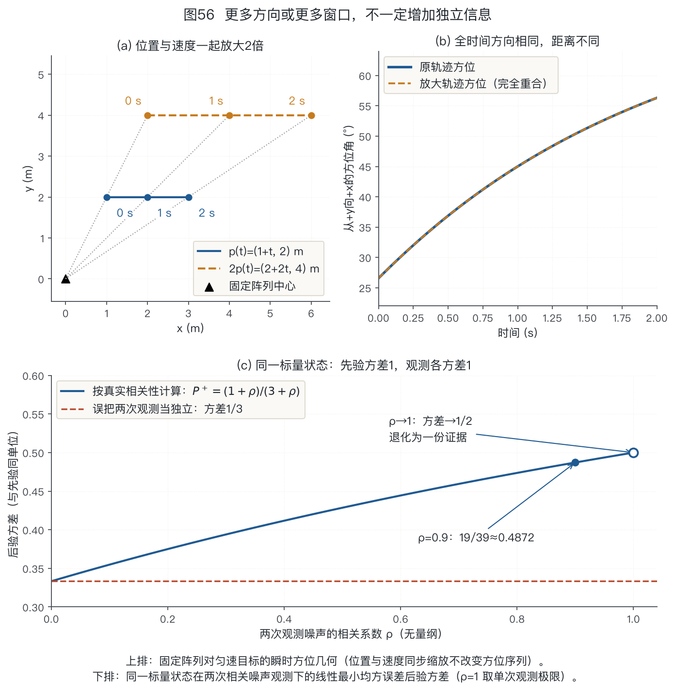
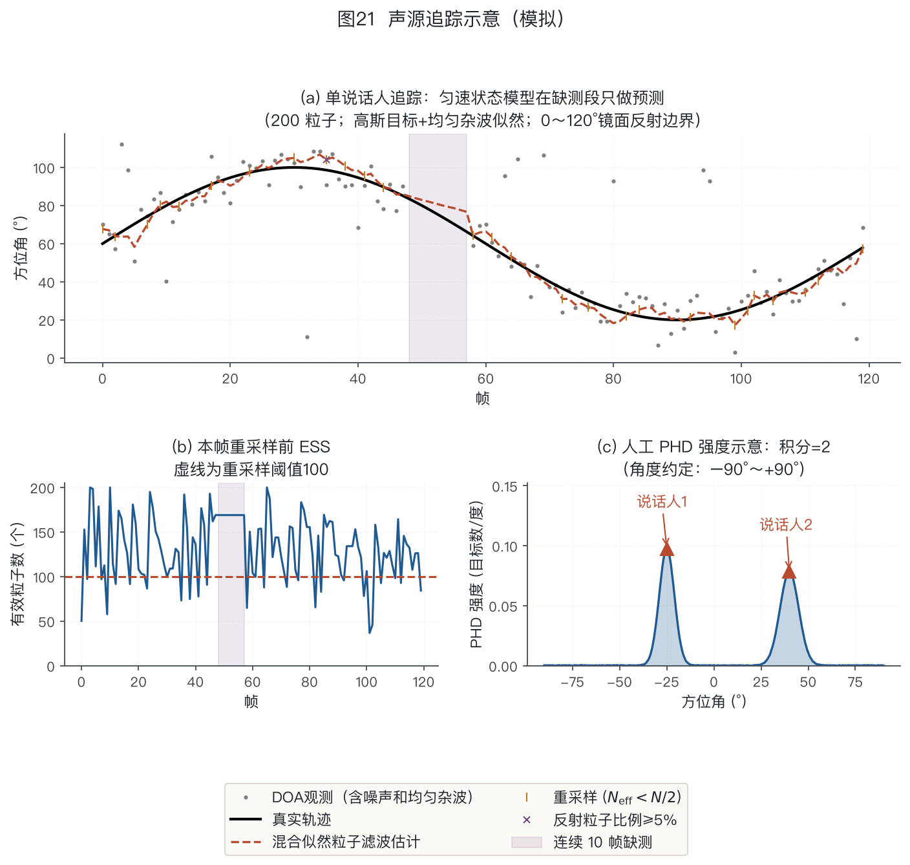
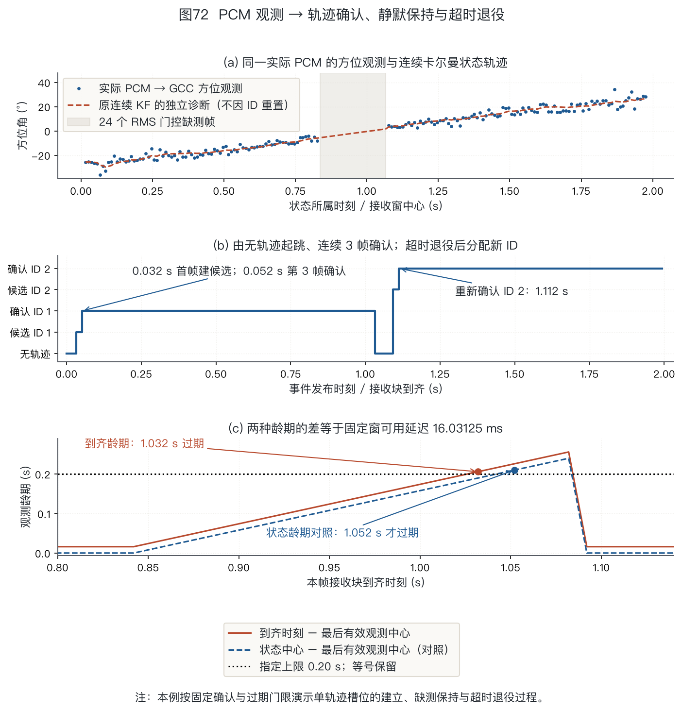
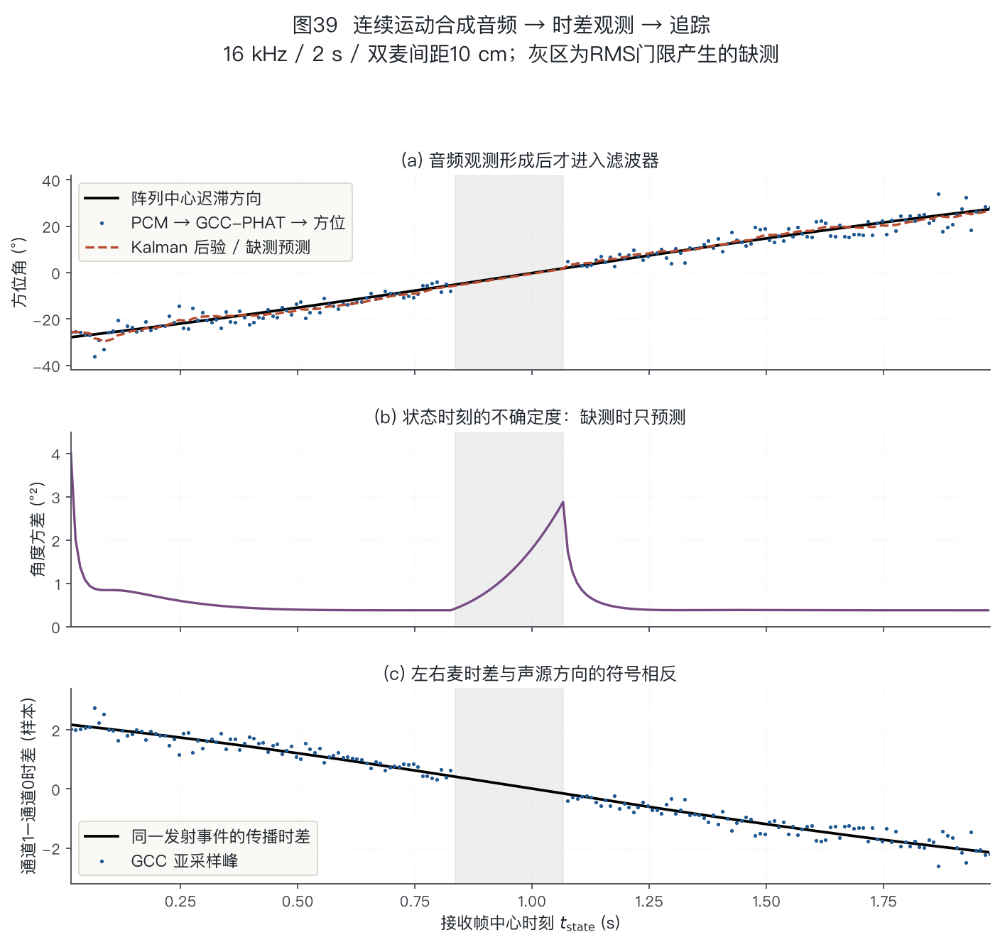

本页目录
本篇是本书正文第 9 章；正文与扩展专题共 16 章（第 0～15 章，其中第 0 章为数学基础，第 12～15 章为四篇扩展专题），另有附录 A、B。本篇可独立阅读，前后篇见下方导航。
导读首页：🏠 导读与导航 ｜ 上一篇：第 8 章 · 语音分离 ｜ 下一篇：第 10 章 · 工程实现、评测与产业实践
9. 声源追踪
9.1 问题与声学特殊性
本章最小术语与阅读顺序
第 4 章的声源定位回答“这一帧声音从哪里来”，本章的声源追踪则回答“结合此前积累的观测，当前声源位于哪个方向或位置，不确定度有多大”。阅读本章时，建议先跟着手算走通一次卡尔曼递推，再理解粒子滤波的加权与重采样以及多目标数据关联，最后核对接口中的状态时间戳，避免把滞后的过去方向误当作当前波束指向。
| 术语 | 本章含义 |
|---|---|
| 波达方向（Direction of Arrival，DOA） | 相对指定阵列坐标系的声源方向 |
| 语音活动检测（Voice Activity Detection，VAD） | 判断当前帧是否存在语音活动证据，不等于判断说话人是否离场 |
| 状态、观测、新息 | 待估计的隐变量、定位器输出的测量量、当前观测减去预测观测的残差 |
| 先验、后验 | 本帧观测更新之前与更新之后的状态概率分布 |
| 协方差 | 估计误差的二阶中心矩；对角元为各分量方差，非对角元刻画误差间的线性相关性 |
| 轨迹标签 | 追踪器维护的局部持续标识，不自动等同于永久说话人身份 |
方向状态、位置状态与可观测性
声源追踪将含噪且常因停顿而中断的逐帧定位结果融合为平滑轨迹，为自适应波束形成提供低抖动的因果方向估计。状态向量的设计取决于观测类型与下游需求：仅跟踪水平方位角时可取 $\vec{s}_t=[\theta_t,\dot{\theta}_t]^\top$，剧烈转弯或启停频繁时可增广角加速度 $\ddot{\theta}_t$，需要联合跟踪平面位置时则取 $\vec{s}_t=[x_t,y_t,\dot{x}_t,\dot{y}_t]^\top$。角度状态各分量的量纲依次为角度、角速度与角加速度；笛卡尔位置状态则须先固定阵列参考原点、坐标轴朝向及长度与时间单位。
公开评测基准如 LOCATA 官方任务页（Evers 等 2020，IEEE/ACM TASLP 28:1620–1643）定义了涵盖单源/多源、静止/移动声源与移动阵列的六类任务。其开发集同步提供多通道录音及麦克风、声源的三维位置真值，而评测集仅公开录音与麦克风位置真值；自行评测逐帧定位或追踪误差时，需选用带声源位置真值的数据集并按任务编号分开统计（数据集选型原则见 §10.6）。
与雷达或视觉目标跟踪相比，室内声源追踪面临四项突出的物理难点：
- 自然语音包含大量音节间隙与句间停顿，观测呈间歇到达，需要借助语音活动检测（VAD）做观测门控并在短暂停顿时维持轨迹外推；
- 房间混响的强早期反射会引发严重的非高斯偏差与角度野点（假峰）；
- 会议与家庭场景中同时发声的人数随时间动态增减；
- 阵列测得的波达方向（DOA）与声源笛卡尔坐标之间呈强非线性映射。
设平面状态包含位置与速度 $[x,y,\dot{x},\dot{y}]^\top$，阵列几何中心位于 $(x_0,y_0)$。沿用第 2～5 章“以 $+y$ 轴为 $0^\circ$、向 $+x$ 轴顺时针旋转为正”的方位角约定，无噪方位观测函数写为 $\theta=\operatorname{atan2}(x-x_0,y-y_0)$（四象限反正切与圆周角度环绕性质见第 0 章 §0.1）。此处 atan2 的第一个自变量是横轴分量 $x-x_0$（对应 $\sin\theta$），第二个自变量是纵轴分量 $y-y_0$（对应 $\cos\theta$），切勿照搬标准数学极角 $\operatorname{atan2}(y-y_0,x-x_0)$ 的参数顺序。
以阵列中心位于原点 $(0,0)$、声源位于 $(1\ \mathrm{m},2\ \mathrm{m})$ 为例，本书约定给出 $\operatorname{atan2}(1,2)\approx 26.565^\circ$；若误将两参数颠倒，算出的 $\operatorname{atan2}(2,1)\approx 63.435^\circ$ 实际是以 $+x$ 轴为零点的极角。两套角度本身都合法，但定位模块、追踪器与波束形成器的导向矢量必须共享同一角度约定，直接混传会使波束偏离目标方向。
从几何可观测性看，单个固定阵列仅凭方位角无法唯一确定声源距离。仍以原点处的阵列为例，位于 $(1\ \mathrm{m},1\ \mathrm{m})$ 与 $(2\ \mathrm{m},2\ \mathrm{m})$ 的两个声源处在同一条射线上，$\operatorname{atan2}$ 均输出 $45^\circ$，沿径向按任意正比例缩放坐标完全不改变方位角读数。
即便把多帧方位角串联起来，只要阵列静止在原点且声源做未知常速度直线运动 $\vec{p}(t)=\vec{p}_0+t\vec{v}$（暂忽略传播时延），将初始位置与初始速度同时乘以任意正比例因子 $a>0$，由四象限反正切的正齐次性立得
$$\begin{aligned} \vec{p}(t)&=\vec{p}_0+t\vec{v},\\ \vec{p}_a(t)&=a\vec{p}_0+t(a\vec{v})=a\vec{p}(t),\\ h(\vec{p}_a(t))&=h(\vec{p}(t)). \end{aligned}\tag{9-1}$$
整条轨迹在任意时刻的瞬时方位角都逐帧重合（四维初态雅可比零空间证明见练习 E09-17，几何图示见下文图 56(a)(b)）。多攒几帧观测只能压低可观测切向上的角度噪声，无法凭空消除径向尺度歧义；即便把线性卡尔曼滤波换成扩展卡尔曼滤波（Extended Kalman Filter，EKF）或无迹卡尔曼滤波（Unscented Kalman Filter，UKF），滤波器也无法从仅测方位数据中“算出”真实距离。
要实现二维或三维位置级追踪，必须引入空间分离的多个子阵、到达时间差（Time Difference of Arrival，TDOA）曲率/距离观测，或让阵列自身做满足可观测性条件（如存在相对机动加速度）的已知运动（理论判据详见 Nardone 与 Aidala 1981 / Fogel 与 Gavish 1989 仅测方位可观测性分析）。
当多阵列或已知阵列机动使位置可观测时，还需处理 $\operatorname{atan2}$ 的非线性。EKF 在当前预测均值处用一阶泰勒展开（雅可比矩阵）将非线性观测局部线性化；UKF 则在预测均值附近按协方差结构确定性地挑出少量代表点（称为 Sigma 点，并非额外检测到的物理声源），把每个点直接代入原非线性观测函数，再由变换后的点集加权恢复观测均值与协方差。
对于维度为 $L$ 的状态向量，标准对称或缩放无迹变换构造 $2L+1$ 个 Sigma 点：平面位置—速度状态（$L=4$）对应 $9$ 个点，方位角—角速度状态（$L=2$）对应 $5$ 个点（工程中也有最小偏度单纯形、球面径向等更少点数的变体，$2L+1$ 并非所有 UKF 的唯一构造）。当声源靠近阵列或从阵列近旁快速掠过时，方位角随位置剧烈变化，UKF 或粒子滤波比一阶线性化的 EKF 更稳健；但若声源恰好穿过阵列中心 $(x_0,y_0)$，方位角在几何上本身无定义，任何滤波器都无法绕开这一物理奇点。下面先从最基础的线性卡尔曼滤波（Kalman Filter，KF）推起，再逐步扩展到非线性观测与多运动模型。
9.2 单目标追踪
9.2.1 卡尔曼预测、观测更新与角度边界
设离散时间帧索引为 $t$，待估计的 $d$ 维状态列向量为 $\vec{s}_t\in\mathbb{R}^d$，定位器提供的 $p$ 维观测列向量为 $\vec{z}_t\in\mathbb{R}^p$。线性状态空间模型写为
$$\begin{aligned} \vec{s}_t&=\mathbf{F}\vec{s}_{t-1}+\vec{v}_t,\\ \vec{z}_t&=\mathbf{H}\vec{s}_t+\vec{w}_t. \end{aligned}\tag{9-2}$$
其中 $\mathbf{F}\in\mathbb{R}^{d\times d}$ 为状态转移矩阵，刻画相邻两帧之间的确定性运动规律；$\mathbf{H}\in\mathbb{R}^{p\times d}$ 为观测矩阵，把 $d$ 维内部状态映射到 $p$ 维观测量；$\vec{v}_t\in\mathbb{R}^d$ 与 $\vec{w}_t\in\mathbb{R}^p$ 分别表示过程噪声（未建模的随机加减速或转身扰动）与观测噪声（单帧 DOA 估计误差）。
标准卡尔曼推导假定 $\vec{v}_t$ 与 $\vec{w}_t$ 均为零均值白噪声序列，彼此互不相关且均与初始状态估计误差正交。在此前提下，过程噪声协方差矩阵 $\mathbf{Q}=\mathbb{E}[\vec{v}_t\vec{v}_t^\top]$（维数 $d\times d$）与观测噪声协方差矩阵 $\mathbf{R}=\mathbb{E}[\vec{w}_t\vec{w}_t^\top]$（维数 $p\times p$）均为对称半正定（通常要求 $\mathbf{R}$ 正定以保证求逆良态）。若定位器存在系统性角度安装偏置（噪声均值非零），需将偏置增广进状态或先行校准；若相邻重叠分析窗导致观测噪声跨帧强相关，则需恢复交叉协方差项或做状态增广。
记给定截至 $t-1$ 帧观测时的本帧先验预测均值为 $\hat{\vec{s}}_t^-$，先验误差为 $\vec{e}_t^-=\vec{s}_t-\hat{\vec{s}}_t^-$，先验误差协方差矩阵 $\mathbf{P}_t^-$ 定义为 $\mathbb{E}[\vec{e}_t^-(\vec{e}_t^-)^\top]$（维数 $d\times d$）；融入本帧观测 $\vec{z}_t$ 后的后验均值与误差协方差矩阵分别记为 $\hat{\vec{s}}_t$ 与 $\mathbf{P}_t$，卡尔曼增益记为 $\mathbf{K}_t\in\mathbb{R}^{d\times p}$。只要上述零均值与不相关二阶统计条件成立，卡尔曼递推在所有线性无偏估计器中达到最小均方误差（LMMSE）；若进一步假定初态与噪声服从联合高斯分布，后验分布严格保持高斯并由 $(\hat{\vec{s}}_t,\mathbf{P}_t)$ 完整刻画，该递推同时给出全局贝叶斯条件均值（线性最小均方误差与贝叶斯递推基础见第 0 章 §0.6，原始证明见 Kalman 1960 奠基论文 §Optimal Estimates 与 Theorem 3）。
阅读矩阵维度与量纲时，协方差矩阵第 $(i,j)$ 个元素的单位等于第 $i$ 个与第 $j$ 个状态分量单位的乘积。以两分量角运动状态 $\vec{s}_t=[\theta_t,\dot{\theta}_t]^\top$（角度用 $\mathrm{deg}$，角速度用 $\mathrm{deg/frame}$）为例，$\mathbf{P}_t$ 主对角线两项的单位分别是 $\mathrm{deg}^2$ 与 $(\mathrm{deg/frame})^2$，非对角互协方差的单位则是 $\mathrm{deg}^2/\mathrm{frame}$，对应的观测矩阵为 $\mathbf{H}=[1,\ 0]$（若采用含角加速度的三分量状态 $[\theta,\dot{\theta},\ddot{\theta}]^\top$，则 $\mathbf{H}=[1,\ 0,\ 0]$，切勿将其误读为三维空间坐标）。
当定位器每帧只输出单个方位角时，$p=1$，观测向量退化为标量 $\theta_t^{\mathrm{obs}}$，观测噪声矩阵 $\mathbf{R}$ 与新息协方差矩阵 $\mathbf{S}_t$ 均退化为 $1\times 1$ 标量方差，下文在标量情形下分别记作 $R$ 与 $S_t$，在一般多维推导中保持正粗体 $\mathbf{R}$ 与 $\mathbf{S}_t$。
整个递推由“时间预测”和“观测更新”两步交替组成：预测步顺着运动学模型向前推演均值并累加过程不确定度；更新步先算出实际观测与预测观测之差（称为新息），再按预测与观测各自的不确定度比例修正状态并收缩误差协方差。
卡尔曼滤波（KF）的五步递推（状态取 [角度, 角速度]）：
-
预测状态：
$$\hat{\vec{s}}^-_t = \mathbf{F}\hat{\vec{s}}_{t-1}.\tag{9-3}$$
-
预测协方差：
$$\begin{aligned} \mathbf{P}^-_t&=\mathbf{F}\mathbf{P}_{t-1}\mathbf{F}^\top +\mathbf{Q}. \end{aligned}\tag{9-4}$$
$\mathbf{F}$ 先把上一帧误差协方差映射并耦合到当前帧，$\mathbf{Q}$ 再叠加未建模运动的过程噪声。注意“叠加半正定项 $\mathbf{Q}$”并不等价于“每个矩阵对角元必大于上一帧”：例如对称正定初态 $\mathbf{P}=[4,-1;\ -1,1]$（行列式 $3>0$）与 $\mathbf{Q}=\mathbf{0}$ 经 $\mathbf{F}=[1,1;\ 0,1]$ 外推一步后，负互协方差引起的误差抵消反而使左上角角度方差由 $4$ 降至 $3$（$\mathbf{P}^-=[3,0;\ 0,1]$）；但在初态正交或同号互协方差的匀速外推情形下，角度方差会随缺测帧数持续增长。
-
计算卡尔曼增益：
$$\begin{aligned} \mathbf{S}_t&=\mathbf{H}\mathbf{P}_t^-\mathbf{H}^\top+\mathbf{R},\\ \mathbf{K}_t&=\mathbf{P}_t^-\mathbf{H}^\top\mathbf{S}_t^{-1}. \end{aligned}\tag{9-5}$$
$\mathbf{R}$ 是式(9-2)定义的观测噪声协方差矩阵，$\mathbf{S}_t$ 是预测观测残差的总协方差矩阵。对 $p=1$ 的标量方位角观测，在另一项固定时，较小的观测方差会增大角度增益，较小的预测角度方差会减小角度增益；这一标量单调直觉不能直接套用到一般多维矩阵增益的每个分量上。
-
更新状态：
$$\begin{aligned} \nu_t&=\theta_t^{\mathrm{obs}}-\mathbf{H}\hat{\vec{s}}_t^-,\\ \hat{\vec{s}}_t&=\hat{\vec{s}}_t^-+\mathbf{K}_t\nu_t. \end{aligned}\tag{9-6}$$
第一行的差称为新息（innovation），表示本帧观测带来了多少超出先验预测的新信息；多维观测下写作 $\vec{\nu}_t=\vec{z}_t-\mathbf{H}\hat{\vec{s}}_t^-$，其协方差正是第 3 步的 $\mathbf{S}_t$（标量情形记为 $S_t$）。
-
更新协方差：
$$\begin{aligned} \mathbf{P}_t&=(\mathbf{I}-\mathbf{K}_t\mathbf{H})\mathbf{P}^-_t. \end{aligned}\tag{9-7}$$
方位角跨越表示区间边界时，式(9-6)中的角度新息不能直接做普通实数减法。若全系统统一将水平方位角主值固定在半开区间 $[-180^\circ,180^\circ)$，可定义最短圆周角环绕算子：
$$\begin{aligned} b&=\alpha+180^\circ,\\ r&=b\bmod 360^\circ,\\ \operatorname{wrap}_{180}(\alpha)&=r-180^\circ. \end{aligned}\tag{9-8}$$
这里 $\bmod$ 取与除数同号的非负余数 $r\in[0^\circ,360^\circ)$。第 4 步计算新息时应先对原始角差 $\theta_t^{\mathrm{obs}}-\mathbf{H}\hat{\vec{s}}_t^-$（记为 $\Delta\theta_t$）施加环绕，即 $\nu_t=\operatorname{wrap}_{180}(\Delta\theta_t)$；预测步与更新步结束后，同样需要把状态向量中的角度分量按式(9-8)映射回 $[-180^\circ,180^\circ)$，而角速度 $\dot{\theta}_t$ 属于切空间实数，绝不能做角度环绕。数值实现时应先保证输入角度已处于规范区间附近再做差环绕，避免对极小角差反复加减 $180^\circ$ 引入额外的浮点尾数损失。
看一个直观例子：设预测方位为 $+179^\circ$，本帧实测方位为 $-179^\circ$。在圆周上声源其实只跨过背向分界线顺时针走了 $+2^\circ$，直接相减却算出 $-358^\circ$——若不环绕，滤波器会误以为目标在反方向横跨了近一整圈而将状态大幅拉偏，后面的新息门控也会把这条准确观测误判为野点剔除。
若预测与观测恰好相差 $180^\circ$（对跖方向），顺时针与逆时针弧长相等，式(9-8)按半开区间约定统一返回 $-180^\circ$，此时单靠当前新息符号无法判断真实转向。还需注意：环绕算子仅解决单峰局部高斯跨越人为坐标接缝的问题，若真实后验本身横跨宽扇区或呈前后对称双峰，则应改用圆周统计或粒子滤波；反之，若贴墙安装的线阵仅在 $[-90^\circ,90^\circ]$ 有限扇区内工作，两端并非物理相邻方向，不能套用 $360^\circ$ 环绕。
为什么协方差更新能写成式(9-7)，而工程代码里又普遍改用更长一截的 Joseph 稳定形式？我们不妨把后验误差协方差从头推一遍，顺便把最优增益式(9-5)也一并推出来。对于任意给定的线性增益矩阵 $\mathbf{K}_t\in\mathbb{R}^{d\times p}$，把观测方程 $\vec{z}_t=\mathbf{H}\vec{s}_t+\vec{w}_t$ 代入更新量 $\mathbf{K}_t\vec{\nu}_t$（其中 $\vec{\nu}_t=\vec{z}_t-\mathbf{H}\hat{\vec{s}}_t^-$），后验估计误差 $\vec{e}_t=\vec{s}_t-\hat{\vec{s}}_t$ 可整理为先验误差 $\vec{e}_t^-=\vec{s}_t-\hat{\vec{s}}_t^-$ 与观测噪声 $\vec{w}_t$ 的线性组合：
$$\begin{aligned} \vec{e}_t &=\vec{s}_t-\hat{\vec{s}}_t^- -\mathbf{K}_t(\mathbf{H}\vec{e}_t^-+\vec{w}_t)\\ &=(\mathbf{I}-\mathbf{K}_t\mathbf{H})\vec{e}_t^- -\mathbf{K}_t\vec{w}_t. \end{aligned}$$
在给定更新前历史信息的条件下，假设先验误差 $\vec{e}_t^-$ 与本帧观测噪声 $\vec{w}_t$ 均为零均值、互不相关，其条件协方差分别为 $\mathbf{P}_t^-$ 与 $\mathbf{R}$。若增益 $\mathbf{K}_t$ 在这一条件下固定，计算条件外积期望时交叉项为零，便得到 Joseph 协方差更新式；固定增益可以次优：
$$\begin{aligned} \mathbf{A}_t&=\mathbf{I}-\mathbf{K}_t\mathbf{H},\\ \mathbf{P}_t&=\mathbf{A}_t\mathbf{P}_t^-\mathbf{A}_t^\top +\mathbf{K}_t\mathbf{R}\mathbf{K}_t^\top. \end{aligned}\tag{9-9}$$
若门控或增益还依赖本轮新息，就不能直接把它从期望中提出去；此时式(9-9)仍可作为保持半正定的名义协方差递推，真实误差协方差则需另行验证，原因见第6章卡尔曼 AEC 的推导。
增益为什么按不确定度加权
有了上述条件下的误差协方差式(9-9)，“卡尔曼增益 $\mathbf{K}_t$ 为什么长成式(9-5)那样”就变成一道单纯的求极值题：我们要挑选 $\mathbf{K}_t$，使各状态分量的后验均方误差总和——即协方差矩阵的迹 $J(\mathbf{K}_t)=\operatorname{tr}(\mathbf{P}_t)$——达到最小。先看最直观的一维标量情形（$d=p=1$，$H=1$）：此时后验误差为 $e^+=(1-k)e^--kw$，先验方差 $P^-$ 与观测噪声方差 $R$ 均为正标量，对 $k$ 求导令其为零：
$$\begin{aligned} J(k)&=\mathbb{E}[(s-\hat{s}^+)^2]=(1-k)^2P^-+k^2R,\\ J'(k)&=-2(1-k)P^-+2kR=0,\\ k_*&=\frac{P^-}{P^-+R}. \end{aligned}\tag{9-10}$$
代回 $P^-=4$、$R=1$，最优权重为 $k_*=4/(4+1)=4/5$，后验方差收缩至 $P^+=(1/5)^2\times 4+(4/5)^2\times 1=4/5$（与 $(1-k_*)P^-$ 一致）：谁的方差更小、确定性更高，更新后均值就更偏向谁；反过来，若观测本身带有未建模的混响固定偏置，盲目把 $R$ 设小反而会把估计强行拉向偏置方向。
把完全相同的求导搬到多维矩阵上：记式(9-5)的新息协方差矩阵为 $\mathbf{S}_t$（等于 $\mathbf{H}\mathbf{P}_t^-\mathbf{H}^\top+\mathbf{R}$），将式(9-9)完整乘开得
$$\begin{aligned} \mathbf{P}_t &=\mathbf{P}_t^--\mathbf{K}_t\mathbf{H}\mathbf{P}_t^- -\mathbf{P}_t^-\mathbf{H}^\top\mathbf{K}_t^\top +\mathbf{K}_t\mathbf{S}_t\mathbf{K}_t^\top. \end{aligned}$$
利用矩阵迹对 $\mathbf{K}$ 的梯度规则（线性项 $\operatorname{tr}(\mathbf{K}\mathbf{B})$ 的梯度为 $\mathbf{B}^\top$，对称二次项 $\operatorname{tr}(\mathbf{K}\mathbf{S}\mathbf{K}^\top)$ 的梯度为 $2\mathbf{K}\mathbf{S}$，其中 $\mathbf{P}_t^-$ 与 $\mathbf{S}_t$ 均对称），对 $\mathbf{K}_t$ 求偏导并令梯度为零矩阵：
$$\begin{aligned} \frac{\partial\operatorname{tr}(\mathbf{P}_t)}{\partial\mathbf{K}_t} &=-2\mathbf{P}_t^-\mathbf{H}^\top +2\mathbf{K}_t\mathbf{S}_t=\mathbf{0},\\ \mathbf{K}_t&=\mathbf{P}_t^-\mathbf{H}^\top\mathbf{S}_t^{-1}. \end{aligned}$$
这正是第 3 步的最优卡尔曼增益式(9-5)。再把刚证出的最优关系 $\mathbf{K}_t\mathbf{S}_t=\mathbf{P}_t^-\mathbf{H}^\top$ 右乘 $\mathbf{K}_t^\top$ 代回上面展开式的末项，恰好与倒数第二项 $-\mathbf{P}_t^-\mathbf{H}^\top\mathbf{K}_t^\top$ 正负相消，只剩下第 5 步的简写式(9-7)（即 $\mathbf{P}_t=\mathbf{A}_t\mathbf{P}_t^-$）。
取理论最优卡尔曼增益时，式(9-9)可化为简写式(9-7)，手算更方便。有限字长浮点运算或增益限幅后，简式不保证与 Joseph 形式相等，直接计算 $(\mathbf{I}-\mathbf{K}_t\mathbf{H})\mathbf{P}_t^-$ 还可能失去对称性或出现负对角方差。Joseph 形式式(9-9)在精确算术下将两个对称半正定二次型相加，通常有较好的数值稳定性；实现中仍应校验输入协方差的对称性和半正定性。
新息门控与协方差有效性
房间强反射常在远离真实声源的方位产生瞬态伪峰，送入更新步前必须检验新息相对于当前预测不确定度是否合理。令 $\vec{\nu}_t\in\mathbb{R}^p$ 为新息向量、$\mathbf{S}_t$ 为新息协方差矩阵，归一化新息平方（Normalized Innovation Squared，NIS，又称平方马氏距离）定义为
$$\begin{aligned} \epsilon_\nu&=\vec{\nu}_t^\top\mathbf{S}_t^{-1}\vec{\nu}_t,\\ p=1:\quad\epsilon_\nu&=\nu_t^2/S_t. \end{aligned}\tag{9-11}$$
在线性高斯模型一致、新息为零均值高斯向量且数据关联无误、$\mathbf{S}_t$ 正定的前提下，门控筛选之前的 $\epsilon_\nu$ 服从自由度为 $p$ 的卡方分布 $\chi_p^2$（例如 $p=1$ 时，$\epsilon_\nu\le 9$ 对应标准正态 $3\sigma$ 区间，理论拒真率约 $0.27\%$；关于 NIS 与归一化估计误差平方 NEES 的滤波器一致性检验框架详见 Bar-Shalom、Li 与 Kirubarajan 2001）。工程上据此设定门限剔除异常野点，但要注意四点边界：第一，某条观测落入门内并不等于“该观测来自目标的后验概率为 $99.7\%$”；第二，一旦剔除了超门限样本，留存的新息序列就变成了截断分布，不能再拿门控后的样本直接做未截断 $\chi_p^2$ 拟合优度检验；第三，圆周角上的高斯分布只是误差集中于窄角区时的局部近似（跨 $\pm 180^\circ$ 环绕影响见练习 E09-05）；第四，NIS 是无量纲量——将角度从度换算为弧度（比例 $a=\pi/180$）时，状态与观测乘 $a$、协方差矩阵 $\mathbf{P},\mathbf{Q},\mathbf{R}$ 必须同步乘 $a^2$，此时 $\epsilon_\nu$ 严格不变，若漏改协方差量纲则会令 $\epsilon_\nu$ 虚缩约 $3.05\times 10^{-4}$ 倍而使野点门控失效。
此外，高重叠 STFT 帧（如 $75\%$ 重叠）送出的相邻定位观测往往携带强时间相关噪声，若仍盲目套用白噪声独立更新假设，就会造成严重的账面过度自信。考察静止标量先验 $x\sim\mathcal{N}(0,1)$ 收到两条单位读数 $\vec{z}=[1,\ 1]^\top$、测量噪声协方差为 $\mathbf{R}=[1,\rho;\ \rho,1]$（$|\rho|\lt 1$）的最小解析对照：由于共享状态方差 $P^-=1$ 同时进入两条观测，联合新息协方差为 $\mathbf{S}=[2,1+\rho;\ 1+\rho,2]$，代入式(9-5)与式(9-7)立得精确后验：
$$\begin{aligned} \mathbf{K}&=\frac{[1,\ 1]}{3+\rho},\\ m^+&=\frac{2}{3+\rho},\\ P^+&=1-\mathbf{K}\mathbf{H}=\frac{1+\rho}{3+\rho}. \end{aligned}\tag{9-12}$$
当 $\rho=0.9$ 时，真实后验方差为 $19/39\approx 0.487$，而误设 $\rho=0$ 的独立更新却虚报出偏小三分之一的 $1/3\approx 0.333$；当 $\rho\to 1$ 时，$P^+\to 0.5$，完全退化为只测了一条观测的结果。图 56 集中展示了 §9.1 式(9-1)的仅测方位尺度歧义与本节式(9-12)的相关观测信息衰减两条核心信息边界（完整解析复算见练习 E09-17）：

读图 56 的三幅子图可以一眼看清信息不足与信息重复的对称教训：
- 左上子图 (a) 在平面坐标 $(x,y)$（单位：$\mathrm{m}$）下画出匀速基准轨迹 $\vec{p}(t)=(1+t,2)$ 与两倍放大轨迹 $2\vec{p}(t)=(2+2t,4)$，固定阵列原点 $(0,0)$ 在 $t=0,1,2\ \mathrm{s}$ 发出的射线同时穿过两轨对应点；
- 右上子图 (b) 画出两轨随时间演化的瞬时方位角曲线，全时段精确重合，直观印证单固定阵列仅测方位无法解耦距离与速度尺度；
- 下方通栏子图 (c) 横轴为测量误差相关系数 $\rho\in[0,1)$、纵轴为标量后验方差，真实方差曲线 $(1+\rho)/(3+\rho)$ 随相关性升高从 $1/3$ 单调退化至极限 $1/2$，而忽略相关性的水平误配线始终停在 $1/3$，揭示高重叠率加密推送观测时的虚假置信风险。
9.2.2 算例 9-1：卡尔曼滤波单步复算
下面用一组完整的手算数字，从头到尾走通式(9-3)～式(9-7)的一次预测与更新，考察相对阵列方位平缓移动的单个声源（注意：若说话人站在原地仅转动头部，声源发声位置未变，一般不会产生此类整体方位平移轨迹）。
输入与模型口径。 取两分量角运动状态 $\vec{s}_t=[\theta_t,\dot{\theta}_t]^\top$，角度以度（$\mathrm{deg}$）计，角速度以度/帧（$\mathrm{deg/frame}$）计。省略角加速度的常速度模型适合平缓移动阶段；若目标频繁启停或急转，可换用含加速度状态或 §9.2.3 的交互多模型（Interacting Multiple Model，IMM）。给定本步输入参数如下：
- 上一帧后验状态均值：$\hat{\vec{s}}_{t-1}=[30,\ 0.5]^\top$，即估计方位在 $30^\circ$，正以 $0.5^\circ/\mathrm{frame}$ 的角速度向正方向移动；
- 上一帧后验协方差：$\mathbf{P}_{t-1}=\operatorname{diag}(4,0.25)$，对应角度标准差 $2^\circ$（方差 $4\ \mathrm{deg}^2$）、角速度标准差 $0.5\ \mathrm{deg/frame}$（方差 $0.25\ (\mathrm{deg/frame})^2$），且初始误差不相关；
- 状态转移矩阵（步长为 $1$ 帧的匀速外推）：$\mathbf{F}=\begin{bmatrix}1&1\\0&1\end{bmatrix}$，表示 $\theta_t=\theta_{t-1}+1\cdot\dot{\theta}_{t-1}$、$\dot{\theta}_t=\dot{\theta}_{t-1}$；
- 过程噪声协方差：$\mathbf{Q}=\begin{bmatrix}0.1&0\\0&0.01\end{bmatrix}$，刻画相邻两帧间未建模的微小运动波动，$\mathbf{Q}$ 越大代表运动先验越宽松；
- 观测模型与本帧读数：定位器只输出标量方位角，故 $\mathbf{H}=[1,\ 0]$；本帧测得 $\theta_t^{\mathrm{obs}}=32^\circ$，标量观测噪声方差 $R=25\ \mathrm{deg}^2$（即 $1\times 1$ 矩阵 $\mathbf{R}=[25]$，对应单帧 DOA 标准差 $5^\circ$，比先验预测粗糙）。
第 1 步：状态预测 $\hat{\vec{s}}_t^-=\mathbf{F}\hat{\vec{s}}_{t-1}$。代入转移矩阵，把上一帧角速度累加到角度分量上：
$$\begin{aligned} \hat{\vec{s}}_t^-&=\begin{bmatrix}1&1\\0&1\end{bmatrix} \begin{bmatrix}30\\0.5\end{bmatrix}\\ &=\begin{bmatrix}30+0.5\\0.5\end{bmatrix} =\begin{bmatrix}30.5\\0.5\end{bmatrix}. \end{aligned}$$
尚未看本帧新观测前，模型外推声源到达 $30.5^\circ$，角速度维持 $0.5^\circ/\mathrm{frame}$。
第 2 步：协方差预测（按式(9-4)计算 $\mathbf{P}_t^-$）。分两步做矩阵乘法，先算左半部分 $\mathbf{F}\mathbf{P}_{t-1}$ 再右乘 $\mathbf{F}^\top=\begin{bmatrix}1&0\\1&1\end{bmatrix}$：
$$\begin{aligned} \mathbf{F}\mathbf{P}_{t-1} &=\begin{bmatrix}1&1\\0&1\end{bmatrix} \begin{bmatrix}4&0\\0&0.25\end{bmatrix} =\begin{bmatrix}4&0.25\\0&0.25\end{bmatrix},\\ \mathbf{F}\mathbf{P}_{t-1}\mathbf{F}^\top &=\begin{bmatrix}4+0.25&0.25\\0.25&0.25\end{bmatrix} =\begin{bmatrix}4.25&0.25\\0.25&0.25\end{bmatrix}. \end{aligned}$$
可以看到，即便还没加 $\mathbf{Q}$，左上角的角度方差已从 $4$ 涨到 $4.25$，同时非对角元出现了 $+0.25$ 的正相关——这是因为角速度原本存在 $0.25$ 的方差，经过一帧位移外推后，速度估偏多少就会同方向带偏角度预测。接着加上过程噪声 $\mathbf{Q}$：
$$\begin{aligned} \mathbf{P}_t^-&=\begin{bmatrix}4.25&0.25\\0.25&0.25\end{bmatrix} +\begin{bmatrix}0.1&0\\0&0.01\end{bmatrix}\\ &=\begin{bmatrix}4.35&0.25\\0.25&0.26\end{bmatrix}. \end{aligned}$$
此时预测角度标准差为 $\sqrt{4.35}\approx 2.09^\circ$。
第 3 步：计算卡尔曼增益 $\mathbf{K}_t=\mathbf{P}_t^-\mathbf{H}^\top S_t^{-1}$。由于 $\mathbf{H}=[1,\ 0]$ 只提取第一维角度，$\mathbf{H}\mathbf{P}_t^-\mathbf{H}^\top$ 直接挑出 $\mathbf{P}_t^-$ 的左上角元素 $4.35$，标量新息方差为
$$\begin{aligned} S_t&=\mathbf{H}\mathbf{P}_t^-\mathbf{H}^\top+R\\ &=4.35+25=29.35\ \mathrm{deg}^2. \end{aligned}$$
分子 $\mathbf{P}_t^-\mathbf{H}^\top=[4.35,\ 0.25]^\top$ 恰好是 $\mathbf{P}_t^-$ 的第一列，除以标量 $S_t$ 得 $2\times 1$ 增益向量：
$$\begin{aligned} \mathbf{K}_t&=\frac{1}{29.35}\begin{bmatrix}4.35\\0.25\end{bmatrix} \approx\begin{bmatrix}0.148\\0.0085\end{bmatrix}. \end{aligned}$$
更精细的中间商依次为 $K_1\approx 0.148211$ 与 $K_2\approx 0.008518$（上式仅作展示舍入）。这里两个分量各有清晰的物理含义：$K_1\approx 0.148$ 表明，由于单帧观测噪声方差（$25$）远大于预测角度方差（$4.35$），角度更新只采纳本帧新息的约 $14.8\%$；而定位器虽然根本没测角速度，但由于第 2 步预测协方差的非对角项 $P_{21}^-=0.25>0$ 建立了角度误差与速度误差的耦合，正的角度残差同样顺带把角速度往上微调了 $K_2\approx 0.0085\ (\mathrm{frame})^{-1}$。
第 4 步：状态更新 $\hat{\vec{s}}_t=\hat{\vec{s}}_t^-+\mathbf{K}_t\nu_t$。本帧角度新息为 $\nu_t=32^\circ-30.5^\circ=1.5^\circ$（即 $\theta_t^{\mathrm{obs}}-\mathbf{H}\hat{\vec{s}}_t^-$，未跨越 $\pm 180^\circ$ 边界），保留精确分数增益代入得
$$\begin{aligned} \hat{\vec{s}}_t&=\begin{bmatrix}30.5\\0.5\end{bmatrix} +\frac{1.5}{29.35}\begin{bmatrix}4.35\\0.25\end{bmatrix}\\ &\approx\begin{bmatrix}30.722317\\0.512777\end{bmatrix}. \end{aligned}$$
更新后方位角为 $30.72^\circ$（落在预测值 $30.5^\circ$ 与粗糙观测值 $32^\circ$ 之间，且明显偏向更可信的预测一侧），角速度同步微调至 $0.513^\circ/\mathrm{frame}$。
第 5 步：协方差更新（按式(9-7)计算 $\mathbf{P}_t$）。手算时务必代入未舍入的精确分数增益 $\mathbf{K}_t=[4.35,\ 0.25]^\top/29.35$（若中途拿两位或三位展示小数回代，不仅末位失真，还可能使算出的上下三角非对角元不相等）：
$$\begin{aligned} \mathbf{I}-\mathbf{K}_t\mathbf{H} &=\begin{bmatrix}1-4.35/29.35&0\\-0.25/29.35&1\end{bmatrix} =\begin{bmatrix}25/29.35&0\\-0.25/29.35&1\end{bmatrix},\\ \mathbf{P}_t&=(\mathbf{I}-\mathbf{K}_t\mathbf{H})\mathbf{P}_t^- \approx\begin{bmatrix}3.705&0.213\\0.213&0.258\end{bmatrix}. \end{aligned}$$
逐项核对精确分数：$P_{11}=25\times 4.35/29.35\approx 3.705281$，$P_{12}=P_{21}=25\times 0.25/29.35\approx 0.212947$，$P_{22}=0.26-0.25^2/29.35\approx 0.257871$，全部算完后再统一保留三位小数（若中途把 $25/29.35\approx 0.8518$ 粗略截成 $0.852$，则会算成 $0.852\times 4.35=3.7062$，末位偏差一目了然）。
结果解读与失效边界。 融合本帧观测后，角度估计方差从预测时的 $4.35\ \mathrm{deg}^2$ 降至 $3.705\ \mathrm{deg}^2$（标准差从 $2.09^\circ$ 收窄到约 $1.92^\circ$），证实哪怕单帧观测标准差高达 $5^\circ$，只要无偏且方差标定准确，融合后仍比单靠预测或单靠观测更准。若下一帧说话人停顿导致无有效观测，则跳过第 3～5 步，只执行第 1、2 步外推状态并让角度方差继续增大，这正是 §9.4“静默保持”的数学机制。反之，若声源突然急停转向（违反常速度模型）或本帧 $32^\circ$ 其实换成一处 $85^\circ$ 的强墙面反射假峰（违反高斯白噪声模型且未加式(9-11)门控），账面协方差 $\mathbf{P}_t$ 虽照样缩小，真实方向误差却会显著恶化。
固定增益与单目标方法的选择
走通了线性卡尔曼递推，下面横向对比六类单目标声源追踪方法的核心假设、优缺点与适用场景。其中 $\alpha$-$\beta$ / $\alpha$-$\beta$-$\gamma$ 滤波器将式(9-5)的时变增益直接替换成离线选定的常系数，省去了每帧的协方差矩阵递推：当采样间隔、运动模型与噪声方差长期恒定且常系数恰好取为代数 Riccati 方程的稳态解时，它与稳态卡尔曼滤波严格等价；一旦帧率抖动、信噪比剧变导致真实 $R$ 改变，或者增益仅凭经验设定，固定增益就无法自动重配权重（$\alpha$-$\beta$ 与稳态 KF 的对应关系见 Ekstrand 2012, §9.1，$\alpha$-$\beta$-$\gamma$ 的稳定域与最优增益推导见 Kosuge 与 Ito 2002）。
| 方法 | 原理 | 优点 | 缺点 | 适用 |
|---|---|---|---|---|
| 滑动平均/中值/直方图众数 | 平均为线性平滑；中值/众数为非线性汇总 | 结构简单，不需递推协方差 | 隐含局部平稳假设；延迟大、跟不上机动、多源混杂 | 目标缓慢、观测较密时的基线 |
| α-β / α-β-γ | 用固定增益修正位置、速度（及加速度）预测 | 在线不必反复求 Riccati 递推 | 经验增益未必最优；统计条件变化时不能自行适配 | 采样周期和运动条件较稳定、资源受限的单目标追踪 |
| 卡尔曼滤波 KF | 高斯线性贝叶斯递推（预测+新息加权更新） | 在线性高斯模型正确时得到最小均方误差估计 | 稠密实现随状态维数 $d$、观测维数 $p$ 约为 $O(d^3+p^3)$；标量 DOA 更新可更低，但仍需在目标硬件计时；抗野点差、需调 $\mathbf{Q}/\mathbf{R}$ | 观测质量较好且模型近似成立 |
| EKF（扩展卡尔曼滤波）/UKF（无迹卡尔曼滤波） | 一阶线性化/无迹变换处理非线性 | 可处理位置到角度的非线性观测 | EKF 对线性化误差敏感；标准对称/缩放 UKF 常传播 $2L+1$ 个 Sigma 点，其他变体点数不同 | 分布式阵列位置级追踪 |
| IMM 交互多模型 | 按模式转移概率混合各模型初始状态，再分别预测、更新，以新息似然更新模式权重并融合 | 可在多个预设运动模式之间平滑切换 | 计算量随模型数增加；未包含的运动模式仍会失配，且需标定模型转移概率 | 包含启动、停止和匀速段的机动场景 |
| 粒子滤波（Particle Filter，PF）/序贯重要性重采样（Sequential Importance Resampling，SIR） | 带权粒子近似后验；预测、加权、按需重采样 | 能表示非线性、非高斯和多峰后验 | 鲁棒性取决于似然与杂波模型；会权重退化和样本贫化 | 观测多峰或运动模型明显非线性 |
阅读上表做工程选型时，可以沿着两条主轴逐级升级：第一条轴看运动规律是否单一——慢速单源用两维常速度 KF 即可（$d=2,p=1$ 时每帧仅需十余次标量乘加），若频繁在静止站立与快步走动间切换则升级为 IMM；第二条轴看观测映射与噪声分布——远场单阵列纯角度追踪是线性观测，多阵列联合定位走 EKF/UKF，而在强混响室内定位谱经常同时冒出直达声峰与镜像反射峰时，带杂波混合似然的圆周粒子滤波能保留多峰候选，避免过早锁错方向。
9.2.3 运动模型切换与非线性观测
初学者阅读追踪文献时容易把两类正交的设计混为一谈：匀速、匀加速与停走切换回答“声源在时间上遵循什么运动规律”，而 EKF、UKF 与粒子滤波回答“非线性函数怎样传播概率分布或二阶矩”。两者可以自由组合——例如在分布式阵列位置追踪中，IMM 的每个运动模式内部都可以各自运行一个 EKF 或 UKF。
非等间隔运动与过程噪声
算例 9-1 把帧率隐藏在“每帧”单位里；真实嵌入式系统中音频块可能因跳帧、语音门控或跨传感器异步到达而出现非均匀时间步长 $h>0$（单位：$\mathrm{s}$）。以秒为时间基准，取局部角运动状态 $\vec{s}=[\theta,\dot{\theta}]^\top$（单位分别为 $\mathrm{deg}$ 和 $\mathrm{deg/s}$）。若角速度受功率谱密度（连续强度）为 $q$ 的连续时间零均值白角加速度驱动，对状态微分方程在长度为 $h$ 的区间上积分（完整积分推导见练习 E09-04），得到时间自洽的转移矩阵与离散过程噪声协方差：
$$\begin{aligned} \mathbf{F}(h)&=\begin{bmatrix}1&h\\0&1\end{bmatrix},\\ \mathbf{Q}(h)&=q\begin{bmatrix}h^3/3&h^2/2\\h^2/2&h\end{bmatrix}. \end{aligned}\tag{9-13}$$
当角度取 $\mathrm{deg}$ 时，强度参数 $q$ 的量纲为 $\mathrm{deg}^2/\mathrm{s}^3$，矩阵三类元素的量纲依次落在 $\mathrm{deg}^2$、$\mathrm{deg}^2/\mathrm{s}$ 与 $\mathrm{deg}^2/\mathrm{s}^2$ 上。按矩阵传播律 $\mathbf{Q}(2h)=\mathbf{F}(h)\mathbf{Q}(h)\mathbf{F}(h)^\top+\mathbf{Q}(h)$ 易验，连续走两个半步 $h$ 与一步走 $2h$ 在式(9-13)下具有完全一致的总协方差（切忌错写成 $2\mathbf{Q}(h)$，否则左上角角度方差会漏掉四分之三）；若工程代码把帧移从 $10\ \mathrm{ms}$ 改成 $20\ \mathrm{ms}$ 却忘了重算 $\mathbf{Q}(h)$，实质上就悄悄篡改了底层的物理机动强度。
室内人声常用运动模型：Langevin 阻尼速度、Singer 与 CTR。 常速度（CV）模型假定速度本身做无界随机游走，一旦说话人停步静默超过一两秒，带着非零速度惯性的外推就会让波束“滑出房间”。室内声源追踪奠基文献 Ward、Lehmann 与 Williamson 2003（IEEE TSAP）为此引入一阶 Langevin（Ornstein–Uhlenbeck）阻尼速度过程：给速度分量施加阻尼率 $\beta>0$（单位：$\mathrm{s}^{-1}$）与稳态速度标准差 $\bar{v}$，在步长 $h$ 下令 $a=e^{-\beta h}$、$b=\bar{v}\sqrt{1-a^2}$，则离散状态演进为
$$\begin{aligned} \dot{\theta}_t&=a\,\dot{\theta}_{t-1}+b\,u_t,\qquad u_t\sim\mathcal{N}(0,1),\\ \theta_t&=\theta_{t-1}+h\,\dot{\theta}_{t-1}. \end{aligned}\tag{9-14}$$
（对连续时间 Ornstein–Uhlenbeck 随机微分方程 $\mathrm{d}\dot{\theta}=-\beta\dot{\theta}\,\mathrm{d}t+\sqrt{2\beta}\bar{v}\,\mathrm{d}W_t$ 与 $\mathrm{d}\theta=\dot{\theta}\,\mathrm{d}t$ 在步长 $h>0$ 上精确积分，可得满足半群自洽性 $\mathbf{Q}_{\mathrm{OU}}(2h)=\mathbf{F}_{\mathrm{OU}}(h)\mathbf{Q}_{\mathrm{OU}}(h)\mathbf{F}_{\mathrm{OU}}(h)^\top+\mathbf{Q}_{\mathrm{OU}}(h)$ 的闭式转移矩阵与过程噪声协方差：
$$\begin{aligned} \mathbf{F}_{\mathrm{OU}}(h)&=\begin{bmatrix}1&(1-a)/\beta\\0&a\end{bmatrix},\\ \mathbf{Q}_{\mathrm{OU}}(h)&=\bar{v}^2\begin{bmatrix} \dfrac{2\beta h-3+4a-a^2}{\beta^2}&\dfrac{(1-a)^2}{\beta}\\ \dfrac{(1-a)^2}{\beta}&1-a^2 \end{bmatrix}. \end{aligned}$$
当 $\beta h\ll 1$ 时 $(1-a)/\beta\approx h$——例如 $\beta=1\ \mathrm{s}^{-1},h=0.01\ \mathrm{s}$ 时 $a=e^{-0.01}\approx 0.99005$、$(1-a)/\beta\approx 0.00995\ \mathrm{s}$；在双精度实现中，当 $\beta h\lt 10^{-2}$ 时应对左上项分子采用泰勒展开 $2x-3+4e^{-x}-e^{-2x}\approx \frac{2}{3}x^3-\frac{1}{2}x^4$（$x=\beta h$）以避免有效数字抵消。）当在保持扩散强度 $q=2\beta\bar{v}^2$ 恒定的前提下令 $\beta\to 0$ 时，上述精确连续积分 Langevin 模型退化为式(9-13)的常速度随机加速度模型（若固定 $\bar{v}$ 而令 $\beta\to 0$，则 $b\to 0$、$\mathbf{Q}_{\mathrm{OU}}\to\mathbf{0}$，退化为无过程噪声的确定性匀速运动）；当 $\beta>0$ 时，静默外推期间速度均值按 $e^{-\beta t}$ 指数衰减回零、稳态速度方差锁定在 $\bar{v}^2$，从物理根源抑制了长停顿外推漂移。下表对比室内与机器人声源追踪中最常用的四类单运动模型：
| 运动模型 | 状态向量 | 核心动态机制 | 典型适用场景与边界 |
|---|---|---|---|
| 常速度（CV） | $[\theta,\dot{\theta}]^\top$ 或 $[x,y,\dot{x},\dot{y}]^\top$ | 速度做无阻尼随机游走，见式(9-13) | 短时平缓走动；长静默易速度漂移 |
| Langevin 阻尼速度 | $[\theta,\dot{\theta}]^\top$ 或位置—速度 | 速度按 $e^{-\beta h}$ 衰减向零，见式(9-14) | 会议室与家庭启停说话人（室内声学首选单模型） |
| Singer 相关加速度（Singer 1970） | $[x,\dot{x},\ddot{x}]^\top$（各轴独立） | 加速度服从一阶马尔可夫阻尼 $\ddot{x}_t=e^{-\alpha_{\mathrm{s}}h}\ddot{x}_{t-1}+w_{a,t}$ | 频繁加减速机动，衔接 CV 与常加速度（CA） |
| 恒定转弯率（CTR） | $[x,y,v_x,v_y,\omega]^\top$ | 速度矢量以角速率 $\omega$ 绕圆弧旋转（非线性转移） | 绕会议桌转弯行走或车载/机器人转弯；需配 EKF/UKF |
其中 Singer 模型（Singer 1970, IEEE TAES AES-6(4):473–483）的单轴三维状态转移矩阵为
$$\begin{aligned} \mathbf{F}_{\mathrm{Singer}}(h)&=\begin{bmatrix} 1&h&(e^{-\alpha_{\mathrm{s}}h}+\alpha_{\mathrm{s}}h-1)/\alpha_{\mathrm{s}}^2\\ 0&1&(1-e^{-\alpha_{\mathrm{s}}h})/\alpha_{\mathrm{s}}\\ 0&0&e^{-\alpha_{\mathrm{s}}h} \end{bmatrix}, \end{aligned}$$
其中 $\alpha_{\mathrm{s}}>0$ 为机动加速度时间常数的倒数（$\alpha_{\mathrm{s}}\to 0$ 时趋近常加速度模型，$\alpha_{\mathrm{s}}\to\infty$ 时加速度快速衰减回常速度模型）。
EKF：对本书方位约定求导
当状态取平面位置与速度 $\vec{s}=[x,y,\dot{x},\dot{y}]^\top$、阵列几何中心位于 $(x_0,y_0)$ 时，令相对位移为 $a=x-x_0$、$b=y-y_0$，水平距离平方为 $r^2=a^2+b^2>0$。沿用本书“$+y$ 轴为 $0\ \mathrm{rad}$、向 $+x$ 轴顺时针为正”的方位角约定，以弧度输出的非线性观测函数为 $h(\vec{s})=\operatorname{atan2}(a,b)$。
我们来一步步算出 $h(\vec{s})$ 对状态各分量的偏导数，切勿直接盲抄教科书极角公式。在 $b\neq 0$ 的局部扇区内，$\theta=\operatorname{atan2}(a,b)$ 满足 $\tan\theta=a/b$。利用反正切导数 $(\arctan u)'=(1+u^2)^{-1}$ 并令中间变量 $u=a/b$，按复合函数链式法则分别对 $x$（即对 $a$）和对 $y$（即对 $b$）求偏导：
$$\begin{aligned} \frac{\partial h}{\partial x} &=\frac{1}{1+(a/b)^2}\cdot\frac{\partial(a/b)}{\partial a} =\frac{b^2}{a^2+b^2}\cdot\frac{1}{b}=+\frac{b}{r^2},\\ \frac{\partial h}{\partial y} &=\frac{1}{1+(a/b)^2}\cdot\frac{\partial(a/b)}{\partial b} =\frac{b^2}{a^2+b^2}\cdot\left(-\frac{a}{b^2}\right) =-\frac{a}{r^2}. \end{aligned}$$
对恒等式 $a=r\sin\theta$、$b=r\cos\theta$ 两边取全微分（$b\,\mathrm{d}a-a\,\mathrm{d}b=r^2\,\mathrm{d}\theta$）可以验证，上述两个偏导在 $b=0,r>0$ 处同样光滑成立；观测函数不含速度项，故对 $\dot{x},\dot{y}$ 的偏导均为 $0$。在先验预测状态 $\hat{\vec{s}}_t^-$ 处求值，得到 EKF 一步更新所需的 $1\times 4$ 观测雅可比矩阵与环绕新息：
$$\begin{aligned} \mathbf{H}_t &=\nabla_{\vec{s}}h(\hat{\vec{s}}_t^-) =\begin{bmatrix}b/r^2&-a/r^2&0&0\end{bmatrix},\\ \nu_t &=\operatorname{wrap}_{\pi}\!\bigl(z_t-h(\hat{\vec{s}}_t^-)\bigr). \end{aligned}\tag{9-15}$$
这里务必留意正负号与参数次序：标准数学极角 $\varphi=\operatorname{atan2}(y-y_0,x-x_0)$ 的位置偏导是 $[-b/r^2,\ +a/r^2]$，与本书式(9-15)的 $[+b/r^2,\ -a/r^2]$ 符号恰好相反。先做个物理方向自检：设声源在正前方偏右 $(a,b)=(1\ \mathrm{m},2\ \mathrm{m})$ 处（$r^2=5\ \mathrm{m}^2$），向右微移 $\Delta x>0$ 会使顺时针方位角变大，故 $\partial h/\partial x=+2/5=+0.4\ \mathrm{rad/m}>0$；向前远离 $\Delta y>0$ 会使方位角向 $0^\circ$ 回缩，故 $\partial h/\partial y=-1/5=-0.2\ \mathrm{rad/m}\lt 0$，与直觉一致（完整一步 EKF 数值复算见练习 E09-10）。若代码在 atan2 用了本书约定，雅可比却抄成数学极角符号，卡尔曼增益将把位置往反方向推导致发散。
实现式(9-15)时还有三条准则：第一，$\operatorname{wrap}_\pi(\cdot)$ 将弧度差映射回 $[-\pi,\pi)$，若定位器输出角度（$\mathrm{deg}$），则 $\mathbf{H}_t$ 整体乘以 $180/\pi$（单位变为 $\mathrm{deg/m}$）且观测方差 $R$ 同步取 $\mathrm{deg}^2$；第二，$\mathbf{H}_t$ 仅用于传播新息方差 $S_t=\mathbf{H}_t\mathbf{P}_t^-\mathbf{H}_t^\top+R$ 与增益 $\mathbf{K}_t$，计算新息 $\nu_t$ 时必须代入原非线性函数 $h(\hat{\vec{s}}_t^-)$ 而绝不能写成 $\mathbf{H}_t\hat{\vec{s}}_t^-$（事实上沿径向代入会有 $\mathbf{H}_t[a,b,0,0]^\top=(ab-ab)/r^2=0$）；第三，当声源逼近阵列中心 $r\to 0$ 时，$\|\mathbf{H}_t\|=1/r\to\infty$，局部一阶泰勒展开严重失真，原点 $r=0$ 处方位无定义。
UKF：传播代表点与非线性矩
当声源距阵列较近或先验不确定度较宽时，一阶导数难以代表整片先验分布经过弯曲函数后的变形。无迹变换（Unscented Transform，UT）放弃对函数求导，转而用 $2L+1$ 个确定性 Sigma 点精确编码 $L$ 维先验均值 $\vec{m}$ 与协方差 $\mathbf{P}$。常用缩放无迹变换引入尺度参数 $\lambda=\alpha^2(L+\kappa)-L$（要求 $L+\lambda>0$），先通过 Cholesky 分解求出满足 $\mathbf{A}\mathbf{A}^\top=(L+\lambda)\mathbf{P}$ 的平方根矩阵 $\mathbf{A}\in\mathbb{R}^{L\times L}$（正定对称矩阵分解见第 0 章 §0.3），记 $\vec{A}_i$ 为 $\mathbf{A}$ 的第 $i$ 列，构造如下点集与均值权重 $W_i^{(m)}$、协方差权重 $W_i^{(c)}$（其中对称偏移点下标 $i=1,\ldots,L$，非中心权重下标统一遍历 $i=1,\ldots,2L$）：
$$\begin{aligned} \vec{\chi}_0&=\vec{m},\\ \vec{\chi}_i&=\vec{m}+\vec{A}_i,\qquad \vec{\chi}_{i+L}=\vec{m}-\vec{A}_i,\\ W_0^{(m)}&=\frac{\lambda}{L+\lambda},\qquad W_0^{(c)}=W_0^{(m)}+1-\alpha^2+\beta,\\ W_i^{(m)}&=W_i^{(c)}=\frac{1}{2(L+\lambda)}. \end{aligned}\tag{9-16}$$
其中 $\alpha$（常取 $10^{-3}$～$1$）与 $\kappa$ 控制 Sigma 点离中心 $\vec{m}$ 的张开半径，$\beta$ 用于补偿高阶矩（高斯先验下常取 $\beta=2$）；注意当 $\lambda\lt 0$ 时中心权重 $W_0^{(m)}\lt 0$，说明 Sigma 点是一组代数求积节点而非非负概率粒子。我们可以两步验证这组点确实严丝合缝地还原了先验前两阶矩：
- 还原先验均值：全部均值权重之和为 $W_0^{(m)}+2L/[2(L+\lambda)]=(\lambda+L)/(L+\lambda)=1$，且第 $i$ 点与第 $i+L$ 点的对称偏移 $+\vec{A}_i$ 与 $-\vec{A}_i$ 等权相消，故 $\sum_{i=0}^{2L}W_i^{(m)}\vec{\chi}_i=\vec{m}$。
-
还原先验协方差：中心点偏差 $\vec{\chi}_0-\vec{m}=\vec{0}$（无论 $W_0^{(c)}$ 取何值均不贡献零阶外积），而每对对称偏移 $+\vec{A}_i$ 与 $-\vec{A}_i$ 的外积同为 $\vec{A}_i\vec{A}_i^\top$（相加得 $2\vec{A}_i\vec{A}_i^\top$），故其余 $L$ 对点的加权外积和为
$$\begin{aligned} \sum_{i=1}^L\frac{2\vec{A}_i\vec{A}_i^\top}{2(L+\lambda)} &=\frac{1}{L+\lambda}\mathbf{A}\mathbf{A}^\top=\mathbf{P}. \end{aligned}$$
把每个 Sigma 点直接送入非线性观测函数得到 $\vec{y}_i=h(\vec{\chi}_i)$。对普通欧氏向量观测，变换后的预测观测均值、无噪观测协方差及状态—观测互协方差由同一组权重汇总：
$$\begin{aligned} \bar{\vec{y}}&=\sum_{i=0}^{2L} W_i^{(m)}\vec{y}_i,\\ \delta\vec{y}_i&=\vec{y}_i-\bar{\vec{y}},\qquad \delta\vec{s}_i=\vec{\chi}_i-\vec{m},\\ \mathbf{S}_y&=\sum_{i=0}^{2L} W_i^{(c)}\delta\vec{y}_i\delta\vec{y}_i^\top,\\ \mathbf{P}_{sy}&=\sum_{i=0}^{2L} W_i^{(c)}\delta\vec{s}_i\delta\vec{y}_i^\top. \end{aligned}\tag{9-17}$$
随后加上加性观测噪声协方差得到 $\mathbf{S}=\mathbf{S}_y+\mathbf{R}$，令增益 $\mathbf{K}=\mathbf{P}_{sy}\mathbf{S}^{-1}$，即可更新均值 $\vec{m}^+=\vec{m}+\mathbf{K}(\vec{z}-\bar{\vec{y}})$，并从先验 $\mathbf{P}$ 中减去 $\mathbf{K}\mathbf{S}\mathbf{K}^\top$ 得到后验协方差 $\mathbf{P}^+$。
工程稳定性警示：负协方差权重 $W_0^{(c)}\lt 0$ 与平方根 UKF。 当缩放参数 $\alpha$ 取得过小时，中心协方差权重会出现极大负值——例如四维平面状态（$L=4$）取 $\alpha=10^{-3},\kappa=0,\beta=2$ 时，$\lambda=-3.999996$，算出 $W_0^{(c)}\approx -999\,996\lt 0$。这一巨幅负权重乘上中心点偏移外积 $\delta\vec{y}_0\delta\vec{y}_0^\top$ 后，可能在强非线性或有限精度浮点下使 $\mathbf{S}_y$ 或减法更新 $\mathbf{P}^+=\mathbf{P}-\mathbf{K}\mathbf{S}\mathbf{K}^\top$ 丧失正定性，令下一帧 Cholesky 分解失败。工程落地时应优先选用较大尺度参数（如 $\alpha\in[0.1,1]$ 且 $\kappa\ge 0$ 使权重非负或温和），或直接采用 平方根 UKF（Square-Root UKF，SR-UKF），直接递推协方差 Cholesky 因子并通过 QR 分解与一阶 Cholesky 下修（downdate）保持正定性（见 van der Merwe 与 Wan 2001）。
当观测量是圆周方位角 $y_i=h(\vec{\chi}_i)\in[-\pi,\pi)$ 时，式(9-17)第一行绝不能直接对 $y_i$ 做线性加权（否则 $+179^\circ$ 与 $-179^\circ$ 会算术平均到完全背离的 $0^\circ$）。工程上有两种稳健的圆周适配做法：若全部权重非负且方向集中，可按后文式(9-29)对单位相量 $(\cos y_i,\sin y_i)$ 求加权合向量方向；而在缩放 UT 出现负中心权重 $W_0^{(m)}\lt 0$ 时（负权重可能导致合向量反向），更通用的做法是以中心点预测角 $y_0=h(\vec{\chi}_0)$ 为局部切空间锚点，先把其余各点做最短角展开 $\tilde{y}_i=y_0+\operatorname{wrap}_\pi(y_i-y_0)$，求得局部加权和 $\tilde{y}_*=\sum_{i=0}^{2L}W_i^{(m)}\tilde{y}_i$ 后再环绕回主值区间 $\bar{y}=\operatorname{wrap}_\pi(\tilde{y}_*)$，并将式(9-17)中的观测残差统一替换为 $\delta y_i=\operatorname{wrap}_\pi(y_i-\bar{y})$。练习 E09-11 用平方观测 $h(x)=x^2$ 对比了 UT 与 EKF：UT 能够精确捕获 EKF 因导数为零而彻底漏掉的二阶方差项，但当真实后验呈正负对称双峰时，单高斯均值更新依然存在固有可辨识性边界（理论详见 Julier 与 Uhlmann 2004）。
IMM：先交互，再预测与更新
会议室里的说话人常常站着讲几分钟，突然起身走到白板前又停下：单一低噪声模型跟不上起身加速，单一高噪声模型又会让站立期间的方向剧烈抖动。交互多模型（IMM，原始算法见 Blom 与 Bar-Shalom 1988, IEEE TAC 33(8):780–783）并行维护若干预设运动模式（如近静止模式与机动模式），用马尔可夫链描述模式间的跳变。“交互”二字正是 IMM 区别于“多个独立滤波器事后加权”的核心：在每一帧动态预测开始之前，每个模式都会按模式转移条件概率把上一帧各模式的后验状态融合为自身的混合初态。
设共有 $M$ 个同维度、同坐标系的运动模式，上一帧模式后验概率为 $\mu_i$（$\sum_{i=1}^M\mu_i=1$），模式马尔可夫转移矩阵 $\mathbf{T}$ 的元素 $T_{ij}=\Pr(\text{本帧模式}=j\mid\text{上帧模式}=i)$ 满足每行之和为 $1$。对任意可达的新模式 $j$（先验预测概率 $c_j>0$），贝叶斯逆条件概率 $\omega_{i|j}=\Pr(\text{上帧为 }i\mid\text{本帧转入 }j)$ 及模式 $j$ 的交互初态 $(\vec{x}_j^0,\mathbf{P}_j^0)$ 为
$$\begin{aligned} c_j&=\sum_i\mu_iT_{ij},\\ \omega_{i|j}&=\mu_iT_{ij}/c_j,\\ \vec{x}_j^0&=\sum_i\omega_{i|j}\vec{x}_i,\\ \vec{\delta}_{ij}&=\vec{x}_i-\vec{x}_j^0,\\ \mathbf{P}_j^0&=\sum_i\omega_{i|j} \left(\mathbf{P}_i+\vec{\delta}_{ij}\vec{\delta}_{ij}^\top\right). \end{aligned}\tag{9-18}$$
式(9-18)最后一行源自全方差公式：混合后的协方差不仅包含各旧模式内部的估计协方差 $\mathbf{P}_i$，还必须加上各旧模式均值偏离混合均值 $\vec{x}_j^0$ 的均值分歧外积项 $\vec{\delta}_{ij}\vec{\delta}_{ij}^\top$——即便两个旧模式各自方差都很小，只要它们的均值相差很远，混合后的初态不确定度就会显著张开（练习 E09-09 给出了精确有理数复算）。
接着，第 $j$ 个滤波器从 $(\vec{x}_j^0,\mathbf{P}_j^0)$ 出发独立完成本模式的预测与观测更新，并算出本帧观测在该模式下的预测似然密度 $L_j=p(\vec{z}_t\mid\text{模式 }j,\vec{z}_{1:t-1})$，由此更新模式后验概率：
$$\mu_j^+=\frac{c_jL_j}{\sum_k c_kL_k}.\tag{9-19}$$
工程部署时需注意：转移概率矩阵 $\mathbf{T}$ 与帧间隔紧耦合（$10\ \mathrm{ms}$ 一帧下的停留概率 $0.95$ 与 $100\ \mathrm{ms}$ 一帧下的 $0.95$ 对应截然不同的平均驻留时长）；不同状态维度的模式在混合前需显式对齐状态空间（如给静止模式补零速度状态及合理协方差），圆周方位角混合同样需在局部展开角上执行。
IMM 的模式密度、缺测推进与偏置边界
用式(9-19)评判“哪个模式更能解释当前观测”时，代入的 $L_j$ 必须是包含归一化系数的完整概率密度。以标量高斯新息为例，在对数域（自然对数）利用 log-sum-exp 完成数值稳健更新：
$$\begin{aligned} \ell_j&=\ln L_j=-\frac{1}{2}\ln(2\pi S_j)-\frac{\nu_j^2}{2S_j},\\ \ln a_j&=\ln c_j+\ell_j,\qquad b=\ln\sum_k a_k,\\ \mu_j^+&=\exp(\ln a_j-b). \end{aligned}\tag{9-20}$$
指数项惩罚大残差，前置项 $-\frac{1}{2}\ln(2\pi S_j)$ 则惩罚“什么都解释得了、预测过于宽泛”的大方差模式。如果只比新息平方 $\nu_j^2$ 甚至只比归一化新息平方 $\nu_j^2/S_j$，就会把高机动大方差模式偏袒成永远占优——事实上当两模式预测残差同为 $\nu_1=\nu_2=0$ 时，$S_j$ 更紧凑的平稳模式反而拥有更高的似然峰值，使滤波器在目标停稳后能自然收回机动权重。随后按新权重 $\mu_j^+$ 融合出供下游使用的总体状态与协方差（与式(9-18)和式(9-31)一致地保留均值分歧外积项；一维标量情形下外积退化为 $\delta m_j^2$）：
$$\begin{aligned} \bar{\vec{m}}&=\sum_j\mu_j^+\vec{m}_j,\\ \vec{\delta}_j&=\vec{m}_j-\bar{\vec{m}},\\ \bar{\mathbf{P}}&=\sum_j\mu_j^+\left(\mathbf{P}_j+\vec{\delta}_j\vec{\delta}_j^\top\right). \end{aligned}\tag{9-21}$$
遇到说话人停顿缺测时，当帧不存在观测似然 $L_j$（切勿臆造“$\nu_j=0$”代进高斯密度伪造平稳证据），但马尔可夫模式链仍在随时间演进：每经历一帧缺测，仍须照常执行式(9-18)交互与动态预测，将模式概率更新为 $\vec{\mu}^+=\vec{\mu}\mathbf{T}$，并按式(9-21)在总体融合方差中保留均值分歧项（完整复算见练习 E09-18）。此外，模式概率只反映预设模型集合内的相对拟合度：若阵列存在未校准的 $3^\circ$ 固定方位偏差，单纯堆叠随机游走方差模式并不能区分“目标真在走动”与“传感器存在系统偏置”。
三维方向：已知姿态、切平面与球面概率
第 4 章在三维定位中引入了指向声源的单位向量；到了移动设备或机器人的三维追踪，首先必须明确该单位向量定义在哪一个参考系下（当移动机器人需在未知自身位姿下联合估计载体轨迹与声源地图时，则进一步进入声学同步定位与建图 Acoustic SLAM 问题，参见 Evers 与 Naylor 2018, IEEE/ACM TASLP 26(9):1484–1498）。沿用本书约定：水平方位角 $\theta$ 从 $+y$ 轴朝 $+x$ 轴为正，俯仰角 $\phi_{\mathrm{el}}$ 从水平面朝 $+z$ 轴为正（三角函数自变量取弧度）。已知阵列相对世界坐标系的姿态旋转矩阵 $\mathbf{R}_{\mathrm{WA}}\in\mathrm{SO}(3)$ 时（如绕世界 $+z$ 轴右手正转 $+90^\circ$），阵列局部与世界坐标系下指向声源的单位向量由下式转换（它们均从阵列指向声源，与沿波传播反方向定义的波数向量符号相反）：
$$\begin{aligned} \vec{u}_{\mathrm{A}}&=\begin{bmatrix} \cos\phi_{\mathrm{el}}\sin\theta\\ \cos\phi_{\mathrm{el}}\cos\theta\\ \sin\phi_{\mathrm{el}} \end{bmatrix},\\ \vec{u}_{\mathrm{W}}&=\mathbf{R}_{\mathrm{WA}}\vec{u}_{\mathrm{A}}. \end{aligned}\tag{9-22}$$
若滤波中间状态输出非零三维估计向量 $\vec{v}$（模长 $r=\|\vec{v}\|_2$），将其归一化为单位方向 $\vec{u}=\vec{v}/r$ 时，由微分商法则 $\mathrm{d}(\vec{v}/r)=(\mathrm{d}\vec{v}-\vec{u}\,\mathrm{d}r)/r$（其中 $\mathrm{d}r=\vec{u}^\top\mathrm{d}\vec{v}$）得一阶正交投影雅可比与局部切平面误差协方差：
$$\begin{aligned} \mathrm{d}\vec{u}&=\mathbf{J}\,\mathrm{d}\vec{v},\\ \mathbf{J}&=\frac{\mathbf{I}-\vec{u}\vec{u}^\top}{r},\\ \mathbf{C}_u&\approx\mathbf{J}\mathbf{C}_v\mathbf{J}^\top. \end{aligned}\tag{9-23}$$
满足 $\mathbf{J}\vec{u}=\vec{0}$ 自动滤除了无意义的径向伸缩扰动，将误差约束在垂直于 $\vec{u}$ 的二维球面切平面内。
球面几何与概率建模还有两处极易踩错的陷阱：
- 天顶与天底极点奇异性：当声源位于正上方天顶（$\phi_{\mathrm{el}}=+90^\circ$）或正下方天底时，无论 $\theta$ 取何值，三维指向声源的单位向量都固定为 $[0,0,\pm 1]^\top$。此时三维单位向量依然良定且连续，而方位角 $\theta$ 本身失去定义——绝不能在极点附近拿受微弱噪声扰动跳变的 $\operatorname{atan2}$ 角度做算术平均。
-
球面立体角测度与 vMF 共轭更新：简记俯仰角 $\beta=\phi_{\mathrm{el}}$，对式(9-22)求偏导可知球面立体角面积元（单位：球面度 $\mathrm{sr}$）为
$$\mathrm{d}\Omega=\cos\beta\,\mathrm{d}\theta\,\mathrm{d}\beta.\tag{9-24}$$
靠近两极的高俯仰网格面积按 $\cos\beta$ 急剧收缩，在等步长经纬网格上赋等权重会把概率人为堆积到两极（例如俯仰 $80^\circ$ 处的单位球面密度会被垫高至赤道的 $1/\cos 80^\circ\approx 5.76$ 倍）。定义在 $\mathbb{S}^2$ 立体角测度上的 von Mises–Fisher（vMF）分布彻底消除了经纬极点奇异（局部简记集中方向单位向量 $\vec{m}=\vec{\mu}_{\mathrm{vMF}}$、无量纲集中度 $k=\kappa_{\mathrm{vMF}}\ge 0$，切勿与前文模式概率 $\mu_j$ 或杂波强度 $\kappa_t$ 混淆）：
$$\begin{aligned} f(\vec{u};\vec{m},k)&=C(k)e^{k\vec{m}^\top\vec{u}},\\ C(k)&=\frac{k}{4\pi\sinh k}\quad(k>0),\qquad C(0)=\frac{1}{4\pi}. \end{aligned}\tag{9-25}$$
当先验 $\mathrm{vMF}(\vec{m}_0,k_0)$ 融合方向似然 $\propto\exp(k_y\vec{y}^\top\vec{u})$ 时，指数族自然参数直接向量相加即得精确闭式后验（当 $k_+>0$ 时）：
$$\begin{aligned} \vec{\eta}^+&=k_0\vec{m}_0+k_y\vec{y},\\ k_+&=\|\vec{\eta}^+\|_2,\qquad \vec{m}_+=\vec{\eta}^+/k_+. \end{aligned}\tag{9-26}$$
其欧氏数学期望为 $\mathbb{E}[\vec{u}]=A(k_+)\vec{m}_+$，其中平均长度因子 $A(k)=\coth k-1/k\lt 1$（见 Traa 与 Smaragdis 2014（MLSP 作者稿 §2 与 §4.2），姿态旋转、切平面投影与 vMF 更新复算见练习 E09-20）。
9.2.4 算例 9-2：粒子加权与重采样
卡尔曼滤波族始终把后验分布压成单峰高斯（IMM 与高斯混合则压成有限个高斯分量）；粒子滤波（Particle Filter，PF）直接用 $N$ 个带权重的随机状态样本 $\{x_t^{(i)},w_t^{(i)}\}_{i=1}^N$ 近似后验分布，因而天然能够刻画偏斜、重尾或多峰后验。但初学者常有一个误解，以为“上了粒子滤波就自动不怕混响野点”——事实上，若似然函数仍写成窄方差纯高斯，一旦某帧混响假峰偏离真值 $40^\circ$，所有靠近真值的粒子似然都会骤降，权重照样被假峰拉偏；真正的抗野点能力来自观测门控、重尾学生 $t$ 似然或“高斯目标 + 均匀杂波”混合似然。
最常用的序贯重要性重采样（SIR / Bootstrap）粒子滤波直接以状态转移分布 $f(x_t\mid x_{t-1}^{(i)})$ 作为提议分布抽取新粒子 $x_t^{(i)}$。本节统一以 $\tilde{w}_t^{(i)}$ 表示未归一化权重、以 $w_t^{(i)}$ 表示归一化权重（$\sum_i w_t^{(i)}=1$），重要性权重递推简化为旧权重乘以本帧观测似然 $g(z_t\mid x_t^{(i)})$：
$$\begin{aligned} \tilde{w}_t^{(i)}&=w_{t-1}^{(i)}g(z_t\mid x_t^{(i)}),\\ w_t^{(i)}&=\frac{\tilde{w}_t^{(i)}}{\sum_j \tilde{w}_t^{(j)}}. \end{aligned}\tag{9-27}$$
若上一帧未执行重采样，旧权重 $w_{t-1}^{(i)}$ 携带了此前所有历史观测的累计证据，绝不能漏乘（若改用其他提议分布，还须额外乘上转移密度与提议密度之比；漏乘旧权重的后果见练习 E09-07）。工程代码在内部持续维护对数权重 $\ln w_t^{(i)}$ 并通过减去最大值（log-sum-exp）完成归一化：线性打印时某个极小正权重可能因浮点下溢显示为 0.0，但只要其对数权重有限，它就仍留在正先验支撑集内，后续观测仍可能将其拉回；唯有显式赋零的先验或重采样被淘汰的粒子才真正失去概率质量（见练习 E09-12）。
下面用 $N=10$ 个粒子的完整数字算例走通加权、有效粒子数评估、均值估计与系统重采样。
输入与模型口径。 设上一帧刚完成等权重采样（各粒子先验权重相等，均为 $w_{t-1}^{(i)}=1/10$），经本帧运动外推后，$10$ 个候选方位角粒子（单位：$\mathrm{deg}$，全部落在远离 $\pm 180^\circ$ 接缝的局部扇区内）依次为
$$\begin{aligned} (x_1,\ldots,x_5)&=(25,27,28,30,30),\\ (x_6,\ldots,x_{10})&=(31,32,33,35,40). \end{aligned}$$
本帧定位器输出 $\theta^{\mathrm{obs}}=31^\circ$，设高斯观测噪声标准差为 $\sigma=5^\circ$（方差 $\sigma^2=25\ \mathrm{deg}^2$）。
第 1 步：计算未归一化似然权重。 由于各粒子先验权重均为 $1/10$，且高斯似然前置常数 $(2\pi\sigma^2)^{-1/2}$ 对所有粒子相同，二者在下一步相除归一化时会完全约去，故可直接取指数核计算未归一化相对权重 $\tilde{w}_i$（省去帧下标 $t$）：
$$\begin{aligned} \tilde{w}_i&=\exp\!\bigl(-(x_i-\theta^{\mathrm{obs}})^2/(2\sigma^2)\bigr)\\ &=\exp\!\bigl(-(x_i-31)^2/50\bigr). \end{aligned}$$
逐一列出各粒子偏离观测的平方差与指数值（保留四位小数）：
| 粒子 $x_i$（度） | $(x_i-31)^2$ | $\tilde{w}_i=\exp(-(x_i-31)^2/50)$ |
|---|---|---|
| 25 | 36 | $\exp(-0.72)=0.4868$ |
| 27 | 16 | $\exp(-0.32)=0.7261$ |
| 28 | 9 | $\exp(-0.18)=0.8353$ |
| 30 | 1 | $\exp(-0.02)=0.9802$ |
| 30 | 1 | $\exp(-0.02)=0.9802$ |
| 31 | 0 | $\exp(0)=1.0000$ |
| 32 | 1 | $\exp(-0.02)=0.9802$ |
| 33 | 4 | $\exp(-0.08)=0.9231$ |
| 35 | 16 | $\exp(-0.32)=0.7261$ |
| 40 | 81 | $\exp(-1.62)=0.1979$ |
十个未归一化权重之和为
$$\begin{aligned} \sum_{i=1}^{10}\tilde{w}_i &\approx 0.4868+0.7261+0.8353+0.9802+0.9802\\ &\quad+1.0000+0.9802+0.9231+0.7261+0.1979\\ &=7.8359. \end{aligned}$$
第 2 步：权重归一化。 将每项除以总和 $7.8359$，得到满足概率归一的 $w_i=\tilde{w}_i/\sum_{j=1}^{10}\tilde{w}_j$：
| 粒子序号 $i$ | 角度 $x_i$（度） | 归一化权重 $w_i$ |
|---|---|---|
| 1 | 25 | 0.0621 |
| 2 | 27 | 0.0927 |
| 3 | 28 | 0.1066 |
| 4 | 30 | 0.1251 |
| 5 | 30 | 0.1251 |
| 6 | 31 | 0.1276 |
| 7 | 32 | 0.1251 |
| 8 | 33 | 0.1178 |
| 9 | 35 | 0.0927 |
| 10 | 40 | 0.0253 |
未舍入浮点权重之和严格等于 $1$（表中四位展示值相加为 $1.0001$ 系末位舍入所致）。注意第 $10$ 号粒子 $x_{10}=40^\circ$ 是先验散布出去的一个远离观测的候选状态（而非观测野点），高斯似然将其权重压低至 $0.0253$，体现了观测对偏离候选的淘汰作用。
第 3 步：评估有效粒子数 $N_{\mathrm{eff}}$。 连续多帧只乘似然不重采样时，绝大多数粒子权重会趋近于零，只剩一两个粒子独占几乎全部权重，这种现象称为权重退化（weight degeneracy）。工程上常用有效样本量（Effective Sample Size，ESS）衡量当前粒子群的有效多样性，本书统一记为 $N_{\mathrm{eff}}$：
$$N_{\mathrm{eff}}=\frac{1}{\sum_i w_i^2}.\tag{9-28}$$
代入上表十个归一化权重的平方和 $\sum_{i=1}^{10}w_i^2\approx 0.1101$，得
$$\begin{aligned} N_{\mathrm{eff}} &=\frac{1}{\sum_{i=1}^{10}w_i^2} \approx\frac{1}{0.1101}\approx 9.08. \end{aligned}$$
检查两个极端边界即可看懂式(9-28)：当 $N$ 个粒子完全等权（$w_i=1/N$）时，$\sum_i w_i^2=N\cdot(1/N^2)=1/N$，故 $N_{\mathrm{eff}}=N=10$ 达到最大值；当某个粒子独占权重 $1$、其余全为 $0$ 时，$N_{\mathrm{eff}}=1$ 退化至单点。实用系统通常在 $N_{\mathrm{eff}}\lt N_{\mathrm{th}}$（常取阈值 $N_{\mathrm{th}}=N/2$）时才按需触发重采样，以减少不必要的蒙特卡洛方差与样本贫化。
第 4 步：在重采样之前输出本帧后验均值。 本例粒子集中在 $25^\circ$～$40^\circ$ 窄扇区内，可直接做加权算术平均：
$$\begin{aligned} \hat{\theta}&=\sum_{i=1}^{10}w_i\,x_i\\ &=0.0621\times 25+0.0927\times 27+0.1066\times 28\\ &\quad+0.1251\times 30+\cdots+0.0253\times 40\\ &\approx 30.65^\circ. \end{aligned}$$
作为对比，未加权先验粒子均值为 $31.10^\circ$，融合 $31^\circ$ 观测后收拢至 $30.65^\circ$。注意状态点估计应当在重采样之前用精确权重 $w_i$ 计算：重采样本身只是随机复制与淘汰样本，不仅会引入额外的离散抽样波动，而且重采样完成后所有新粒子的权重都已强制归为等权 $1/N$，绝不能把旧权重再乘到重采样后的粒子上。
第 5 步：用“等距梳子”公式走通系统重采样（Systematic Resampling）。 本例 $N_{\mathrm{eff}}\approx 9.08>N/2=5$，正常运行时无需触发重采样；为看清索引抽取的每一步，这里人为执行一次系统重采样。其核心思想是把 $[0,1)$ 区间按各粒子的归一化权重切成 $N$ 段首尾相接的半开区间 $[C_{i-1},C_i)$，其中累积分布和 $C_i=\sum_{j=1}^i w_j$（令 $C_0=0$），再用一把齿距固定为 $1/N$ 的“等距梳子”一次性落点抽样：先从均匀分布 $\mathcal{U}[0,1/N)$ 中只抽取一个随机起点 $u_0$，生成 $N$ 个等距查询刻度
$$u_k=u_0+\frac{k-1}{N},\qquad k=1,2,\ldots,N,$$
对每个刻度 $u_k$，查找满足 $C_{i-1}\le u_k\lt C_i$ 的唯一粒子序号 $i$（等价于满足 $C_i>u_k$ 的最小序号，与代码中 searchsorted(..., side="right") 一致且自动跳过零权重空区间）作为第 $k$ 个新粒子的祖先，最后将新粒子权重全部重置为 $1/N$。本例累积和 $C_i$ 如下：
| 粒子序号 $i$ | 1 | 2 | 3 | 4 | 5 |
|---|---|---|---|---|---|
| 累积和 $C_i$ | 0.0621 | 0.1548 | 0.2614 | 0.3865 | 0.5116 |
| 粒子序号 $i$ | 6 | 7 | 8 | 9 | 10 |
| 累积和 $C_i$ | 0.6392 | 0.7643 | 0.8821 | 0.9747 | 1.0000 |
设从 $[0,0.1)$ 中抽得起点 $u_0=0.0637$，则 $10$ 根梳齿依次落在 $0.0637,0.1637,0.2637,\ldots,0.9637$：第 1 齿 $0.0637>C_1=0.0621$ 跨入第 2 段（抽中 $27^\circ$）；第 3、4 齿 $0.2637$ 与 $0.3637$ 同时落在第 4 段 $[0.2614,0.3865)$ 内（使第 4 号粒子 $30^\circ$ 被复制两份，加上第 5 齿抽中第 5 号粒子 $30^\circ$，共有三个 $30^\circ$）；第 7、8 齿 $0.6637$ 与 $0.7637$ 同时落在第 7 段 $[0.6392,0.7643)$ 内（使 $32^\circ$ 被复制两份）；而首段宽度仅 $0.0621$ 的 $25^\circ$ 粒子与末段宽度仅 $0.0253$ 的 $40^\circ$ 粒子均无梳齿落入而被自然淘汰。最终选出的等权新粒子群为
$$\begin{aligned} (x'_1,\ldots,x'_5)&=(27,28,30,30,30),\\ (x'_6,\ldots,x'_{10})&=(31,32,32,33,35). \end{aligned}$$
值得留意一处细节：单粒子权重最高的 $31^\circ$（区间宽度 $0.1276>0.1$）必然至少占到一根梳齿，但是否占到两根取决于随机相位 $u_0$，本次恰保留一份——这正体现了系统重采样既保证期望拷贝数无偏（$\mathbb{E}[n_i]=Nw_i$）、又把拷贝数波动限制在至多相差 $1$ 份的低方差特性。进入下一帧后，必须给这些复制出来的粒子注入过程噪声做运动传播，否则相同位置的粒子永远重叠在一起，造成样本贫化（sample impoverishment）。
圆周均值、重采样与野点的不同问题
当全向阵列的粒子分布在完整圆周 $[-\pi,\pi)$ 上并可能跨越背向接缝时，第 4 步的状态提取应先将粒子角度 $\phi_i$（弧度）映射为单位圆上的二维向量，再按归一化权重 $w_i$ 求合向量：
$$\begin{aligned} C&=\sum_i w_i\cos\phi_i,\\ S&=\sum_i w_i\sin\phi_i,\\ \bar{\phi}&=\operatorname{atan2}(S,C),\\ \rho&=\sqrt{C^2+S^2}. \end{aligned}\tag{9-29}$$
这里合向量模长 $\rho\in[0,1]$ 度量方向集中度：$\rho=1$ 表示所有粒子指向完全同一角度；$\rho=0$ 时正余弦完全抵消，圆周均值方向 $\bar{\phi}$ 在几何上无定义。切勿把有效粒子数 $N_{\mathrm{eff}}$ 与合向量长度 $\rho$ 混为一谈：$N_{\mathrm{eff}}$ 只看权重数值是否均匀，$\rho$ 则看粒子在空间方向上是否抱团——例如一半粒子等权聚在 $+90^\circ$、另一半等权聚在 $-90^\circ$ 时，$N_{\mathrm{eff}}=N$ 高达满分，而 $\rho=0$ 表明后验呈正反对跖双峰，单一均值点毫无意义（练习 E09-12 给出了精确整数角算例）。
同样需要厘清算法职责边界：系统重采样只负责把有限算力集中到当前高权重区域，既不增加观测信息量，也不能替似然函数甄别混响野点。若想在重尾或窄似然下提升粒子命中高似然区的采样效率，可进一步采用辅助粒子滤波（Auxiliary Particle Filter，APF），结合当前观测预筛更有希望的祖先再做重要性权重修正；不过正如 Pitt 与 Shephard 1999 原文所强调的，改善提议分布采样效率依然不能替代一个能真实刻画房间混响尾部分布的观测似然模型。
9.2.5 单目标追踪仿真与缺测边界
为了直观看到“高斯目标 + 均匀杂波”混合似然与缺测外推怎样协同工作，图 21 展示了本书运行的圆周/扇区 SIR 粒子滤波仿真（固定随机种子 22001，完整逐帧轨迹、$N_{\mathrm{eff}}$ 与掩码记录见图 21 数值报告）：
- 真实轨迹与带野点观测：真实方位按正弦规律 $60^\circ+40^\circ\sin(2\pi t/120)$ 连续往复摆动；每帧定位观测叠加标准差 $7^\circ$ 的高斯噪声，并以 $0.2$ 的先验概率整帧替换为 $[0^\circ,120^\circ]$ 上的均匀随机野点（模拟室内强反射假峰）；
- 连续缺测段：按零起始帧号，第 48～57 帧共 $10$ 帧设为说话人停顿缺测（整段 $120$ 帧中共抽中 $25$ 次野点替换，其中 $3$ 次恰好落在缺测段内，故其余 $110$ 个有效观测帧实含 $22$ 个野点），缺测期间跳过似然更新，仅按匀速模型外推；
- 粒子滤波器参数：维护 $N=200$ 个粒子，采用杂波权重 $0.1$ 的“高斯目标 + 均匀杂波”混合似然；每步角度与角速度过程扰动标准差分别设为 $1^\circ$ 与 $0.25^\circ/\mathrm{frame}$；
- 盲初始化与扇区边界：第 $0$ 帧粒子在 $[0^\circ,120^\circ]$ 允许扇区内均匀撒点（不偷看首帧观测）；为在有限纵轴内清晰展示粒子散布，越出 $[0^\circ,120^\circ]$ 端点的粒子按镜面反射折回（此反射仅代表贴墙阵列的有限搜索域玩具约束，不等同于 $360^\circ$ 圆周环绕或真实声波墙面反射）。

下面逐一拆解图 21 三个子图的坐标与读图要点：
- 子图 (a)（轨迹、野点抑制与缺测外推）：横轴为时间帧 $t$，纵轴为方位角（度）。灰色散点是定位器逐帧原始输出，可以看到大量散落在全扇区的混响假峰；红色虚线（粒子滤波后验均值）之所以没有被远离轨迹的灰点拉偏，正是因为混合似然中的 $0.1$ 均匀杂波底垫为远端野点提供了保底解释，阻止了主流粒子群权重的骤降，从而紧贴黑色真值正弦线。第 48～57 帧紫色阴影区标出连续 $10$ 帧缺测（正弦轨迹已越过 $t=30$ 处的 $100^\circ$ 峰值进入下行段，真值由 $83.51^\circ$ 降至 $66.26^\circ$），此时红色虚线依靠进入缺测前估出的负向角速度惯性向右下平滑外推（由 $84.88^\circ$ 降至 $76.70^\circ$），直到第 $58$ 帧新观测恢复后迅速收敛回黑线。叠加在红色估计轨迹上的橙色短竖线标出触发系统重采样的时刻；轨迹附近的紫色叉号则标出预测步有至少 $5\%$ 粒子触碰 $0^\circ$ 或 $120^\circ$ 扇区边界并折回的时刻（用 $5\%$ 分位门限替代“任一粒子越界”，避免单个极端尾部样本造成整排误报警）。
- 子图 (b)（有效粒子数 $N_{\mathrm{eff}}$ 演化）：横轴与 (a) 对齐，纵轴为重采样前按式(9-28)计算的 $N_{\mathrm{eff}}$，虚线标出重采样门限 $N/2=100$。第 $0$ 帧盲均匀撒点遇到首帧观测后，绝大多数远离目标的粒子权重骤降，$N_{\mathrm{eff}}$ 瞬间跌破 $100$ 并触发首次重采样，把算力聚拢到目标附近；而在第 48～57 帧缺测阴影期内，由于没有新似然乘入，各粒子保持进入缺测前第 47 帧的非均匀权重不变（第 47 帧未触发重采样），$N_{\mathrm{eff}}$ 平直维持在约 $169.0$ 的常数水平——读图时切勿把缺测段的高 $N_{\mathrm{eff}}$ 误读为“追踪器此时很有把握”，它仅仅说明粒子间没有发生新的权重分化，真实空间散布其实正在随过程噪声逐帧变宽。
- 子图 (c)（多目标强度函数示意）：横轴为方位角（$-90^\circ$～$+90^\circ$），纵轴为概率假设密度（PHD）强度，单位为“期望目标数/度”。图中在 $-25^\circ$ 与 $+40^\circ$ 处构造了标准差分别为 $4^\circ$ 与 $5^\circ$ 的两个高斯目标峰并叠加微弱非负杂波底，整条曲线对角度的总积分精确归一为 $2$（代表扇区内期望存在 $2$ 个声源）。这为下一节埋下关键直觉：当房间里同时有多人说话时，与其把所有粒子硬求一个落在两人中间的无意义均值，不如直接在角度轴上递推一条积分等于期望人数的“目标强度曲线”。
小结单目标声源追踪的工程脉络：预测步靠运动学模型（KF/IMM）跨越短时停顿，更新步靠观测几何（线性/EKF/UKF）与抗野点机制（NIS 门控或粒子混合似然）压制定位抖动与反射假峰，VAD 与活动检测则决定当前帧该走“预测 + 更新”还是“仅外推保持”。
9.3 多目标追踪
9.3.1 数据关联与目标数
当会议室或家庭环境中存在多名说话人轮流发声、重叠抢话或走动交叉时，追踪器每帧面对的是一个无标签观测集合 $Z_t=\{z_{t,1},\ldots,z_{t,m_t}\}$：不仅观测数 $m_t$ 因停顿漏检与混响虚警而不等于真实人数，而且定位器并不会告诉我们“哪一个角度峰值属于哪一条既有轨迹”。因此，多目标声源追踪必须同时回答两个问题：数据关联（观测如何与轨迹配对）与基数估计（当前场内共有几个活跃或存续声源）。下表梳理了六类主流技术路线的设计取舍：
| 方法族 | 代表 | 思想 | 声学表现 |
|---|---|---|---|
| 数据关联+单目标滤波 | 联合概率数据关联（Joint Probabilistic Data Association，JPDA）、多假设跟踪（Multiple Hypothesis Tracking，MHT） | 枚举观测归属轨迹的软概率或跨帧假设树 | 假设组合数随密集观测与轨迹数快速膨胀 |
| 多目标粒子方法 | 粒子级关联或联合状态采样（含 RBMCDA） | 将运动、关联或目标数的不确定性拆配给粒子与解析滤波器 | 复杂度与目标数先验依具体分解而定，并非简单“每目标一簇粒子” |
| 随机有限集（Random Finite Set，RFS）/概率假设密度（Probability Hypothesis Density，PHD）滤波 | PHD、势概率假设密度（Cardinalized PHD，CPHD）、序贯蒙特卡洛 PHD（Sequential Monte Carlo PHD，SMC-PHD） | PHD 递推一阶强度函数，空间积分给出期望目标数；CPHD 同时递推人数分布 | 免去显式观测关联枚举，但本身不维护轨迹身份；峰值提取依赖门限与聚类（见 Liu et al. 2018 基于粒子流的声学 PHD 滤波实例） |
| 标签多伯努利（Labeled Multi-Bernoulli，LMB）/δ-广义标签多伯努利（delta-Generalized Labeled Multi-Bernoulli，δ-GLMB） | 带唯一出生标签的 RFS 滤波器 | 为每个潜在声源绑定唯一标签，递推存在概率与空间分布 | 原生输出带持续身份标签的轨迹；计算开销随假设截断策略变化 |
| 检测前追踪（Track-Before-Detect，TBD） | 直接在经校准的连续空间谱或似然场上递推 | 跳过硬阈值寻峰，保留低信噪比下未过门限的弱方向证据 | 要求空间谱跨帧尺度自洽且具备杂波统计模型，未经校准的神经网络分类分数不可直接当似然 |
| 序列神经网络 | 循环神经网络（Recurrent Neural Network，RNN）/Transformer 时序建模 | 端到端学习语音活动规律与轨迹平滑 | 依赖匹配的训练声学分布；能否保持说话人身份取决于置换训练准则与声纹线索 |
横向对比上表可见一条清晰的演化脉络：传统路线先对空间谱寻峰得到点观测，再用 JPDA（单帧软边缘化）或 MHT（多帧延迟判决）解决“点对轨”配对；无标签 RFS 路线（PHD/CPHD）直接绕开显式配对，把整个多目标集合压成一阶强度密度来同步估计人数与方位，再由带标签 RFS（LMB/δ-GLMB）补回持续轨迹身份；而 TBD 与端到端序列网络则进一步把前级寻峰阈值拆掉，防止弱音节在进追踪器前就被永久截断。
9.3.2 三帧关联手算与方法概览
三帧关联辅助算例。 先用一组最小数字手算看清数据关联的核心矛盾。设两条匀速轨迹在 $t=1,2,3$ 三帧的先验预测方位依次为轨迹 A：$20^\circ,30^\circ,40^\circ$，轨迹 B：$60^\circ,50^\circ,40^\circ$。定位器在三帧给出的观测集合依次为 $Z_1=\{22^\circ,58^\circ\}$、$Z_2=\{15^\circ,31^\circ,48^\circ\}$、$Z_3=\{39^\circ,41^\circ\}$。
为聚焦关联计算，设每条轨迹预测观测残差独立服从零均值高斯分布、标准差均为 $\sigma=3^\circ$（即新息方差 $S=\sigma^2=9\ \mathrm{deg}^2$；完整 KF 中 $S$ 由预测方差与测量方差相加得到）。
先看假定无漏检、无杂波且全局关联先验等权的第 1 帧与第 3 帧：
- 第 1 帧（目标相距较远）：“顺接”事件（A 配 $22^\circ$、B 配 $58^\circ$）的残差平方和为 $2^2+(-2)^2=8$，联合似然正比于 $\exp[-8/(2\times 9)]=e^{-8/18}\approx 0.641$；“交叉错配”事件（A 配 $58^\circ$、B 配 $22^\circ$）残差达 $+38^\circ$ 与 $-38^\circ$，似然正比于 $e^{-2888/18}$，归一化后顺接概率在四位小数精度下为 $1.0000$。
- 第 3 帧（轨迹恰好交叉）：两条轨迹预测同为 $40^\circ$，“A 配 $39^\circ$、B 配 $41^\circ$”与“A 配 $41^\circ$、B 配 $39^\circ$”的残差平方和均为 $(-1)^2+1^2=2$，联合似然同为 $e^{-2/18}\approx 0.895$。归一化后两个全局事件后验概率各占 $0.5$，边缘化到单条轨迹上，A 关联 $39^\circ$ 或 $41^\circ$ 的概率也完全对半——单靠这一帧几何角度已无法区分两人是谁。
- 第 2 帧（混入杂波假峰 $15^\circ$）：观测数多于轨迹数，若只算最近两对残差 $(1^2+(-2)^2)/18=5/18\approx 0.278$ 无法回答“$15^\circ$ 有多大可能是杂波、又有多少可能是某条轨迹漏检而另一条偏出来的”。要算出严格后验，必须显式引入检测概率 $p_D$ 与空间杂波强度 $\kappa$。
为把第 2 帧完整算透，给定每条轨迹的检测概率 $p_D=0.9$，泊松（Poisson）杂波在各观测处的空间强度均为 $\kappa=0.01\ \mathrm{deg}^{-1}$，高斯角度似然密度 $g(z\mid\theta)$ 为 $(3\sqrt{2\pi})^{-1}\exp[-(z-\theta)^2/18]$（单位：$\mathrm{deg}^{-1}$）。记 $A$ 为满足“每条轨迹至多配一个观测、每个观测至多配一条轨迹”的一对一关联子集，$d=|A|\in\{0,1,2\}$ 为该事件下被检出的轨迹条数，未被占用的其余观测均归入泊松杂波。消去所有事件共有的全体杂波乘积因子 $\prod_{z\in Z_2}\kappa(z)$ 后，事件 $A$ 的相对似然权重 $L(A)$ 与后验概率为
$$\begin{aligned} L(A)&=p_D^d(1-p_D)^{2-d} \prod_{(i,j)\in A}\frac{g(z_j\mid\theta_i)}{\kappa(z_j)},\\ \Pr(A\mid Z)&=\frac{L(A)}{\sum_{A'}L(A')}. \end{aligned}\tag{9-30}$$
注意量纲自检：分子似然密度 $g$ 与分母杂波强度 $\kappa$ 的单位同为 $\mathrm{deg}^{-1}$，比值 $g/\kappa$ 是纯无量纲似然比；若把角度整体换算为弧度，$g$ 与 $\kappa$ 同步乘以 $180/\pi$，所有事件概率分毫不差（若额外引入有限门控截断，则须按门内概率 $P_G$ 同步修正有效检出率 $p_DP_G$ 与截断高斯归一化常数）。
代入第 2 帧数字：A（预测 $30^\circ$）配 $31^\circ$ 的似然比为 $g(31\mid 30)/\kappa\approx 12.579$，B（预测 $50^\circ$）配 $48^\circ$ 的似然比为 $g(48\mid 50)/\kappa\approx 10.648$。由此算出三个主导事件的相对权重：“A 配 $31^\circ$ 且 B 配 $48^\circ$”（$15^\circ$ 作杂波）权重为 $0.9^2\times 12.579\times 10.648\approx 108.499$；“A 配 $31^\circ$ 且 B 漏检”权重为 $0.9\times 0.1\times 12.579\approx 1.132$；“A 漏检且 B 配 $48^\circ$”权重为 $0.1\times 0.9\times 10.648\approx 0.958$。
两条轨迹各自从“漏检 + 三条观测”四个选项中挑一个，扣除两轨抢同一观测的 $3$ 种冲突组合，全集共 $4^2-3=13$ 个合法联合事件。全部 $13$ 项权重总和约为 $110.600$，上述三项归一化后分别占 $0.9810$、$0.0102$ 与 $0.0087$，其余十个涉及远端 $15^\circ$ 或交叉错配的事件合计仅占约 $0.0001$。再把包含同一单轨配对的所有合法事件概率相加，即得边缘关联概率：A 配 $31^\circ$ 约为 $0.9912$，B 配 $48^\circ$ 约为 $0.9897$，而孤立的 $15^\circ$ 假峰几乎完全被泊松杂波吸收（单轨边缘概率必须从满足一对一互斥约束的合法联合事件求和得到，不能对每条轨迹独立套 softmax）。
关联后的均值与协方差
拿到单条轨迹关联到各候选观测 $j$（含 $j=0$ 漏检项）的边缘关联概率 $\beta_j$（$\sum_j\beta_j=1$）后，JPDA 将第 $j$ 个关联假设下的卡尔曼后验高斯 $\mathcal{N}(\vec{m}_j,\mathbf{P}_j)$ 通过高斯混合矩匹配压缩回单个高斯分布：
$$\begin{aligned} \bar{\vec{m}}&=\sum_j\beta_j\vec{m}_j,\\ \vec{\delta}_j&=\vec{m}_j-\bar{\vec{m}},\\ \bar{\mathbf{P}}&=\sum_j\beta_j \bigl(\mathbf{P}_j+\vec{\delta}_j\vec{\delta}_j^\top\bigr). \end{aligned}\tag{9-31}$$
与 IMM 交互式(9-18)同理，$\bar{\mathbf{P}}$ 除了加权平均各条件下的滤波协方差 $\mathbf{P}_j$，还多出一项正半定的关联不确定度扩散项 $\sum_j\beta_j\vec{\delta}_j\vec{\delta}_j^\top$。例如一维标量轨迹先验均值 $0$、方差 $4$，测量方差 $R=1$（增益 $K=0.8$），面对等概率（$\beta_1=\beta_2=0.5$）的两条对称候选观测 $-2$ 与 $+2$：各条件后验均值分别为 $-1.6$ 与 $+1.6$、条件方差同为 $0.8$，按式(9-31)算出的真实混合方差为 $0.8+0.5\times(-1.6)^2+0.5\times(+1.6)^2=3.36$；若简化地先把两观测平均成 $0$ 再跑普通 KF，虽然均值同为 $0$，方差却虚降为 $0.8$，漏掉了高达 $2.56$ 的关联归属不确定度（组合新息等价写法详见 Fortmann、Bar-Shalom 与 Scheffe 1983 JPDA 原文 §II 式(2.11)–(2.13)，以及 Bar-Shalom、Willett 与 Tian 2011 专著；对称交叉轨迹上的 JPDA 边缘权重、方差扩散与硬指派 GNN 定量对照见练习 E09-23）。也正因每帧都把多假设强行压回单高斯，当两人交叉并行时，两条轨迹会因共享中间观测而相互吸引靠拢（即轨迹合并现象，track coalescence），单靠软关联并不能保住说话人身份。
多帧假设、标签与检测前追踪
针对第 3 帧交叉时的身份歧义，不同方法给出了各自的破局思路：
- 多假设跟踪（MHT）、最小两帧假设树与剪枝：MHT 不急于在第 3 帧交叉瞬间强行做单帧软合并，而是把多个竞争历史分支并行保留在假设树里，等后续观测分开后再延迟裁决（奠基框架见 Reid 1979 MHT 原始论文）。仍看前文第 3 帧交叉算例，向后多延展一帧至第 4 帧（观测 $Z_4=\{50^\circ,30^\circ\}$，两轨按各自速度外推分别朝 $+10^\circ/\mathrm{frame}$ 与 $-10^\circ/\mathrm{frame}$ 移动），可画出最小两帧假设树：
- 第 3 帧分叉（并列平局）：由公共根分裂为分支 $H_1$（A 配 $41^\circ$、B 配 $39^\circ$）与分支 $H_2$（A 配 $39^\circ$、B 配 $41^\circ$），两分支当帧对数似然完全相等；
- 第 4 帧继续评分（本例仍可能平局）：必须分别携带两分支更新后的角度、速度和协方差再作预测。先看一个可心算的简化控制：把第 3 帧关联角度作为各分支角度，保留 A、B 的速度分别为 $+10^\circ/\mathrm{frame}$、$-10^\circ/\mathrm{frame}$，则 $H_1$ 预测 $(51^\circ,29^\circ)$、$H_2$ 预测 $(49^\circ,31^\circ)$。对同一顺接观测 $(50^\circ,30^\circ)$，两分支残差平方和均为 $2\ \mathrm{deg}^2$；在相同新息协方差下，似然仍然相等。观测之间相距 $20^\circ$ 不能直接当作某分支的新息。MHT 保留了等待后续证据的机会，但这一组对称数字本身不足以裁决身份；若要剪枝，还需实际分支状态产生不同的累计似然，或加入声纹、视觉等信息。
工程实现中为控制假设数指数爆炸，主流采用面向轨迹的 MHT（Track-Oriented MHT，TOMHT）：每条轨迹独立维护一棵候选分支树，每帧先用 Murty $K$-best 线性和指派算法在多项式时间内仅展开得分最高的 $K$ 个可行全局配对（避免穷举全排列），再通过最大权独立集（MWIS）选出互不冲突的最优全局假设组合，并施加 $N$-scan 剪枝——在第 $t$ 帧锁定当前最高分全局假设回溯 $N$ 帧（$t-N$ 时刻）处的根分支，永久剪除该节点上的所有竞争子树。当然，若两人交叉后双双停步或折返使运动学完全对称，没有声纹或视觉外观特征辅助，保留再长的历史树也无法区分身份。
-
标签多伯努利（Labeled Multi-Bernoulli，LMB）与单伯努利空观测更新：在随机有限集框架下显式补齐轨迹身份。一个 LMB 随机有限集用一组相互独立的带标签伯努利分量参数化多目标后验分布，记为 $\{(r^{(i)},p^{(i)}(\vec{x}),\ell^{(i)})\}_{i=1}^{M}$：其中 $\ell^{(i)}=(t_b,k)$ 是目标新生时刻 $t_b$ 赋予的唯一不可变标签，随该轨迹跨帧传递；标量 $r^{(i)}\in[0,1]$ 是轨迹 $\ell^{(i)}$ 真实存在的概率；$p^{(i)}(\vec{x})$ 是在该目标存在条件下关于状态向量 $\vec{x}$（如方位与角速度）的概率密度函数（满足 $\int p^{(i)}(\vec{x})\,\mathrm{d}\vec{x}=1$）。对单个存在先验为 $r$、已知检出率为 $p_D$ 的伯努利分量，收到空观测集 $Z=\varnothing$ 的全概率为 $(1-r)+r(1-p_D)=1-rp_D$，由贝叶斯公式立得单目标空观测存在概率更新式（见 Vo 与 Ma 2006 GM-PHD 作者稿 §II-B）：
$$\begin{aligned} r^+&=\Pr(\text{存在}\mid Z=\varnothing)=\frac{r(1-p_D)}{1-rp_D},\\ &\qquad 0\le r,p_D\le 1,\quad 1-rp_D>0. \end{aligned}\tag{9-32}$$
它与同均值泊松 PHD 空观测更新 $(1-p_D)r$ 少了分母归一化因子 $1-rp_D$（因为泊松模型计算期望人数而非单目标存在概率，详见练习 E09-13）。与只维护无名总强度曲线的 PHD 不同，LMB 的期望目标数为 $\sum_{i=1}^M r^{(i)}$，提取 $r^{(i)}$ 高于确认门限的分量即可直接输出带持续标签 $\ell^{(i)}$ 的轨迹；$\delta$-GLMB 则在更新步完整保留多关联历史假设的精确加权和，LMB 可视为每次更新后按标签边缘化回单伯努利分量的高效率近似。
-
检测前追踪（TBD）直接 SRP-PHAT 伪似然粒子滤波与 ACCDOA：TBD 跳过硬阈值寻峰，直接把连续空间谱（如 SRP-PHAT 功率面 $P_{\mathrm{SRP}}(\vec{x})$）送入粒子滤波权重更新，让连续多帧微弱但方向一致的语音尾音得以跨帧累积浮现。在声学 TBD 粒子滤波中（见 Ward 等 2003），常用经标定的幂律或指数伪似然映射直接构造粒子权重（$\gamma>0$ 控制峰锐化温度，非负杂波底垫 $\epsilon_0>0$ 防止单帧弱语音或反射峰造成粒子群瞬间塌缩）：
$$\begin{aligned} g_{\mathrm{TBD}}\!\bigl(P_{\mathrm{SRP}}\mid\vec{x}_t^{(i)}\bigr) &\propto\bigl[\max\!\bigl(P_{\mathrm{SRP}}(\vec{x}_t^{(i)}),0\bigr)\bigr]^\gamma+\epsilon_0\\ \text{或}\quad g_{\mathrm{TBD}}\!\bigl(P_{\mathrm{SRP}}\mid\vec{x}_t^{(i)}\bigr) &\propto\exp\!\bigl(\gamma\,\widetilde{P}_{\mathrm{SRP}}(\vec{x}_t^{(i)})\bigr). \end{aligned}\tag{9-33}$$
式中 $\widetilde{P}_{\mathrm{SRP}}$ 为扣除静默本底均值并按噪声起伏标准差归一化后的校准空间谱。接入前必须在独立验证集上标定 $\gamma$ 与 $\epsilon_0$（温度过低使后验模糊、过高则令所有粒子过早锁死在单个强反射峰上），分类网络的
softmax因在纯噪声帧强行归一为 $1$，绝不能未经校准直接充当似然；为缓解每帧在数百粒子位置逐点求值 SRP-PHAT 的算力瓶颈，工程上常结合随机区域收缩（Stochastic Region Contraction，SRC）或“粗网格缓存插值 + 局部细搜”替代全局稠密扫描。同理，第 4 章的活动耦合笛卡尔 DOA（ACCDOA）本质上仍是逐帧 SELD 输出表示，需在后端衔接时序滤波、缺测保持与跨帧标签关联才能构成完整追踪器。
下面把无标签 RFS 的基石——PHD 强度递推——单独拆开讲透，看看它如何在完全不枚举关联配对的前提下同步更新人数期望与方位分布。
PHD 强度：人数期望与单帧更新
PHD 强度 $D_t(\vec{x})$ 并不是“某处存在单个目标”的普通概率密度，因此它的全空间积分不必等于 $1$。它在任意状态子区域 $A$ 上的积分 $\int_A D_t(\vec{x})\,\mathrm{d}\vec{x}$ 等于落入区域 $A$ 内的期望目标个数，全空间总积分 $\hat{N}_t=\int D_t(\vec{x})\,\mathrm{d}\vec{x}$ 即给出当前时刻的期望声源总数（若需输出整数人数，还须另定四舍五入或门限规则，目标状态则从局部强度峰值或聚类中心提取）。
PHD 避免显式枚举观测—目标关联，但只传播多目标分布的一阶统计矩（强度函数），既不维护目标身份标签，也不刻画具体人数概率分布的宽窄；CPHD 虽然进一步同步递推人数的离散概率分布（基数分布），但依然不含身份标签（练习 E09-13 构造了两个强度函数一模一样、人数方差却截然不同的反例）。
下面的递推针对标准独立点目标模型：各声源状态独立演化、被检出事件相互独立，每个存活且被检出的声源每帧至多产生一条观测，虚警杂波服从独立于目标的泊松随机有限集（空间强度函数记为 $\kappa_t(\vec{z})$），且暂不考虑目标分裂衍生，仅以新生强度 $\gamma_t(\vec{x})$ 描述新开口说话人的自发出现；同时假定预测多目标随机有限集近似服从泊松点过程。在此前提下，先看预测步：上一帧强度 $D_{t-1}(\vec{\xi})$ 中每个状态 $\vec{\xi}$ 处的目标以存活概率 $p_S(\vec{\xi})$ 留存下来，记留存强度为 $s_t(\vec{\xi})=p_S(\vec{\xi})D_{t-1}(\vec{\xi})$，经马尔可夫转移核 $f_t(\vec{x}\mid\vec{\xi})$ 扩散积分后，再叠加本帧新出现的声源出生强度 $\gamma_t(\vec{x})$，即得预测强度
$$\begin{gathered} D_{t|t-1}(\vec{x})=\gamma_t(\vec{x})\\ {}+\int f_t(\vec{x}\mid\vec{\xi})s_t(\vec{\xi})\,\mathrm{d}\vec{\xi}. \end{gathered}\tag{9-34}$$
再看收到本帧观测集合 $Z_t$ 后的更新步。简记预测强度为 $D_t^-(\vec{x})=D_{t|t-1}(\vec{x})$，并记“预测存在且本帧能被定位器检出”的强度分量为 $u_t(\vec{x})=p_D(\vec{x})D_t^-(\vec{x})$，其中 $p_D(\vec{x})\in[0,1]$ 为状态相关的检测概率。标准 PHD 闭式更新方程为
$$\begin{gathered} \eta_t(\vec{z})=\kappa_t(\vec{z})\\ {}+\int g_t(\vec{z}\mid\vec{\xi})u_t(\vec{\xi})\,\mathrm{d}\vec{\xi},\\ D_t(\vec{x})=[1-p_D(\vec{x})]D_t^-(\vec{x})\\ {}+\sum_{\vec{z}\in Z_t}\frac{g_t(\vec{z}\mid\vec{x})u_t(\vec{x})}{\eta_t(\vec{z})}. \end{gathered}\tag{9-35}$$
初学者初看式(9-35)容易觉得积分和求和形式较复杂，其实它的物理账本十分直观，就是“漏检留存 + 每条观测按贝叶斯责任瓜分”两笔账相加：
- 第一项 $[1-p_D(\vec{x})]D_t^-(\vec{x})$（漏检留存账）：即便状态 $\vec{x}$ 处真有说话人，本帧他可能恰好换气停顿或被噪声掩蔽而未产生观测（漏检概率为 $1-p_D(\vec{x})$）。这部分未检出的期望人数不能凭空抹掉，原封不动留存下来；若本帧观测集为空（$Z_t=\varnothing$），后面求和项消失，全空间强度就只剩这一项衰减。
- 第二项求和 $\sum_{\vec{z}\in Z_t}\frac{g_t(\vec{z}\mid\vec{x})u_t(\vec{x})}{\eta_t(\vec{z})}$（观测按贝叶斯责任瓜分账）：本帧每收到一条点观测 $\vec{z}\in Z_t$，在“每个目标至多产生一条观测”的规则下，这条 $\vec{z}$ 至多代表 $1$ 个真实声源。谁来认领这 $1$ 份人数呢？全体候选状态 $\vec{\xi}$ 按各自的可检出似然权重 $g_t(\vec{z}\mid\vec{\xi})u_t(\vec{\xi})$ 参与竞标，同时杂波模型也拿出强度 $\kappa_t(\vec{z})$ 参与竞标，所有竞标者的总盘子正是第一式的分母 $\eta_t(\vec{z})$。状态 $\vec{x}$ 按自身权重占总盘子的比例领走 $g_t(\vec{z}\mid\vec{x})u_t(\vec{x})/\eta_t(\vec{z})$ 份强度；记目标竞标总积分为 $I_t(\vec{z})=\int g_t(\vec{z}\mid\vec{x})u_t(\vec{x})\,\mathrm{d}\vec{x}$，则全空间领走的目标总人数贡献为 $I_t(\vec{z})/[\kappa_t(\vec{z})+I_t(\vec{z})]\lt 1$，而剩下的 $\kappa_t(\vec{z})/\eta_t(\vec{z})$ 份额则被杂波自然分流吸收——这就是为什么杂波强度 $\kappa_t(\vec{z})$ 设得越高，单条可疑观测能催生出的目标强度就越保守。
立刻用两个离散角度网格核对一遍这笔瓜分账。设两个网格上的预测期望目标数质量为 $\vec{D}^-=[0.8,\ 0.6]^\top$（合计期望 $1.4$ 人；注意这里 $\vec{D}^-$ 已是乘过网格宽度的离散质量，若用连续密度做数值积分还须乘以网格步长 $\Delta\theta$）。为突出第二项，先取理想检出率 $p_D=1$（漏检留存项为 $0$），设本帧只收到 $1$ 条标量角度观测 $z$，两个网格对该观测的离散似然为 $\vec{g}=[0.9,\ 0.1]^\top$，同测度下的杂波强度为 $\kappa=0.1$。
竞标总盘子为 $\eta=0.1+0.9\times 0.8+0.1\times 0.6=0.88$，三方按未归一化竞标权重瓜分这 $1$ 份观测证据的精确账目如下表所示：
| 竞标主体 | 未归一化竞标权重 | 瓜分后的责任份额 |
|---|---|---|
| 角度网格 $1$（先验 $0.8$，似然 $0.9$） | $0.72$ | $0.72/0.88=9/11\approx 0.818$ |
| 角度网格 $2$（先验 $0.6$，似然 $0.1$） | $0.06$ | $0.06/0.88=3/44\approx 0.068$ |
| 泊松杂波（强度 $\kappa=0.1$） | $0.10$ | $0.10/0.88=5/44\approx 0.114$ |
更新后两网格总期望人数为 $39/44\approx 0.886\lt 1$，加上杂波吸收的 $5/44$ 恰好还原完整的 $1$ 份观测证据；若实际 $p_D\lt 1$，只需再把第一项 $(1-p_D)\vec{D}^-$ 叠加上去即可。当然，室内强镜面反射往往与直达声成对出现（违背杂波独立于目标的假设），近场大尺寸声源也可能单帧触发多个局部峰（违背点目标假设），遇到这两类情形需引入扩展目标或混响感知似然模型。
粒子或高斯混合只是表示和计算强度函数的不同方法。在线性高斯运动与观测模型下，高斯混合 PHD（GM-PHD）给出式(9-34)～式(9-35)的闭式递推（见 Vo 与 Ma 2006, IEEE TSP 54(11):4091–4104）：将上一帧强度表示为 $J_{t-1}$ 个加权高斯分量之和 $D_{t-1}(\vec{x})=\sum_{j=1}^{J_{t-1}}w_{t-1}^{(j)}\mathcal{N}(\vec{x};\vec{m}_{t-1}^{(j)},\mathbf{P}_{t-1}^{(j)})$，预测步对每个存活分量执行标准卡尔曼预测并乘以存活概率 $p_S$，再并入高斯混合形式的新生强度 $\gamma_t(\vec{x})$，得到 $J_{t|t-1}$ 个预测分量 $\{w_{t|t-1}^{(j)},\vec{m}_{t|t-1}^{(j)},\mathbf{P}_{t|t-1}^{(j)}\}$；更新步保留 $J_{t|t-1}$ 个漏检分量（权重乘 $1-p_D$），并对每条观测 $\vec{z}\in Z_t$ 与每个预测分量执行一次卡尔曼更新，更新后的观测分量权重为
$$\begin{aligned} q_t^{(j)}(\vec{z})&=\mathcal{N}\!\bigl(\vec{z};\mathbf{H}\vec{m}_{t|t-1}^{(j)},\mathbf{S}_t^{(j)}\bigr),\\ w_t^{(j)}(\vec{z})&=\frac{p_D w_{t|t-1}^{(j)}q_t^{(j)}(\vec{z})} {\kappa_t(\vec{z})+p_D\sum_{l=1}^{J_{t|t-1}}w_{t|t-1}^{(l)}q_t^{(l)}(\vec{z})}, \end{aligned}$$
其中 $\mathbf{S}_t^{(j)}=\mathbf{H}\mathbf{P}_{t|t-1}^{(j)}\mathbf{H}^\top+\mathbf{R}$。可见单帧更新后高斯分量总数会按 $J_t=J_{t|t-1}(1+|Z_t|)$ 随时间呈指数级增长；实用 GM-PHD 必须在每帧末尾执行剪枝与合并（pruning & merging）：先删去权重低于截断门限 $T_{\mathrm{thresh}}$ 的微弱分量并记剩余索引集为 $\mathcal{I}$，再迭代选取当前最大权重分量为聚类锚点 $j=\arg\max_{i\in\mathcal{I}} w_t^{(i)}$，将临近分量集合 $\mathcal{L}=\{i\in\mathcal{I}:(\vec{m}_t^{(i)}-\vec{m}_t^{(j)})^\top(\mathbf{P}_t^{(i)})^{-1}(\vec{m}_t^{(i)}-\vec{m}_t^{(j)})\le U\}$ 按二阶矩匹配合并为单个高斯分量并从 $\mathcal{I}$ 中移除（最后截断至最大保留分量数 $J_{\max}$）：
$$\begin{aligned} \tilde{w}&=\sum_{i\in\mathcal{L}}w_t^{(i)},\qquad \tilde{\vec{m}}=\frac{1}{\tilde{w}}\sum_{i\in\mathcal{L}}w_t^{(i)}\vec{m}_t^{(i)},\\ \tilde{\mathbf{P}}&=\frac{1}{\tilde{w}}\sum_{i\in\mathcal{L}}w_t^{(i)} \bigl[\mathbf{P}_t^{(i)}+\vec{\delta}^{(i)}(\vec{\delta}^{(i)})^\top\bigr], \end{aligned}$$
其中 $\vec{\delta}^{(i)}=\vec{m}_t^{(i)}-\tilde{\vec{m}}$。若运动或观测呈强非线性，则改用粒子 PHD（SMC-PHD）以带权粒子近似强度积分，人数由总权重和给出，声源方位再从主峰或聚类中心提取（理论奠基见 Mahler 2003 PHD 原始论文，动态场景下的移动阵列 PHD-SLAM 见 Evers 与 Naylor 2018, IEEE TSP 66(4):863–878，视听粒子流实现可参考 Liu et al. 2019）。
这些方法分别处理关联、目标数或标签，评价时也要分开检查。最优子模式分配距离（Optimal Subpattern Assignment，OSPA）同时度量定位误差和目标数误差，但不评价身份连续性；下一节的交叉实验将单独统计身份错配。
9.3.3 可执行基线与双目标交叉实验
下面结合本仓随附的可运行教学代码，一边核对单目标滤波接口的物理单位与数值保护，一边通过双目标交叉实验看清“集合位置全对、轨迹身份全反”的经典陷阱。
可执行单目标接口与边界
codes/chapters/ch09/core/tracking.py 实现了常速度角度卡尔曼滤波器 ConstantVelocityKalman、$[-180^\circ,180^\circ)$ 最短角环绕算子、系统重采样以及圆周角粒子滤波器 CircularParticleFilter（跨章基线入口为 .venv/bin/python -m codes.chapters.ch00.cross_chapter.ch06_09_baselines，单元测试见 tests/test_codes_aec_wpe_sep_track.py）。
阅读与调用这两个基础类时，有四处与前文公式一一对应的设计细节：
- 物理时间单位与 Joseph 协方差更新：
ConstantVelocityKalman固定采用以秒计时的[deg, deg/s]状态约定（区别于算例 9-1 的deg/frame）。每帧先传入实际帧步长dt调用predict()，存在有效 DOA 观测时再传入角度方差调用update()（内部采用式(9-9) Joseph 对称二次型更新协方差），缺测帧则只预测不更新。注意初始化传入的离散 $\mathbf{Q}$ 对应固定步长；若在线dt动态变化，需按式(9-13)或练习 E09-04 的连续噪声模型重算 $\mathbf{Q}(h)$。 - 窄角误差混合似然的适用范围：
CircularParticleFilter将最短圆周角差 $\operatorname{wrap}_{180}(z-\theta^{(i)})$ 代入一维高斯核，再与 $[-180^\circ,180^\circ)$ 上密度为 $1/360\ \mathrm{deg}^{-1}$ 的均匀杂波项线性混合。当高斯标准差远小于 $180^\circ$ 时，截断在 $\pm 180^\circ$ 外的尾部积分可忽略不计，混合权重近似等于杂波先验占比；若标准差宽达上百度的量级，区间内高斯积分明显小于 $1$，此时应改用严格归一的冯·米塞斯（von Mises）分布或环绕正态（wrapped normal）分布。 - 对数权重防下溢与圆周退化检测：粒子内部在对数域累计似然，防止高置信远距观测因线性浮点下溢误删正先验支撑集；当粒子呈正反对跖对称分布使式(9-29)合向量长度 $\rho$ 趋近于零时，接口显式报错提醒均值无定义，拒绝输出由浮点舍入噪声决定的随机角度。
resample_if_needed()默认以 $N/2$ 为 $N_{\mathrm{eff}}$ 门限（设为 $0$ 则关闭重采样）。 - 系统级测试清单：把单目标核嵌入产品前，除验证正常连续跟踪外，还需逐项回归有限搜索扇区边界（非 $360^\circ$ 阵列不可跨端点环绕）、乱序/迟到观测（见练习 E09-15）、长静默超时回退以及轨迹生命周期管理。
两目标交叉、短暂缺测与控制限速
tracking_crossing_dropout_demo.py 用一组可手算复核的确定性角度序列演示双目标交叉、单源短时停顿与波束转向限速（运行命令：.venv/bin/python -m codes.chapters.ch09.tracking_crossing_dropout_demo，独立手算回归见 test_codes_tracking_crossing_dropout.py）。为方便心算，时间步长取 $\Delta t=1\ \mathrm{s}$：轨迹 A 初态为 $[20^\circ,+10^\circ/\mathrm{s}]^\top$，轨迹 B 初态为 $[60^\circ,-10^\circ/\mathrm{s}]^\top$，初始协方差均为单位阵 $\mathbf{I}$，每步过程噪声 $\mathbf{Q}=\operatorname{diag}(0.1,0.01)$，标量角度观测方差 $R=1\ \mathrm{deg}^2$；四帧真值方位依次为 $t=1\ \mathrm{s}:(30^\circ,50^\circ)$、$t=2\ \mathrm{s}:(41^\circ,39^\circ)$、$t=3\ \mathrm{s}:(50^\circ,30^\circ)$、$t=4\ \mathrm{s}:(60^\circ,20^\circ)$。
关联器采用门限 $15^\circ$ 内的两轨全局最近邻（Global Nearest Neighbour，GNN）一对一分配：优先最大化门内成功配对条数，在此前提下最小化圆周角残差平方和；遇到总代价严格相等的并列情形，则按轨迹与输入观测列表的先后次序打破平局。在一般 $M$ 条轨迹与 $N$ 个观测的工程实现中，GNN 将门内马氏距离或负对数似然比填入 $M\times N$ 代价块（门外填 $+\infty$），并在右侧增广 $M\times M$ 的漏检虚拟对角块（对角元填门控阈值 $\gamma_G$，非对角元填 $+\infty$），构成允许主动漏检的最小代价指派问题。它与前述“先最大配对数”的目标并不普遍等价：例如门内代价矩阵为 $[0,8;\ 8,+\infty]$、每条漏检代价为 $9$ 时，两条配对总代价为 $16$，而只取零代价配对加一次漏检为 $9$，后者会被最小代价方案选中。应先按检测模型确定目标；若要求配对数优先，可分两步先求最大基数，再在其中最小化距离。上述线性指派可通过匈牙利（Kuhn–Munkres / Jonker–Volgenant）算法在 $O(\max(M,N)^3)$ 多项式时间内求全局最小总代价匹配（对偶原理与指派算例详见第 0 章 §0.6.4）。相比之下，逐轨按编号顺序就近抢占的贪心最近邻（NearestNeighbour，NN）一旦让前序轨迹夺走了本属于邻近轨迹的唯一观测，后序轨迹便被迫漏检或远距错配（Stone Soup 框架的 neighbour.py 即严格区分了逐轨贪心的 NearestNeighbour 与全局最优指派的 GlobalNearestNeighbour）。
关键转折发生在第 $2\ \mathrm{s}$：按匀速外推，轨迹 A 与轨迹 B 的先验预测角双双到达 $40^\circ$，而本帧真值恰为相对 $40^\circ$ 精确对称的 $A=41^\circ,B=39^\circ$（到达观测按列表顺序依次为原本属于 B 的 $39^\circ$ 与原本属于 A 的 $41^\circ$）。此时“A 配 $39^\circ$、B 配 $41^\circ$”与“A 配 $41^\circ$、B 配 $39^\circ$”的残差平方和完全并列，同为 $(-1)^2+1^2=2\ \mathrm{deg}^2$；平局规则遂将第一条观测 $39^\circ$ 派给 A、第二条观测 $41^\circ$ 派给 B，当场产生 $2$ 次身份错配。然而如果抹去身份标签只看集合，当帧观测集与真值集同为 $\{39^\circ,41^\circ\}$，按后文式(9-41)算出的未滤波观测集 OSPA 距离却是 $0^\circ$（注意滤波后状态因融合了先验 $40^\circ$ 与各自相反的速度惯性，仍带有非零估计误差）。
下表逐帧对比了该硬关联追踪器与“理想已知真值标签关联（仅作上限诊断对照，不可用于实际部署）”的角度绝对误差与轨迹 A 方差演化：
| t（s） | 真值 A/B | 观测与真标签 | 分配至 A/B | 错配数 | 硬关联角误差 A/B（度） | 真值关联角误差 A/B（度） | A 角度方差（度²） |
|---|---|---|---|---|---|---|---|
| 1 s | 30° / 50° | 30°(A)、50°(B) | A / B | 0 | 0.00 / 0.00 | 0.00 / 0.00 | 0.68 |
| 2 s | 41° / 39° | 39°(B)、41°(A) | B / A | 2 | 1.68 / 1.68 | 0.32 / 0.32 | 0.68 |
| 3 s | 50° / 30° | 30°(B)，A 静默 | 缺测 / B | 0 | 1.00 / 0.36 | 1.00 / 0.36 | 1.80 |
| 4 s | 60° / 20° | 60°(A)、20°(B) | A / B | 0 | 0.28 / 0.18 | 0.28 / 0.18 | 0.79 |
顺着时间轴读这张表，能一眼看出三条核心规律：第一，看第 $2\ \mathrm{s}$ 行，即使账面方差仍维持在看似很小的 $0.68\ \mathrm{deg}^2$，错配不仅把反方向的观测拉进了更新，还因速度耦合拖偏了后验均值（A 落至 $39.32^\circ$、角速度降为 $9.68^\circ/\mathrm{s}$），使滤波角误差从理想关联的 $0.32^\circ$ 放大了五倍多（达 $1.68^\circ$）；第二，第 $3\ \mathrm{s}$ 与第 $4\ \mathrm{s}$ 两列绝对角误差数值完全一致（1.00 / 0.36 与 0.28 / 0.18）并非印刷重复，而是源于 $t=2\ \mathrm{s}$ 两真值 $41^\circ/39^\circ$ 相对预测 $40^\circ$ 精确对称——硬关联与理想关联在第 $2\ \mathrm{s}$ 产生的状态偏移量相对真值恰好等幅异号，从而在第 $3\ \mathrm{s}$（硬关联 $49.00^\circ/30.36^\circ$ vs 理想关联 $51.00^\circ/29.64^\circ$）与第 $4\ \mathrm{s}$（$59.72^\circ/20.18^\circ$ vs $60.28^\circ/19.82^\circ$）留下方向相反但绝对值严格相等的残余误差；第三，说话人 A 在第 $3\ \mathrm{s}$ 短暂停顿缺测使轨迹 A 方差从 $0.68\ \mathrm{deg}^2$ 膨胀至 $1.80\ \mathrm{deg}^2$，幸而轨迹 A 仍携带正向角速度惯性继续朝 $50^\circ$ 外推，才没在交叉口被 B 的 $30^\circ$ 观测吸走，等到第 $4\ \mathrm{s}$ A 在 $60^\circ$ 重新开口时得以顺利找回配对并将方差压回 $0.79\ \mathrm{deg}^2$。
同一脚本还演示了无观测外推期间波束转向限速（slew-rate limiting）的滞后账：设另一条轨迹从初态 $[20^\circ,10^\circ/\mathrm{s}]^\top$、$\mathbf{P}_0=\mathbf{I}$ 起连续两秒缺测，预测角依次推进至 $30^\circ$ 与 $40^\circ$，第一步先验协方差 $\mathbf{P}_1^-$ 按 $\mathbf{F}\mathbf{I}\mathbf{F}^\top+\mathbf{Q}$ 使角度方差涨到 $2.10\ \mathrm{deg}^2$，第 $2\ \mathrm{s}$ 再涨到 $2.10+2\times 1.00+1.01+0.10=5.21\ \mathrm{deg}^2$。若下游波束控制器为防听感突变将转向速率硬限在最高 $5^\circ/\mathrm{s}$，实际波束指向两步只能走到 $25^\circ$ 与 $30^\circ$，相对预测方位产生 $5^\circ$ 与 $10^\circ$ 的确定性机械/算法跟随滞后。因此，转向限速值必须结合帧间隔、说话人正常走动最大角速度与波束主瓣宽度联合整定。
上游实现与适用范围
阅读和复用开源追踪库时，不能只看类名与论文标题一致就默认内部数学约定完全对齐。例如在参考版本的 FilterPy 与 Stone Soup（仓库地址、版本号与许可证记录于 SOURCES.lock.json）中，FilterPy 的 kalman/EKF.py、UKF.py、IMM.py 提供了非线性滤波与多模型切换骨架，但其组合接口 predict_update() 与分步调用在雅可比求值时点上存在细微差别，无观测时 IMM 的总体融合权重也需对照式(9-18)核实；Stone Soup 则通过 dataassociator/probability.py::JPDA 及 updater/pointprocess.py::PHDUpdater（配合 GaussianMixtureReducer）实现联合概率关联与 GM-PHD 分量合并剪枝（实现细节可对照 Stone Soup JPDA 教程源码、GM-PHD 官方教程及空间处理与追踪研究手册，调用时注意核查出生分布覆盖域、剪枝后删去的总强度质量以及交叉轨迹软合并边界）。
把雷达或平面视觉教程代码迁移到麦克风阵列方向追踪时，至少要同步改写三处底层接口：观测残差与新息门控必须接入圆周角环绕算子；空间杂波强度 $\kappa$ 的量纲必须从“每平方米假点数”切换为观测角空间测度（如每弧度或每立体角的预期反射假峰数）；检测概率 $p_D$ 则须同时反映定位器漏检与人类自然说话的音节停顿，不能直接套用雷达的恒定高 $p_D$。
MHT 已有可阅读的受限参考：Stone Soup 的 mht_example.py 借助 MFAHypothesiser 维护多帧观测历史，再调用依赖 OR-Tools 整数规划求解器的 MFADataAssociator 完成三帧滑窗多帧分配与 N-scan 剪枝（该示例固定预置三个目标并使用方位—距离观测，尚未接入动态出生与消亡）。
另一条在声学阵列中颇具代表性的工程折中是 Rao–Blackwell 化蒙特卡洛数据关联（Rao–Blackwellized Monte Carlo Data Association，RBMCDA）：它不再拿粒子去盲目撒点猜连续位置与速度，而是让粒子专门承载离散的“观测—轨迹关联历史及出生/消亡假设”，在给定关联历史的条件下，每个目标的连续空间运动则交给闭式卡尔曼滤波器精确递推。开源空间音频框架 SAF（Spatial Audio Framework）的追踪模块即采用这一解析—蒙特卡洛混合架构（分工细节见 McCormack 等 EUSIPCO 2021 论文 §III及本仓追踪上游核查记录），这也生动说明“引入粒子滤波”并不意味着要把所有连续状态量都交给蒙特卡洛采样。至于 CPHD 与 LMB/$\delta$-GLMB 的原论文作者参考实现，可在 Ba-Tuong Vo 研究主页查阅 MATLAB 源码（注：该页面声明仅限学术与研究用途，商用部署需依据已发表公式独立实现并重点回归出生/存活参数标定、假设截断与算力开销）。
9.4 定位、追踪与波束形成的接口
滤波、预测与在线固定滞后平滑
用 $\hat{\vec{s}}_{u|t}$ 表示利用截至时刻 $t$ 收到的全部观测去估计时刻 $u$ 的声源状态，按 $u$ 与 $t$ 的先后关系即严格区分出三类估计任务（见 Kalman 1960 原文 §Optimal Estimates）：$u=t$ 称为因果滤波（filtering），$u>t$ 称为状态预测（prediction），$u\lt t$ 则称为状态平滑（smoothing）。平滑并非只能在整段录音结束后离线运行：在线会议转写或字幕分段系统常采用 1～3 帧的固定滞后平滑（fixed-lag smoothing），每收到一帧新音频就回修几十毫秒前的轨迹供非零延迟后端使用，但切记这类滞后时刻的平滑角绝不能直接送入实时波束形成器充当当前指向。
在线性高斯模型下，若前向卡尔曼滤波已保存时刻 $t$ 的滤波后验 $(\vec{m}_{t|t},\mathbf{P}_{t|t})$、一步预测 $(\vec{m}_{t+1|t},\mathbf{P}_{t+1|t})$ 以及时刻 $t+1$ 更新后的 $(\vec{m}_{t+1|t+1},\mathbf{P}_{t+1|t+1})$，即可直接写出经典的 Rauch–Tung–Striebel（RTS）平滑器一步反向回修递推（设 $\mathbf{F}_{t+1}$ 为 $t\to t+1$ 的状态转移矩阵，$\mathbf{P}_{t+1|t}$ 非奇异）：
$$\begin{aligned} \mathbf{C}_t &=\mathbf{P}_{t|t}\mathbf{F}_{t+1}^\top (\mathbf{P}_{t+1|t})^{-1},\\ \vec{a}_t&=\vec{m}_{t+1|t+1}-\vec{m}_{t+1|t},\\ \mathbf{B}_t&=\mathbf{P}_{t+1|t+1}-\mathbf{P}_{t+1|t},\\ \vec{m}_{t|t+1}&=\vec{m}_{t|t}+\mathbf{C}_t\vec{a}_t,\\ \mathbf{P}_{t|t+1} &=\mathbf{P}_{t|t}+\mathbf{C}_t\mathbf{B}_t\mathbf{C}_t^\top. \end{aligned}\tag{9-36}$$
式(9-36)的物理含义可由联合高斯条件分布清晰解释：给定 $t$ 帧及以前观测时，$\vec{s}_t$ 与 $\vec{s}_{t+1}=\mathbf{F}_{t+1}\vec{s}_t+\vec{v}_{t+1}$ 的跨帧互协方差正是 $\mathbf{P}_{t|t}\mathbf{F}_{t+1}^\top$，故平滑增益 $\mathbf{C}_t$ 把下一帧获得的状态修正量 $\vec{a}_t$ 按回归系数折算回时刻 $t$；同时由于观测更新使 $\mathbf{P}_{t+1|t+1}\preceq\mathbf{P}_{t+1|t}$，差矩阵 $\mathbf{B}_t$ 半负定，二次型 $\mathbf{C}_t\mathbf{B}_t\mathbf{C}_t^\top$ 进一步削减（或保持）时刻 $t$ 的历史协方差（练习 E09-15 给出了标量从头推导与数值核对；注意圆周方位角回修同样需对差值做最短角环绕）。
回到零等待的实时通话前端，波束控制器需要的恰恰是相反方向的 $u>t$ 预测输出。全链路的模块连接详见第 10 章 §10.1 的图 22，此处聚焦追踪模块的数据面与控制面解耦边界：定位与追踪运行在波束形成之前的多通道线性前端输出（图 22(b) 中的接口 M，即多通道 AEC 消除强回声、并经保持通道间相位的 MIMO-WPE 削弱晚期混响之后的多通道复谱，切勿接在单通道非线性后滤波或窄波束增强输出之后，否则既破坏跨麦空间相位，又会形成“波束指哪、定位就只能看到哪”的自激正反馈死锁），追踪器只向解析波束形成器输出平滑或外推方向，而不直接干预导引源分离（GSS）的时频掩码迭代；反过来，控制面将 VAD、远端参考活动以及双讲检测（DTD）信号同步馈入追踪器。在实际智能音箱、会议终端与带屏设备中，这一控制接口还有两项关键工程门控要点：
-
扬声器回声与自发声方位门控：当设备扬声器正在大音量播报音乐或远端语音时，即便前级第 6 章线性 AEC 已消去主体直达回声，功放与微型扬声器的非线性谐波、腔体结构振动以及早期强反射仍常在固定机构方位 $\theta_{\mathrm{spk}}$ 附近产生显著残余相关性，使 GCC-PHAT 或 SRP-PHAT 频繁报出高置信伪峰。若不加屏蔽，既有轨迹可能被回声峰劫持；即便靠式(9-11) NIS 门控挡在既有轨迹门外，连续多帧被拒的回声峰若仍流入新生逻辑，照样会在 $\theta_{\mathrm{spk}}$ 处催生出虚假“幽灵轨迹”并夺取波束。工程上需将远端活动标志 $I_{\mathrm{far}}\in\{0,1\}$、双讲检测 $I_{\mathrm{dt}}\in\{0,1\}$ 与已知扬声器排斥半宽 $\tau_{\mathrm{spk}}$ 联合门控，令 $\delta(z)=|\operatorname{wrap}_{180}(z-\theta_{\mathrm{spk}})|$，在进入轨迹关联与候选新生之前过滤观测集：
$$\begin{aligned} \widetilde{Z}_t &=\begin{cases} \{z\in Z_t:\ \delta(z)>\tau_{\mathrm{spk}}\},& I_{\mathrm{far}}=1,\ I_{\mathrm{dt}}=0,\\ Z_t,&\text{其他情形}. \end{cases} \end{aligned}\tag{9-37}$$
在“远端活跃且无近端双讲”期间剔除喇叭扇区内的观测峰，而一旦 DTD 判出近端双讲（$I_{\mathrm{dt}}=1$），立即解除扇区屏蔽保留全集，避免站在设备正前方的真实说话人被误屏蔽（两步劫持与三帧伪生复算见练习 E09-21）。
-
视听多模态融合：外参视差标定、活跃说话人检测（ASD）与异构延迟回溯：带摄像头的会议终端引入人脸或唇动框辅助声源追踪时（早期序贯蒙特卡洛视听融合框架见 Vermaak、Gangnet、Blake 与 Pérez 2001，Proc. IEEE ICCV pp. 741–746），必须协同解开三处物理与时序失配： 1. 相机—阵列外参标定与近场视差：设摄像头光心与麦克风阵列中心之间的刚体旋转矩阵为 $\mathbf{R}_{\mathrm{cm}}\in\mathrm{SO}(3)$、平移基线向量为 $\vec{t}_{\mathrm{cm}}=\vec{p}_{\mathrm{mic}}-\vec{p}_{\mathrm{cam}}$。对阵列系距离 $r$、方向 $\vec{u}_{\mathrm{A}}$ 的声源，其在相机系下的三维坐标为 $\vec{p}_{\mathrm{C}}=\mathbf{R}_{\mathrm{cm}}(r\vec{u}_{\mathrm{A}}+\vec{t}_{\mathrm{cm}})$。仅有当目标远大于基线（$r\gg\|\vec{t}_{\mathrm{cm}}\|$）时，相机与阵列的纯方位角才近似重合；近场视差角上界约为 $\|\vec{t}_{\mathrm{cm}}\|/r\ \mathrm{rad}$——例如音视频基线相距 $15\ \mathrm{cm}$ 时，距离 $1\ \mathrm{m}$ 处说话人的视差可达 $\arctan(0.15)\approx 8.53^\circ$，已超过常规 DOA 关联门限，部署前必须完成外参标定并在近场按深度估计补偿视差。 2. 唇动活跃说话人检测（Active Speaker Detection，ASD）与遮挡接管：普通人脸检测框只能证明“视野内有人”，无法分辨“谁正在说话”；会议室中沉默倾听者常正对镜头，若直接把所有人脸框送入声学关联，会把波束拉向闭嘴的人。工程上需结合唇部运动与语音包络的跨模态相关性输出视觉活跃概率 $p_{\mathrm{lip}}$，再与声学 DOA 似然联合加权。当说话人转身背对镜头、被遮挡或走出镜头水平视场角（FOV，光轴 $\theta_{\mathrm{cam}}$、半宽 $\Delta\theta_{\mathrm{FOV}}/2$）时，分段视觉检出率在视场外严格为 $p_{D,v}(\theta)=0$：代入式(9-32)伯努利空观测更新即得 $r^+=r$（“看不见”绝不等于“人不在”），此时由声学 DOA 无缝接管轨迹直至视觉重新捕获。 3. 乱序迟到观测（OOSM）与异构延迟回溯：音频定位每 10～20 ms 产出一帧，而视频曝光、ISP 与视觉检测推理常滞后 $\Delta t_{\mathrm{lag}}\in[30,150]\ \mathrm{ms}$。若缓存了短窗历史状态与观测，按原始物理时间戳重排回放可等价于联合高斯条件更新（设当前状态先验均值为 $m_t^{\mathrm{prior}}$、先验方差为 $P_t^{\mathrm{prior}}$，历史与当前联合观测向量 $\vec{Z}$ 的先验期望为 $\bar{\vec{Z}}=\mathbb{E}[\vec{Z}]$、协方差为 $\mathbf{S}_Z$，当前状态与 $\vec{Z}$ 的互协方差为 $\mathbf{C}$）：
$$\begin{aligned} \mathbf{K}_Z&=\mathbf{C}\mathbf{S}_Z^{-1},\qquad m_{t\mid Z}=m_t^{\mathrm{prior}}+\mathbf{K}_Z\bigl(\vec{Z}-\bar{\vec{Z}}\bigr),\\ P_{t\mid Z}&=P_t^{\mathrm{prior}}-\mathbf{C}\mathbf{S}_Z^{-1}\mathbf{C}^\top. \end{aligned}\tag{9-38}$$
当先验均值为零（$m_t^{\mathrm{prior}}=0,\ \bar{\vec{Z}}=\vec{0}$，如练习 E09-15）时，式(9-38)退化为 $m_{t\mid Z}=\mathbf{K}_Z\vec{Z}$。在局部常速度且滞后短窗内过程噪声可忽略时，更轻量的做法是直接构造逆向回溯观测矩阵 $\mathbf{H}_{\mathrm{retro}}$，将当前状态 $\hat{\vec{s}}_t^a$ 无偏映射回图像曝光时刻 $t_1=t-\Delta t_{\mathrm{lag}}$ 计算新息，而不必整窗重放：
$$\begin{aligned} \mathbf{H}_{\mathrm{retro}} &=\mathbf{H}\mathbf{F}(-\Delta t_{\mathrm{lag}}) =\begin{bmatrix}1&-\Delta t_{\mathrm{lag}}\end{bmatrix},\\ \nu_{\mathrm{retro}} &=\operatorname{wrap}_{180}\!\bigl(z_v(t_1) -\mathbf{H}_{\mathrm{retro}}\hat{\vec{s}}_t^a\bigr). \end{aligned}\tag{9-39}$$
切记绝不能篡改迟到视觉观测的时间戳硬套 $\mathbf{H}=[1,\ 0]$ 更新当前帧（来不及回放或回溯时宁可按超时规则丢弃，定量对比见练习 E09-15 与 E09-22）。
状态时间、活动与生命周期
为了让上游追踪器与下游波束形成器在异步线程或跨进程消息总线上严丝合缝地配合，发布结构体至少应显式区分下表所列的坐标、时钟与概率字段：
| 追踪输出字段 | 含义与单位 | 消费方必须检查 |
|---|---|---|
坐标系标识（代码中可叫 frame_id） |
阵列坐标、设备坐标或世界坐标；角度零点与正方向 | 与导向矢量使用同一坐标约定；此处的 frame_id 不是音频帧序号 |
| 音频帧序号 | 这次定位所用音频块在录音中的次序 | 便于回查输入；不能代替下面的采样时间戳 |
measurement_time |
产生定位观测的采样时刻 | 不可用消息到达时刻替代 |
state_time |
当前发布的状态与协方差所属时刻 | 已预测或平滑后可能不同于观测时刻；外推从此时刻开始 |
publish_time |
追踪结果发布时刻 | 用于测量计算与调度延迟 |
apply_time |
新波束权重首次用于输出的音频块时刻 | 与 state_time 换到同一时钟；设备转动时还要使用对应时刻的姿态 |
| 状态与协方差 | 角度/角速度或位置/速度，以及同维协方差 | 单位、维度、圆周角新息与置信区间 |
| 发声活动概率 | 当前是否发声的证据 | 校准、检测时窗与静默保持策略 |
| 目标存在概率 | 该轨迹代表的目标是否仍存在 | 出生、存活、漏检模型；不能由 VAD 直接替代 |
track_id 与生命周期 |
出生、确认、维持、删除和重用规则 | ID 不能等同于永久说话人身份 |
last_update / 有效期 |
最近一次真实观测更新与允许外推时长 | 超时后保持、降置信度或回搜索模式 |
看清上表中 measurement_time、state_time、publish_time 与 apply_time 的分工至关重要：若说话人正以 $30^\circ/\mathrm{s}$ 走动，波束权重真正作用到音频帧的时刻比观测采样时刻晚了 $80\ \mathrm{ms}$，不加外推直接拿旧角度导向就会凭空落后 $30\times 0.080=2.4^\circ$。消费方拿到消息后，只应从 state_time 向前外推 $(t_{\mathrm{apply}}-t_{\mathrm{state}})$ 这一截剩余时间（并按 $\mathbf{F}\mathbf{P}\mathbf{F}^\top+\mathbf{Q}$ 同步放大协方差）；若上游追踪器发布前已经帮下游把状态预测到了 apply_time 并将 state_time 标为该时刻，消费方就绝不能再从 measurement_time 重复外推一遍（见练习 E09-08）。
时间戳基准错认 $40\ \mathrm{ms}$ 会造成多大目标语音衰减？ 我们用第 5 章的八麦均匀线阵作一次定量核算：设工作频点 $f=3\ \mathrm{kHz}$ 处阵元间距恰为半波长 $d=\lambda/2$，已知真实状态所属时刻 $t_{\mathrm{state}}$ 声源位于 $30^\circ$、正以近距离快速掠过的角速度 $250^\circ/\mathrm{s}$ 移动；消息经 $40\ \mathrm{ms}$ 计算调度后在 $t_{\mathrm{pub}}$ 发出，又经缓冲在 $80\ \mathrm{ms}$ 后的 $t_{\mathrm{apply}}$ 作用于波束输出。在匀速运动下，$t_{\mathrm{apply}}$ 时刻声源已走到真实的 $\theta=30^\circ+250\times 0.080=50^\circ$；若消费方误把消息发出的 $t_{\mathrm{pub}}$ 当作状态所属时刻，只外推了后半截 $40\ \mathrm{ms}$，波束就只会指到 $\theta_b=40^\circ$。代入八麦等权延迟求和波束的归一化阵列因子幅度公式：
$$\begin{aligned} B(\theta,\theta_b) &=\frac{1}{8}\left|\sum_{m=0}^{7} e^{\mathrm{j}\pi m(\sin\theta-\sin\theta_b)}\right|. \end{aligned}$$
将真实方向 $\theta=50^\circ$ 与三种波束指向 $\theta_b\in\{30^\circ,\ 40^\circ,\ 50^\circ\}$ 代入，按 $20\log_{10}(\cdot)$ 换算出的 $3\ \mathrm{kHz}$ 目标方向增益依次为 $-24.20\ \mathrm{dB}$（完全不外推，已落入旁瓣零陷附近）、$-3.75\ \mathrm{dB}$（错从发布时刻起算漏掉一半外推，跌出 $-3\ \mathrm{dB}$ 半功率主瓣）与 $0\ \mathrm{dB}$（按 state_time 准确外推）。更一般地，对于有效孔径 $Md$（$M$ 支阵元、间距 $d$）、指向角 $\theta_0$ 的均匀线阵，其半功率波束宽度（HPBW，单位弧度）约为 $\theta_{\mathrm{HPBW}}\approx 0.886\,\lambda/(Md\cos\theta_0)$；为避免控制总滞后 $\Delta t_{\mathrm{ctrl}}$ 将移动声源（最大角速度 $\omega_{\max}$）拖出半功率主瓣，须满足指向滞后容限准则：
$$\begin{aligned} \omega_{\max}\Delta t_{\mathrm{ctrl}} &\ll\frac{\theta_{\mathrm{HPBW}}}{2} \approx 0.443\frac{\lambda}{Md\cos\theta_0}. \end{aligned}$$
代入上例（$Md=4\lambda,\ \theta_0=50^\circ$）得线性近似半波束宽约 $9.9^\circ$；由于 $\sin\theta$ 映射造成法向/端射不对称，精确阵因子在 $\theta_0=50^\circ$ 处的 $-3\ \mathrm{dB}$ 半宽朝法向（broadside）仅 $9.11^\circ$、朝端射（endfire）为 $11.35^\circ$（平均 $10.2^\circ$；等价地，滞后指向 $\theta_b=40^\circ$ 波束的上侧 $-3\ \mathrm{dB}$ 边缘位于 $48.96^\circ$），恰好解释了为何 $40\ \mathrm{ms}$ 漏外推造成的 $10^\circ$ 指向滞后已越过半功率边缘，将目标增益压低至 $-3.75\ \mathrm{dB}$。孔径越大、频率越高，时间戳错位导致的高频语音衰减就越严重。
从活动观测到轨迹出生、确认与删除
单帧冒出的一个定位峰只是一条瞬时测量，可能是人开口，也可能是关门声或桌面反射。实用追踪器通过轨迹生命周期状态机过滤瞬态杂波：未关联的新峰先建为候选轨迹（tentative track），在滑窗或连续帧内攒够规定次数的有效关联后才晋升为已确认轨迹（confirmed track）对外发布；已确认轨迹遇短暂停顿时依靠预测维持输出，一旦观测滞后时长（工程上常称观测龄期，即当前判定时刻距最近一次真实有效观测所属时刻已过去了多久）超出允许保持上限，就将该轨迹退役删除（retired/deleted）。此后即使同一方位再次有人开口，系统也会分配全新的 track_id——单凭几何方位恢复并不能证明还是刚才同一个人。
初学者调试轨迹状态机时，最容易把“状态外推步长”与“观测滞后时长（观测龄期）”搅混。下表用一组具体时刻（设帧长 $512$ 点、采样率 $16\ \mathrm{kHz}$，即半窗长约 $16\ \mathrm{ms}$；最近一次有效观测发生在 $1.000\ \mathrm{s}$，此后说话人停顿无新观测）把整条状态时间轴与硬件时钟刻度一次性排清：
| 时间刻度名称 | 示例读数 | 物理意义与计算关系 |
|---|---|---|
| 最近有效观测时刻 $t_{\mathrm{last}}$ | $1.000\ \mathrm{s}$ | 最近一次通过门控的定位窗中心时刻；后续缺测帧绝不刷新此值 |
| 该帧整窗收齐时刻 $t_{\mathrm{avail}}$ | $1.016\ \mathrm{s}$ | 采齐后半窗音频样本的最早因果可用时刻（晚于窗中心半个窗长） |
| 当前预测状态时刻 $t_{\mathrm{state}}$ | $1.100\ \mathrm{s}$ | 追踪器已用运动模型外推到的目标状态历元 |
| 消息发布时刻 $t_{\mathrm{pub}}$ | $1.105\ \mathrm{s}$ | 完成滤波/预测运算并写入总线的系统时钟读数 |
| 波束生效时刻 $t_{\mathrm{apply}}$ | $1.115\ \mathrm{s}$ | 新权重实际乘到音频流上的时刻：剩余外推仅 $t_{\mathrm{apply}}-t_{\mathrm{state}}=15\ \mathrm{ms}$，但观测滞后时长（观测龄期）已达 $t_{\mathrm{apply}}-t_{\mathrm{last}}=115\ \mathrm{ms}$ |
对照上表最后一行可见：即便追踪器每 $10\ \mathrm{ms}$ 持续更新 state_time 并准时发消息，使得剩余外推步长看起来只有 $15\ \mathrm{ms}$，支撑这条轨迹的最后一份实测声音证据实际已滞后 $115\ \mathrm{ms}$。若产品规范要求“无实测证据盲推不得超过 $100\ \mathrm{ms}$”，在 $1.115\ \mathrm{s}$ 这一刻就必须触发降级保持或退役回退（采集与播放双时钟对齐详见第 10 章练习 E10-17）。
半采样整数时钟与实测 PCM 单槽生命周期。 因果系统只能在整窗样本收齐时刻 $t_{\mathrm{avail}}$ 做出检测与状态机判决，而观测证据本身所代表的时间仍是该有效窗的几何中心 $t_{\mathrm{last}}$（缺测帧不刷新 $t_{\mathrm{last}}$）。为彻底消除二进制浮点数比较超时门限时的舍入歧义，可引入每秒 $2f_s$ 个刻度的半采样整数时钟（tick）：设当前帧零起始样点为 $n_0$、窗长 $N_w$，最近一次有效观测帧起点为 $n_\ell$，超时上限为 $T_{\max}$（如 $f_s=16\ \mathrm{kHz}$、$N_w=512$、$T_{\max}=0.20\ \mathrm{s}$ 时 $2f_s=32000$、$a_{\max}=6400$），则各整数时刻与观测龄期刻度 $a_k$ 为
$$\begin{aligned} k_{\mathrm{state}}&=2n_0+N_w-1,\\ k_{\mathrm{avail}}&=2(n_0+N_w),\\ k_{\mathrm{last}}&=2n_\ell+N_w-1,\\ a_k&=k_{\mathrm{avail}}-k_{\mathrm{last}},\\ a_{\max}&=T_{\max}(2f_s). \end{aligned}\tag{9-40}$$
退役判据精确化为整数不等式 $a_k>a_{\max}$（恰等于门限时保留），且每帧到达时必须先检查既有轨迹是否超时退役，再处理本帧新观测，防止长静默恢复后的首个新峰把本已过期的旧 track_id 悄悄续命。将这套单槽状态机（连续 $3$ 帧有效确认、$T_{\max}=0.20\ \mathrm{s}$、ID 单调递增不复用）运行于 §9.5 配套的 16 位双麦 PCM 录音（$197$ 帧，其中第 0～81 帧与第 106～196 帧有效、第 82～105 帧静默缺测），在实时因果可用时钟下触发的全部五次生命周期事件如下表所示：
| 事件 | 帧号 | ID | 状态时刻（s） | 事件可用时刻（s） |
|---|---|---|---|---|
| 建立候选 | 0 | 1 | 0.01596875 | 0.032 |
| 确认 | 2 | 1 | 0.03596875 | 0.052 |
| 退役 | 100 | 1 | 1.01596875 | 1.032 |
| 再建候选 | 106 | 2 | 1.07596875 | 1.092 |
| 再次确认 | 108 | 2 | 1.09596875 | 1.112 |

结合图 72 的三幅子图（脚本见 tracking_lifecycle_demo.py，第 99～102 帧边界的半采样整数刻度逐项手算见练习 E09-19）可把整套生命周期逻辑串起来读：
- 上子图 (a) 展示实测双麦 PCM 经 GCC-PHAT 筛出的有效方位检测散点、灰色阴影标出的 $24$ 帧静默缺测区以及连续卡尔曼参考轨迹；
- 中子图 (b) 以离散阶梯线画出从首帧可用时刻 $0.032\ \mathrm{s}$ 起步的单槽生命周期状态（
候选 ID 1$\to$确认 ID 1$\to$无轨迹$\to$候选 ID 2$\to$确认 ID 2），直观说明即使同一声源停顿 $0.26\ \mathrm{s}$ 后在同一条运动线上重新开口，仅靠方位与能量门控的单槽状态机也会将其切分为两段独立局部 ID； - 下子图 (c) 对比实时整窗到达可用时钟（第 $100$ 帧退役，可用时刻 $1.032\ \mathrm{s}$）与离线窗中心状态时钟（第 $102$ 帧退役；图中横轴统一按整窗可用时刻
t_avail对齐，故第 $102$ 帧标在 $1.052\ \mathrm{s}$，其对应窗中心状态时刻t_state为 $1.03596875\ \mathrm{s}$）的观测龄期折线及 $0.20\ \mathrm{s}$ 黑色水平点线过期门限，清晰呈现半窗采集延迟引起的 $2$ 帧退役时差（两种时钟对应的确认发布总帧数核算见 E09-19）。随附状态机按声明的帧移检查完整帧表，默认hop_samples=160；缺测帧也须提交，跳帧输入会报错。若上游仅按需推送有效观测，应先恢复带缺测标记的逐帧时钟，避免把相隔很远的零星峰拼成三次“连续命中”。
此外，状态机和概率更新还必须严格区分三种“本帧没拿到更新观测”的物理成因：音频块丢包未送达、音频块正常处理但未检出峰值、以及检出峰值但被关联门控拒绝。第一种根本未发生传感器观测，只能做时间预测而不乘任何似然；第二种拥有明确的检测机会却得到空集，应当代入 $(1-p_D)$ 更新存在概率或模式权重——例如两模式先验各为 $0.5$、检出率分别为 $0.9$ 与 $0.1$，实测一帧确认无峰后，二者未归一权重变为 $0.5(1-0.9)=0.05$ 与 $0.5(1-0.1)=0.45$，后验立刻转向低检出率模式 $[0.1,\ 0.9]$，而若是丢包未收到帧（且无模式转移）则后验保持 $[0.5,\ 0.5]$ 不变（详见练习 E09-13 与 E09-18）。
OSPA：集合位置与人数的归一化误差
多目标追踪每帧输出估计集合 $Y=\{y_1,\ldots,y_n\}$，而真值集合为 $X=\{x_1,\ldots,x_m\}$，当 $m\neq n$ 时普通单目标 RMSE 根本无法计算。多目标跟踪领域普遍采用最优子模式分配距离（Optimal Subpattern Assignment，OSPA）将“位置偏了多少”与“人数估错几个”统一折算进同一个具有物理角度/距离量纲的严格度量中（见 Schuhmacher、Vo 与 Vo 2008 原始论文，IEEE TSP 56(8), pp. 3447–3457，DOI 10.1109/TSP.2008.920469）。
设底层单点距离为 $d(x,y)$（完整圆周方位取最短环绕角差 $|\operatorname{wrap}_{180}(\theta_1-\theta_2)|$，图 21 那类不跨接缝的有限扇区则取普通绝对差），给定截断距离 $c>0$（与 $d$ 同单位，设定单个未配对漏检/虚警的封顶惩罚尺度）与阶数 $1\le p\lt \infty$。先定义截断基距离 $d_c(x,y)=\min\{c,d(x,y)\}$ 及 $p$ 次方代价 $a_{ij}=d_c(x_i,y_j)^p$。当 $n\ge m>0$ 时，令 $\pi$ 遍历 $\{1,\ldots,n\}$ 的全部单射配对，通过匈牙利线性和指派（见第 0 章 §0.6.4）挑出与 $m$ 个真值一对一配对总代价最小的匹配和 $J_*$，再为多出来的 $(n-m)$ 个未配对估计点每点罚一个 $c^p$ 组成基数代价 $C$，除以较大集合基数 $n$ 后开 $p$ 次方：
$$\begin{aligned} J_*&=\min_{\pi}\sum_{i=1}^m a_{i,\pi(i)},\\ C&=c^p(n-m),\\ d_p^{(c)}(X,Y)&=\left(\frac{J_*+C}{n}\right)^{1/p}. \end{aligned}\tag{9-41}$$
若 $m>n>0$，只需对调 $X$ 与 $Y$ 代入 $d_p^{(c)}(Y,X)$，从而保证度量严格对称；边界情形规定两集合均为空时 $d_p^{(c)}(\varnothing,\varnothing)=0$，仅一方为空、另一方非空时距离恒为 $c$。注意分子定位代价 $J_*$ 与基数代价 $C$ 相加后只除以一次 $\max(m,n)$，横向对比不同算法时必须锁定完全相同的 $(p,c)$ 参数与角度度量约定。
GOSPA：把定位、漏检与虚警分开
OSPA 除以 $\max(m,n)$ 带来一个需要注意的稀释效应：假设算法原本漏掉 $1$ 人或冒出 $1$ 个虚警，只要场景里额外多站进几个双方都轻松测准的静止目标，分母 $\max(m,n)$ 变大，OSPA 数值就会跟着下降。广义 OSPA（Generalized OSPA，GOSPA）去掉了除以人数的归一化，并在参数取 $\alpha=2$（$p\ge 1,c>0$）时允许把总误差精确拆成定位误差、漏检代价与虚警代价三笔明账（见 Rahmathullah、García-Fernández 与 Svensson 2017 原文 Definition 1、Proposition 1 与附录）。
具体而言，令 $\gamma$ 表示真值集 $X$（$m$ 点）与估计集 $Y$（$n$ 点）之间的任意部分一对一匹配集合，成功配对数为 $|\gamma|$，则余下的 $(m-|\gamma|)$ 个真值点即为漏检、$(n-|\gamma|)$ 个估计点即为虚警，每个未匹配点各罚 $c^p/2$。记同一匹配 $\gamma$ 下的定位项为 $J_{\mathrm{loc}}$、基数项为 $J_{\mathrm{card}}$，GOSPA 的 $p$ 次方定义为
$$\begin{aligned} J_{\mathrm{loc}}&=\sum_{(i,j)\in\gamma}d(x_i,y_j)^p,\\ J_{\mathrm{card}}&=\frac{c^p}{2}(m+n-2|\gamma|),\\ J&=J_{\mathrm{loc}}+J_{\mathrm{card}},\\ D_{\mathrm{G}}^p&=\min_\gamma J. \end{aligned}\tag{9-42}$$
最后开根得到 $D_{\mathrm{G}}=(D_{\mathrm{G}}^p)^{1/p}$（注意 $p>1$ 时具有可加性的是开根前的 $p$ 次方分量 $D_{\mathrm{G}}^p$，开根后的各项不能直接算术相加）。为什么式(9-42)里的 $d(x_i,y_j)$ 不用再写 $\min\{c,\cdot\}$ 截断？因为一旦某对候选距离 $d(x_i,y_j)>c$，把这对强行匹配拆开变成“$1$ 个漏检 + $1$ 个虚警”，付出的基数代价恰为 $\frac{c^p}{2}+\frac{c^p}{2}=c^p\lt d(x_i,y_j)^p$，最优解会自动拒绝距离超过 $c$ 的配对。在临界点 $d(x_i,y_j)=c$ 处配与不配总分相等，按原论文附录的规范分解约定只保留严格满足 $d\lt c$ 的配对（例如 $p=1,c=10^\circ$，真值 $0^\circ$、估计 $10^\circ$ 时总 GOSPA 为 $10^\circ$，按此规则拆分为 $5^\circ$ 漏检加 $5^\circ$ 虚警、定位项记 $0^\circ$；练习 E09-14 对比了加入共同正确目标前后 OSPA 与 GOSPA 的行为差异）。
最后务必牢记：无论是 OSPA 还是 GOSPA，都是在单帧无标签点集上重新寻找当帧最优配对。假如两帧真值均在 $\{-20^\circ,+20^\circ\}$，追踪器第 $1$ 帧输出 $\{\text{ID1}:-20^\circ,\ \text{ID2}:+20^\circ\}$，第 $2$ 帧把标签互换输出 $\{\text{ID1}:+20^\circ,\ \text{ID2}:-20^\circ\}$，两帧的 OSPA 与 GOSPA 全都等于 $0^\circ$，而下游绑定 ID1 的语音分离流或说话人日志实际上已将声道切到了另一个人身上。
为了显式考核轨迹身份连续性，多目标视听追踪基准（如 LOCATA 与 AV16.3，见 Lathoud、Odobez 与 Gatica-Perez 2005，MLMI/LNCS 3361）普遍并行报告 CLEAR MOT 指标族中的多目标跟踪准确度（Multiple Object Tracking Accuracy，MOTA）与身份切换次数（Identity Switch，IDSW，见 Bernardin 与 Stiefelhagen 2008）：设第 $t$ 帧有 $g_t$ 个真值活跃声源，在固定匹配门限 $\tau_{\mathrm{match}}$ 内优先沿用上一帧已建立的“真值—轨迹 ID”对应关系后再对剩余点做最小距离匹配，记当帧漏检数为 $\mathrm{FN}_t$、虚警轨迹数为 $\mathrm{FP}_t$、真值目标绑定的预测 track_id 相比上一次匹配发生变更的次数为 $\mathrm{IDSW}_t$，则全序列汇总的 MOTA 定义为
$$\begin{aligned} E_{\mathrm{tot}} &=\sum_t\bigl(\mathrm{FN}_t+\mathrm{FP}_t +\mathrm{IDSW}_t\bigr),\\ \mathrm{MOTA} &=1-\frac{E_{\mathrm{tot}}}{\sum_t g_t}. \end{aligned}\tag{9-43}$$
用这把尺子重算刚才的两帧身份互换：总真值人次为 $\sum_t g_t=2+2=4$，虽然 $\mathrm{FN}=\mathrm{FP}=0$ 且逐帧 $\mathrm{OSPA}=0^\circ$，但第 $2$ 帧两位说话人同时换号产生 $\mathrm{IDSW}_2=2$，把 $\mathrm{MOTA}$ 直接从满分 $1.00$ 拉低至 $1-2/4=0.50$；若第 $2$ 帧还因未屏蔽扬声器残余回声多冒出一条 $-45^\circ$ 虚假轨迹（$\mathrm{FP}_2=1$），则 $\mathrm{MOTA}$ 进一步降至 $1-(2+1)/4=0.25$（注意因虚警无上界，极端高虚警下 $\mathrm{MOTA}$ 甚至可取负值；精确配对与回声虚警复算见练习 E09-22；若需均衡评价检测与关联准确度或度量整条轨迹集合距离，可进一步参见 HOTA 指标 Luiten 等 2021 与 García-Fernández 等 2020 轨迹集度量）。
9.5 自由场移动声源的双麦音频与传播真值
发射时刻与接收时刻
试听前请先调低音量。前文用于听感示意的声像移动样本仅在左右声道上做幅度声像调节（panning），并不包含麦克风阵列的物理传播时延差：
为了让读者能够亲手复算包含迟滞传播时间与多普勒相位变化的双麦物理信号，本节提供一组由数学模型独立生成的自由场合成样本（参数、统一导出增益及逐帧轨迹真值见独立自由场样本清单）：
实验几何与采样口径设定如下：采样率 $f_s=16\ \mathrm{kHz}$，总时长 $2\ \mathrm{s}$；两只全向麦克风沿 $x$ 轴对称布置在 $\vec{m}_0=(-0.05,0)\ \mathrm{m}$ 与 $\vec{m}_1=(0.05,0)\ \mathrm{m}$（阵元间距 $0.1\ \mathrm{m}$）。声源从起点 $\vec{p}_0=(-0.8,1.5)\ \mathrm{m}$ 出发，以常速度 $\vec{v}=(0.8,0)\ \mathrm{m/s}$ 平行于阵列向右匀速移动，声速取 $c=343\ \mathrm{m/s}$。
运动声源建模的核心在于严格区分声波发射时刻 $u$ 与麦克风 $m$ 的接收采样时刻 $t$。本实验采用包含迟滞传播时间与球面波 $1/r$ 几何扩散的低马赫数运动学模型，对每个给定的离散接收采样时刻 $t$ 精确反解迟滞发射时刻 $u$：
$$\begin{aligned} r_m(u)&=\|\vec{p}_0+\vec{v}u-\vec{m}_m\|,\\ t&=u+r_m(u)/c,\\ x_m(t)&=\frac{1\ \mathrm{m}}{r_m(u)}s(u). \end{aligned}\tag{9-44}$$
其中源波形 $s(u)$ 由 $220\ \mathrm{Hz}$ 与 $320\ \mathrm{Hz}$ 两个正弦音调叠加并在起始 $20\ \mathrm{ms}$ 加平滑淡入包络；三份 WAV 共用同一个固定导出增益，不做逐文件峰值归一化。在 $r_m(u)>0$ 处对传播方程 $t=u+r_m(u)/c$ 关于发射时刻 $u$ 求导，令 $\vec{n}_m(u)$ 表示从麦克风 $m$ 指向发射位置 $\vec{p}(u)$ 的单位向量，可得瞬时时间伸缩关系：
$$\begin{aligned} \vec{n}_m(u)&=\frac{\vec{p}_0+\vec{v}u-\vec{m}_m}{r_m(u)},\\ r'_m(u)&=\vec{n}_m(u)^\top\vec{v},\\ \frac{\mathrm{d}t}{\mathrm{d}u}&=1+r'_m(u)/c,\\ \frac{\mathrm{d}u}{\mathrm{d}t}&=\frac{1}{1+r'_m(u)/c}. \end{aligned}\tag{9-45}$$
只要亚音速条件 $\|\vec{v}\|\lt c$ 成立，就有 $|r'_m(u)|\le\|\vec{v}\|\lt c$，从而 $\mathrm{d}t/\mathrm{d}u>0$，保证接收时间随发射时间严格单调递增、存在唯一反函数 $u(t)$。对于单频分量 $\cos(2\pi f_0 u)$，麦克风端感受到的瞬时接收频率正是多普勒频移 $f_0\,\mathrm{d}u/\mathrm{d}t$：前半程声源朝阵列中心靠近时径向速度 $r'_m(u)\lt 0$，接收音高略微偏高；后半程远离时 $r'_m(u)>0$，音高略微回落（本例马赫数 $\|\vec{v}\|/c=0.8/343\approx 0.00233$；高速移动单极子源在流体力学中还带有额外的对流幅度修正因子，详见 Kayser 与 Dragna 2026, Applied Acoustics 245, §3.1.1 式(2)，此处低速模型专注于核验迟滞时延与时钟对齐）。
清单每 $160$ 个采样点（即每 $10\ \mathrm{ms}$）记录一次声源轨迹真值：
- 方位角演化：按 $+y$ 轴为 $0^\circ$、向 $+x$ 轴为正计算，发射时刻 $u=0\ \mathrm{s}$ 时位于 $(-0.8,1.5)\ \mathrm{m}$，初始方位角 $\theta_0=\operatorname{atan2}(-0.8,1.5)$ 约为 $-28.07^\circ$；行至 $u=0.99\ \mathrm{s}$ 时横坐标为 $-0.8+0.8\times 0.99=-0.008\ \mathrm{m}$，方位角逼近正前方的 $-0.31^\circ$；末段 $u=1.99\ \mathrm{s}$ 时横坐标达 $+0.792\ \mathrm{m}$，方位角转至 $+27.83^\circ$。
- 有符号 TDOA 符号翻转：定义同一发射波前到达麦 1 与麦 0 的传播时间差为 $\tau_{1-0}(u)=[r_1(u)-r_0(u)]/343$。起点处声源偏左、离左麦（麦 0）更近，故 $r_1>r_0$，算得 $\tau_{1-0}(0)\approx +0.0001372\ \mathrm{s}$（折合 $16\ \mathrm{kHz}$ 下 $+2.19$ 个采样点，表示麦 1 晚收到）；末段声源移至右侧、离右麦（麦 1）更近，变为 $\tau_{1-0}(1.99)\approx -0.0001361\ \mathrm{s}$（约 $-2.18$ 个采样点）。两侧正负号严格反转，印证了定位接口绝不能丢失 TDOA 的符号（生成脚本
moving_source_audio.py的静止极限与正负号均由test_codes_moving_source.py独立核验）。
需要注意：清单该栏按发射时刻 $u$ 记录同一波前到达两麦的传播差，而接收端信号处理是在固定接收采样时间窗 $t$ 上截取两路波形。若需在真实房间混响与自然人体走动录音上评测，可选用前文提到的 LOCATA 任务 3（静止阵列录制单个移动说话人，见 Evers 等 2020，IEEE/ACM TASLP 28:1620–1643，§III 表 I 与 §IV.C），使用公开位置真值的开发集按统一时间戳对齐打分。
从带噪双麦波形到定位与追踪
前一组双音调样本帮我们校准了传播物理模型；下面再走通完整的“带噪双麦 PCM 波形 $\to$ 能量门控 $\to$ GCC-PHAT 定位 $\to$ 卡尔曼滤波与缺测外推”闭环实验（文件独立存放在 codes/chapters/ch09/tracking_audio/，逐帧记录见独立清单，核心代码见 tracking_audio.py）。试听前请先调低音量：
合成信号与静默段设计。 阵列几何、声源匀速轨迹及声速与上一小节完全一致（$16\ \mathrm{kHz}$，$2\ \mathrm{s}$）。为提供丰富的宽带相位信息以利 GCC-PHAT 寻峰，源信号由 300～3400 Hz、间隔 $100\ \mathrm{Hz}$ 的 $32$ 个等幅正弦分量叠加（每条幅度 $1/\sqrt{32}$）；使用 PCG64 随机数生成器（固定种子 9001）依次抽取 $32$ 个均匀随机初相以及两通道独立的传感器高斯白噪声（导出前噪声标准差为 $0.01$）。
源信号首尾各加 $20\ \mathrm{ms}$ 线性淡入淡出，并在发射时间轴中途人为插入一段模拟换气停顿的静音区：0.80～0.82 s 线性淡出、0.82～1.08 s 归零静默、1.08～1.10 s 线性淡入。两份 WAV 采用同一公共导出增益（约 $0.4023$）将全局峰值缩至 $0.7$ 后量化为 16 位整数 PCM；后续定位与滤波全部从读回的实际 16 位 PCM 波形出发（公共增益仅用于将固定能量门限折算回物理尺度，全程不读取干净源或位置真值）。
逐帧能量门控与 GCC-PHAT 定位。 取帧长 $N_w=512$ 点、帧移 $160$ 点（每帧步进 $10\ \mathrm{ms}$），$32000$ 点录音共切出 $\lfloor(32000-512)/160\rfloor+1=197$ 个完整帧。每帧先计算未加窗双通道样本的均方根（Root Mean Square，RMS）幅度：折算回导出前尺度后，仅当 $\mathrm{RMS}>0.04$ 时才判定本帧有声并执行定位，否则直接记为缺测。有效帧乘以对称 Hann 窗 numpy.hanning(512) 后送入第 4 章的 gcc_phat(ch1, ch0)，在物理最大时差范围 $|\tau|\le 0.1/343\ \mathrm{s}$ 内做抛物线峰值亚采样插值，再按远场平面波关系换算水平方位角：
$$\begin{aligned} \theta^{\mathrm{obs}} &=\arcsin\!\left(-\frac{343\,\tau_{1-0}}{0.1}\right). \end{aligned}$$
若插值时差偶超物理界使反正弦自变量落出 $[-1,1]$，同样记为缺测而不硬裁成 $\pm 90^\circ$。注意沿 $x$ 轴放置的双麦存在固有的前后镜像对称（$(1,2)\ \mathrm{m}$ 与 $(1,-2)\ \mathrm{m}$ 产生完全相同的时差），反正弦主值 $[-90^\circ,90^\circ]$ 只是把解锁定在声源实际所在的 $+y$ 前半平面。
卡尔曼滤波参数与状态时间轴。 第一个有效定位角 $z_0$ 到达时初始化状态为 $[z_0,\ 0]^\top$、初始协方差 $\mathbf{P}_0=\operatorname{diag}(4,\ 400)$；此后每帧按精确步长 $h=0.01\ \mathrm{s}$ 先执行式(9-3)(9-4)预测（连续白角加速度强度取 $q=100\ \mathrm{deg}^2/\mathrm{s}^3$ 代入式(9-13)构造 $\mathbf{Q}$），若本帧观测有效则以 $R=4\ \mathrm{deg}^2$ 执行更新，缺测帧则保持预测输出（注意相邻帧重叠 $352$ 点使观测噪声存在时间相关性，此处账面协方差未经经验覆盖率校准，重叠观测相关性的定量影响见式(9-12)与练习 E09-17）。
在时间对齐上，零起始样点起点为 $n_0$ 的长度为 $512$ 的接收窗，其几何中心位于第 $n_0+255.5$ 个样点，而整窗采齐的最早可用边界位于第 $n_0+512$ 个样点：
$$\begin{aligned} t_{\mathrm{state}}&=\frac{n_0+255.5}{16000},\\ t_{\mathrm{available}}&=\frac{n_0+512}{16000},\\ \Delta t&=t_{\mathrm{available}}-t_{\mathrm{state}}\\ &=16.03125\ \mathrm{ms}. \end{aligned}\tag{9-46}$$
因此，窗中心状态天然滞后于整窗收齐时刻约 $16.03\ \mathrm{ms}$（尚未计入 FFT 计算与线程调度耗时）；评分所用的真值方位同样严格按接收窗中心 $t_{\mathrm{state}}$ 反解到达阵列中心的迟滞发射时刻来计算。在清单记录中，state_time_s 给出每帧所属的状态时间轴历元，measurement_time_s 记录当帧有效观测时刻（缺测帧记 null），last_valid_measurement_time_s 锁定最近一次有效观测中心时刻：在状态时间轴上，两者之差 state_time_s - last_valid_measurement_time_s 即为当时的观测滞后时长（观测龄期）；而在实时硬件调度中，则应用 available_time_s（或波束生效时刻）减去同一 last_valid_measurement_time_s 来核查证据是否超时。

下面逐图解读图 39 展示的实测 16 位 PCM 处理全过程（三个子图横轴统一采用接收窗中心 state_time，中部灰色竖带标出由 RMS 能量门自动判出的连续 $24$ 帧静默缺测区，中心时刻跨度为 0.83596875～1.06596875 s）：
- 子图 (a)（方位角真值、GCC-PHAT 观测与 KF 轨迹）：散点为 $173$ 个有效帧的原始 GCC-PHAT 方位估计，围绕平滑上升的真值曲线存在约 $2^\circ$～$3^\circ$ 的随机起伏；卡尔曼滤波曲线有效滤除了高频角度毛刺，并在中部灰色静默带内凭借入静默前学到的正向角速度斜率顺畅衔接两端，待 $1.076\ \mathrm{s}$ 附近声源恢复发声后平滑汇入新观测。
- 子图 (b)（状态角度方差演化）：纵轴显示滤波器的后验/预测角度方差 $P_{11}$（单位：$\mathrm{deg}^2$）。首帧初始化在 $4\ \mathrm{deg}^2$ 后，连续有效观测迅速将方差压低至稳态低位；一进入灰色缺测带，失去观测约束的角度方差随累积的速度不确定度呈近似二次曲线急剧上扬，直观提醒下游控制器“外推时间越长，方向把握越小”，直到右侧重新捕获有效观测才陡降回稳态。
- 子图 (c)（双麦亚采样时差对比）：纵轴以采样点为单位直接对比迟滞传播真值时差与 GCC-PHAT 抛物线插值峰位。曲线从左端约 $+2.19$ 采样平滑过零降至右端约 $-2.18$ 采样，直观验证了从左向右横穿阵列中心时的符号翻转与亚采样插值精度。
为定量评估追踪收益，对指定帧索引集合 $\mathcal{I}$ 定义基于最短圆周角差 $e_k=\operatorname{wrap}_{180}(\hat{\theta}_k-\theta_k)$ 的均方根误差（Root Mean Square Error，RMSE）：
$$\begin{aligned} \mathrm{RMSE}_{\mathcal{I}} &=\sqrt{\frac{1}{|\mathcal{I}|}\sum_{k\in\mathcal{I}}e_k^2}. \end{aligned}\tag{9-47}$$
| 统计帧集 | 分母 | 实际PCM结果 |
|---|---|---|
| 有效观测帧，原始GCC方向 | 173 | RMSE 2.8226° |
| 同一173帧，滤波输出 | 173 | RMSE 1.1505° |
| 已初始化但无有效观测的帧，仅预测 | 24 | RMSE 0.3526° |
阅读上表时须注意统计分母的物理含义：全部 $197$ 帧由 $173$ 个有效帧（首帧初始化加 $172$ 次更新）与 $24$ 个静默外推帧组成。在相同的 $173$ 个有效帧上，卡尔曼滤波将原始 GCC-PHAT 的角度 RMSE 从 $2.8226^\circ$ 压低至 $1.1505^\circ$；而那 $24$ 个静默帧之所以录得仅 $0.3526^\circ$ 的小误差，是因为本算例声源恰好以恒定速度直线穿过正前方近似线性区，匀速模型与真实运动高度吻合，绝不能由此得出“不测反而比测了更准”的错误推论（若说话人在静默期突然停步折返，外推误差就会显著增大）。另外，未量化双精度浮点波形跑出的三项对应数字分别为 $2.8064^\circ$、$1.1556^\circ$ 与 $0.3701^\circ$（清单中分开存档）：由于 PHAT 白化将弱能量频点归一化到单位幅度，16 位整型量化的微小底噪差异也会轻微扰动插值峰位（帧数、时间戳与分母的逐项复算见练习 E09-16）。
9.6 本章练习
四个综合自测
-
KF 手算＋静默外推：沿用算例 9-1 的末态（估计 $[30.72,\ 0.513]^{\top}$，协方差左上角 $3.705$）。假设接下来两帧说话人静默、无观测，只做预测不做更新：手算两帧后的角度估计与角度方差，并说明波束应使用哪个方向。
参考答案：每帧角度外推 $+0.513^\circ$，两帧后到达约 $31.75^\circ$；在本题给定的 $\mathbf{F}$ 与 $\mathbf{Q}$ 下，角度方差按 $3.705\to 4.49\to 5.80$ 逐帧增长。一次预测和两次预测后的完整协方差矩阵依次约为
$$\begin{aligned} \mathbf{P}_1^- &\approx\begin{bmatrix}4.49&0.47\\0.47&0.27\end{bmatrix},\\ \mathbf{P}_2^- &\approx\begin{bmatrix}5.80&0.74\\0.74&0.28\end{bmatrix}. \end{aligned}$$
短时静默期间波束可沿用上述外推方向。若目标允许的最大物理角速度为 $\omega_{\max}$、帧间隔为 $\Delta t$，单帧波束转角上限应按 $\omega_{\max}\Delta t$ 同量级整定（并兼顾允许跟随滞后与听感平滑），切忌脱离帧率硬写固定的“3°～5°/帧”。
-
数据关联二选一：两条轨迹（A 在 $20^\circ$、B 在 $60^\circ$），本帧两个观测（$22^\circ$、$58^\circ$），JPDA 和最近邻分别如何处理？再加入一个 $19^\circ$ 的杂波假峰，并假设门内观测至多分给一条轨迹、每条轨迹至多取一个观测，比较两种方法。
参考答案：无杂波时，硬最近邻把 $22^\circ$ 配给 A、$58^\circ$ 配给 B；JPDA 在残差方差远小于轨间角距时同样使该顺接事件概率趋近于 $1$。
混入 $19^\circ$ 假峰后，硬最近邻直接将离 A 仅差 $1^\circ$ 的假峰指派给 A，把 $58^\circ$ 指派给 B，真的 $22^\circ$ 反而被丢弃。JPDA 则枚举满足一对一约束、门控、漏检与泊松杂波的全部合法联合事件，求出每对“轨迹—观测”的边缘关联概率，用 $19^\circ$、$22^\circ$ 与漏检条件的加权组合更新 A。
不过若仅看高斯角度残差且把杂波强度 $\kappa$ 设得过低，JPDA 的关联权重同样会偏向更近的 $19^\circ$，可见软关联本身不能替代合理的检出率、杂波密度与门限标定（见 Fortmann 等 1983 JPDA 原始论文）。
-
PHD＋OSPA：某帧从 PHD 强度中提取出 $28^\circ$ 和 $-40^\circ$ 两个目标，真值是 $25^\circ$ 处一人。人数估对了吗？取 $p=1$、$c=10^\circ$，算出这一帧的 OSPA。
参考答案：人数估计为 $2$，真值为 $1$，多估了 $1$ 个虚警目标。最优一对一配对将 $28^\circ$ 配给真值 $25^\circ$，截断定位误差为 $3^\circ$；多出的 $-40^\circ$ 产生 $c=10^\circ$ 的基数惩罚。除以较大集合基数 $n=2$ 后，得 $\mathrm{OSPA}=(3^\circ+10^\circ)/2=6.5^\circ$（若反过来拿 $-40^\circ$ 配 $25^\circ$，圆周角距 $65^\circ$ 被截断到 $10^\circ$，总代价只会升至 $10^\circ$）。
-
VAD 门控＋波束限速：说话人突然静默 $5$ 帧（无观测），追踪只做预测；第 1 问：WPE、噪声协方差和降噪器的噪声功率各应怎样更新？第 2 问：已知目标最大角速度 $\omega_{\max}$ 和帧间隔 $\Delta t$，$5$ 帧内转角限值如何设定，之后如何处理？
参考答案：静默期间若多帧延迟缓冲内的历史能量过低导致相关矩阵病态，应冻结 WPE 滤波器系数更新（刚停声的头几帧延迟抽头内仍可能有早期混响能量，需按预测向量能量、矩阵秩与功率下限保护综合判断，而非简单把当帧目标 VAD 当作唯一开关）；在确认无目标语音且无双讲时，可趁机更新空间噪声协方差矩阵与单通道后置降噪的噪声功率谱。
波束转向单帧限值以 $\omega_{\max}\Delta t$ 为物理基准，$5$ 帧累计最大转角约为 $5\omega_{\max}\Delta t$；一旦静默时长超出预设保持阈值或预测角度方差突破门限，应停止继续外推，冻结当前波束或退回宽主瓣/全向监听模式。
可运行练习的入口与约定
本章共设 $23$ 道可复算练习（E09-01～E09-23），覆盖物理时间单位离散化、卡尔曼与非线性滤波、粒子重采样、多目标集合估计与集合距离、固定滞后平滑与乱序观测、双麦实测波形追踪与生命周期状态机，以及三维姿态球面追踪、扬声器残余回声门控、视听异构延迟融合和对称交叉下的 JPDA 软关联对照。
运行入口按模块归口如下：E09-01～E09-05 由 .venv/bin/python -m codes.chapters.ch00.cross_chapter.exercises_enhancement 执行（源码见 exercises_enhancement.py），E09-06 对应 §9.3.3 的双轨交叉脚本，E09-07～E09-08 归口至 tracking_time_exercises.py，E09-09 归口至 enhancement_structure_exercises.py。所有练习均直接处理物理方位或真实传播时延，不用双声道音量平衡（声像移动）冒充阵列时延线索。
新练习的实现边界
E09-10～E09-23 的统一运行入口为 .venv/bin/python -m codes.chapters.ch09.chapter09_experiments（源码见 chapter09_experiments.py）。其中 E09-16 与 E09-19 直接读取配套的 16 位双麦 PCM 波形完成定位、滤波与生命周期事件核验，其余各题聚焦单个核心公式或统计边界的独立数值复算（例如集合距离先按截断尺度缩放以防止极小正距离平方下溢）。
E09-01：把“每帧”改为“每秒”
初态 $[30^\circ,5^\circ/\mathrm{s}]^\top$，$\mathbf{P}_0=\operatorname{diag}(4,1)$；每 $0.1\ \mathrm{s}$ 预测一次，采用已为此步长离散化的 $\mathbf{Q}=\operatorname{diag}(0.1,0.01)$。连续两次缺测，求状态和协方差。
参考答案：转移矩阵为 $\mathbf{F}=\begin{bmatrix}1&0.1\\0&1\end{bmatrix}$，每步角度增加 $5\times 0.1=0.5^\circ$，两步预测状态依次为 $[30.5,\ 5]^\top$ 与 $[31.0,\ 5]^\top$（若漏乘步长误把 $5^\circ/\mathrm{s}$ 当作“度/帧”，两步就会错推到 $40^\circ$）。按式(9-4)递推得
$$\begin{aligned} \mathbf{P}_1^-&=\begin{bmatrix}4.11&0.1\\0.1&1.01\end{bmatrix},\\ \mathbf{P}_2^- &=\begin{bmatrix}4.2401&0.201\\0.201&1.02\end{bmatrix}. \end{aligned}$$
若后续更改采样间隔，必须回到连续运动噪声模型（见 E09-04）重新积分计算对应步长的 $\mathbf{Q}$。
E09-02：跨越 ±180° 时朝哪边更新？
当前预测方位为 $+179^\circ$，本帧观测为 $-179^\circ$，预测角度方差与观测方差均为 $1\ \mathrm{deg}^2$，角度与角速度互协方差为 $0$。求一次观测更新后的角度与方差。
参考答案：直接相减得 $-358^\circ$，经式(9-8)最短角环绕后新息为 $\nu=+2^\circ$。标量角度卡尔曼增益为 $K_1=1/(1+1)=0.5$，预测角加上 $0.5\times 2^\circ$ 到达 $+180^\circ$，再按半开区间 $[-180^\circ,180^\circ)$ 规范化映射为 $-180^\circ$，后验角度方差降至 $(1-0.5)\times 1=0.5\ \mathrm{deg}^2$（注：该环绕仅适用于 $360^\circ$ 全向圆周阵列，有限搜索扇区的左右边界不相邻）。
E09-03：有效粒子数与 CDF 索引
四个粒子的归一化权重为 $[0.1,\ 0.2,\ 0.6,\ 0.1]$，重采样门限取 $N/2=2$。判断阈值规则是否触发重采样；再人为执行一次系统重采样，取起点 $u_0\approx 0.159240$、梳齿步长 $0.25$，写出选出的零起始祖先索引。
参考答案：权重平方和为 $0.01+0.04+0.36+0.01=0.42$，按式(9-28)得有效粒子数 $N_{\mathrm{eff}}=1/0.42\approx 2.381>2$，正常门限判决不触发重采样。累积分布和 CDF 为 $[0.1,\ 0.3,\ 0.9,\ 1.0]$，四根等距梳齿依次落在 $0.15924,0.40924,0.65924,0.90924$（起点取自 numpy.random.default_rng(0) 首个均匀随机数除以 $4$），落入区间对应的零起始祖先索引为 [1, 2, 2, 3]，重采样后四个新粒子权重重置为 $0.25$（系统重采样实现可对照 Stone Soup 官方重采样教程）。
E09-04：同样叫“白噪声”，为什么 $Q$ 不同？
状态为 $[\theta,\dot{\theta}]^\top$（单位：$\mathrm{deg}$、$\mathrm{deg/s}$），步长 $\Delta t=0.1\ \mathrm{s}$。分别推导并数值对比：（1）功率谱密度（强度）$q=2\ \mathrm{deg}^2/\mathrm{s}^3$ 的连续时间白角加速度模型；（2）每帧内保持恒定、跨帧独立的分段常值随机角加速度模型（方差 $\sigma_a^2=4\ \mathrm{deg}^2/\mathrm{s}^4$）。
参考答案：在连续白角加速度模型中，距本步终点剩余时长为 $u\in[0,\Delta t]$ 的无穷小冲激对终点角度与角速度的传播向量为 $[u,\ 1]^\top$，在 $[0,\Delta t]$ 上积分外积即得式(9-13)：
$$\begin{aligned} \mathbf{Q}_c &=q\int_0^{\Delta t} \begin{bmatrix}u^2&u\\u&1\end{bmatrix}\mathrm{d}u\\ &=q\begin{bmatrix} \Delta t^3/3&\Delta t^2/2\\ \Delta t^2/2&\Delta t \end{bmatrix}\\ &\approx\begin{bmatrix}0.000667&0.01\\0.01&0.2\end{bmatrix}. \end{aligned}$$
而在分段恒定加速度模型中，整步恒定加速度 $a$ 使角度改变 $\frac{1}{2}a\Delta t^2$、角速度改变 $a\Delta t$，噪声增益列向量为 $\vec{G}=[\Delta t^2/2,\ \Delta t]^\top$，数值为 $[0.005,\ 0.1]^\top$，故离散协方差 $\mathbf{Q}_d=\sigma_a^2\vec{G}\vec{G}^\top$ 等于 $[0.0001,0.002;\ 0.002,0.04]$（左上、非对角、右下元素单位依次为 $\mathrm{deg}^2$、$\mathrm{deg}^2/\mathrm{s}$、$\mathrm{deg}^2/\mathrm{s}^2$）。可见 $q$ 与 $\sigma_a^2$ 连物理量纲都不同（$\mathbf{Q}_c$ 满秩正定，单步 $\mathbf{Q}_d$ 秩为 $1$），调用第三方库时务必分清连续与离散白噪声接口（可对照 FilterPy discretization.py 中的 Q_continuous_white_noise() 与 Q_discrete_white_noise()）。
E09-05：环绕新息怎样影响门控？
预测角 $+179^\circ$、观测角 $-179^\circ$，新息总方差 $S=4\ \mathrm{deg}^2$。设 NIS 门控阈值为 $9$，比较直接相减与圆周环绕后的门控判决。
参考答案：直接相减给出 $-358^\circ$，代入式(9-11)算得 $\epsilon_\nu=(-358)^2/4=32041\gg 9$，正确观测被误拒；经式(9-8)环绕后新息为 $+2^\circ$，$\epsilon_\nu=2^2/4=1\le 9$，顺利通过门控。注意分母 $S=\mathbf{H}\mathbf{P}^-\mathbf{H}^\top+R$ 必须包含先验预测不确定度与测量噪声方差之和，不能只填测量方差 $R$。
E09-06：交叉时为什么位置对了，身份仍可能错？
两轨先验预测均为 $40^\circ$，本帧依次收到属于 B 的 $39^\circ$ 与属于 A 的 $41^\circ$。按 §9.3.3 最小代价一对一分配与并列平局规则，求两种配对的残差平方和、身份错配数及未滤波观测集相对真值集的 OSPA；再对初态 $[20^\circ,10^\circ/\mathrm{s}]^\top$、$\mathbf{P}_0=\mathbf{I}$、$\mathbf{Q}=\operatorname{diag}(0.1,0.01)$、$\Delta t=1\ \mathrm{s}$ 的轨迹连续做两步缺测外推，写出角度方差及限速 $5^\circ/\mathrm{s}$ 下的波束指向。
参考答案：顺接与交换两种配对的残差平方和均为 $1^2+1^2=2\ \mathrm{deg}^2$，输入顺序平局规则把 $39^\circ$ 派给 A、$41^\circ$ 派给 B，造成 $2$ 次标签错配；但抹去标签后观测集与真值集同为 $\{39^\circ,41^\circ\}$，按式(9-41)当帧无标签观测集 $\mathrm{OSPA}=0^\circ$。后一问两步无观测外推的角度预测依次为 $30^\circ,40^\circ$，角度方差依次增至 $2.10\ \mathrm{deg}^2$ 与 $5.21\ \mathrm{deg}^2$，而受 $5^\circ/\mathrm{s}$ 限速约束的波束指向仅推进至 $25^\circ$ 与 $30^\circ$。
E09-07：第二次观测为什么还要乘旧权重？
两个静止粒子位于 $0^\circ$ 与 $10^\circ$，初始等权 $[0.5,\ 0.5]$。连续两帧收到条件独立的观测 $z_1=0^\circ,z_2=0^\circ$（高斯观测噪声标准差均为 $\sigma=10^\circ$，中间不重采样、无过程噪声与杂波）。计算正确递推的两次后验权重，并与“每帧丢弃旧权重直接用当帧似然覆盖”的错误做法对比。
参考答案：按式(9-27) Bootstrap 权重递推，消去公共高斯系数后单次相对似然向量为 $[1,\ e^{-10^2/(2\times 10^2)}]=[1,\ e^{-0.5}]$。第 1 帧乘均匀初权归一化得 $[1,\ e^{-0.5}]/(1+e^{-0.5})$，数值约为 $[0.6225,\ 0.3775]$；第 2 帧必须继续乘在旧权重上，变为 $[1,\ e^{-1}]/(1+e^{-1})$，数值约为 $[0.7311,\ 0.2689]$，正确反映了两份独立观测对 $0^\circ$ 的累积支持。若每帧覆盖旧权重，第 2 帧仍原地停在 $[0.6225,\ 0.3775]$，完全丢弃了第 1 帧证据（注：这里两帧是噪声独立的两次真实采样，切勿把同一帧音频数据重复输入滤波器两遍伪造证据；一般提议分布的完整权重递推可参考 Stone Soup 1.9.1 粒子滤波教程）。
E09-08：发布时刻不是状态所属时刻
某方向状态所属采样时刻为 $t_{\mathrm{state}}=1.00\ \mathrm{s}$，定位与追踪处理完于 $t_{\mathrm{pub}}=1.05\ \mathrm{s}$ 发布消息，波束形成器在 $t_{\mathrm{apply}}=1.08\ \mathrm{s}$ 将其作用于音频帧（接口规定证据有效期 $0.10\ \mathrm{s}$）。已知该状态为 $[30^\circ,30^\circ/\mathrm{s}]^\top$，协方差 $\mathbf{P}=[4,1;\ 1,9]$（单位依次为 $\mathrm{deg}^2$、$\mathrm{deg}^2/\mathrm{s}$、$\mathrm{deg}^2/\mathrm{s}^2$），采用 E09-04 的连续白角加速度模型（$q=2\ \mathrm{deg}^2/\mathrm{s}^3$），求 $1.08\ \mathrm{s}$ 生效时的外推状态与协方差。
参考答案：外推步长必须取 $h=t_{\mathrm{apply}}-t_{\mathrm{state}}$，即 $1.08-1.00=0.08\ \mathrm{s}$（观测龄期 $0.08\ \mathrm{s}\le 0.10\ \mathrm{s}$ 未超时），而不能错取消息传输耗时 $1.08-1.05=0.03\ \mathrm{s}$。生效角度外推至 $30^\circ+30\times 0.08=32.4^\circ$（不外推会滞后 $2.4^\circ$）。协方差传播先算确定性耦合项 $4+2\times 0.08\times 1+0.08^2\times 9=4.2176$，再加过程噪声 $2\times 0.08^3/3\approx 0.000341$；非对角元为 $1+0.08\times 9+2\times 0.08^2/2=1.7264$，右下速度方差为 $9+2\times 0.08=9.16$：
$$\begin{aligned} \mathbf{P}_{1.08} &\approx\begin{bmatrix}4.2179&1.7264\\1.7264&9.16\end{bmatrix}. \end{aligned}$$
若上游在发布前已代为预测至 $1.08\ \mathrm{s}$，则发布消息中的 state_time 必须同步改为 $1.08\ \mathrm{s}$ 以防下游二次外推；若消费延迟到 $1.20\ \mathrm{s}$（超出 $0.10\ \mathrm{s}$ 有效期），则拒绝使用并触发降级搜索（E09-07 与 E09-08 复算入口为 .venv/bin/python -m codes.chapters.ch00.cross_chapter.tracking_time_exercises，源码见 tracking_time_exercises.py，测试见 test_codes_time_state_exercises.py；乱序迟到观测融合策略可对比 Stone Soup 固定延迟 OOSM 示例）。
E09-09：IMM 为什么不能只平均两个模型的方差？
为单独检验式(9-18)的交互混合步，设两个模式共享同一局部标量角度状态，上一帧模式后验概率为 $\vec{\mu}=[3/4,\ 1/4]$，模式均值为 $x_1=0^\circ,x_2=10^\circ$，模式内方差为 $P_1=1\ \mathrm{deg}^2,P_2=4\ \mathrm{deg}^2$。行随机转移矩阵取 $\mathbf{T}=[0.9,0.1;\ 0.2,0.8]$，其中 $T_{ij}=\Pr(\text{新模式}=j\mid\text{旧模式}=i)$。
参考答案：
- 计算新模式先验概率 $c_j$：转入新模式 1 的两条路径概率为 $(3/4)(9/10)=27/40$ 与 $(1/4)(1/5)=2/40$，相加得 $c_1=29/40$；同理转入新模式 2 得 $c_2=3/40+8/40=11/40$，$c_1+c_2=1$。
- 求逆条件权重并混合均值与总方差：按 $\omega_{i|j}=\mu_iT_{ij}/c_j$（注意 $\omega_{i|j}$ 按 $i$ 求和即按列归一，区别于 $\mathbf{T}$ 的按行归一）代入式(9-18)：
| 统计量 | 新模式 1 | 新模式 2 |
|---|---|---|
| 两个旧模式的条件权重 | $27/29,\ 2/29$ | $3/11,\ 8/11$ |
| 混合均值（度） | $20/29\approx 0.6897$ | $80/11\approx 7.2727$ |
| 模型内部方差项（度²） | $35/29\approx 1.2069$ | $35/11\approx 3.1818$ |
| 均值分歧项（度²） | $5400/841\approx 6.4209$ | $2400/121\approx 19.8347$ |
| 总方差（度²） | $6415/841\approx 7.6278$ | $2785/121\approx 23.0165$ |
以新模式 1 为例，均值分歧项为 $(27/29)(0-20/29)^2+(2/29)(10-20/29)^2=5400/841$；用“总二阶矩减均值平方” $(27/29)(1+0^2)+(2/29)(4+10^2)-(20/29)^2=6415/841$ 独立复核分毫不差。若漏掉分歧项只留 $35/29\approx 1.21\ \mathrm{deg}^2$，就会严重低估模式切换瞬间的不确定性（混合总方差 $7.63\ \mathrm{deg}^2$ 同时大于原方差 $1$ 和 $4$ 完全正常，因为 $0^\circ$ 与 $10^\circ$ 两处均值跨度本身构成了巨大的不确定度）。
- 融入模式似然与开源核对：若两模式随后给出本帧观测似然 $L_1=0.2,L_2=0.8$，按式(9-19)得未归一权重 $[29/200,\ 44/200]$，归一化后模式后验翻转为 $\vec{\mu}^+=[29/73,\ 44/73]$（约 $[0.3973,\ 0.6027]$）。工程边界方面：当 $\mathbf{T}=\mathbf{I}$ 时各模式互不串流；当某列使 $c_j=0$ 时目标模式不可达，需跳过除零；跨 $\pm 180^\circ$ 混合须先做局部角度展开。阅读参考版本 FilterPy
IMM.py时需留意其文档注释对行列方向的文字描述与实际mu @ M存在出入，接入前务必用非对称 $\mathbf{T}$ 实测核对（复算脚本见enhancement_structure_exercises.py，测试见test_codes_enhancement_structure.py，上游细节见追踪实现核查）。
E09-10：方位观测的 EKF 一步更新
取二维平面位置状态，阵列中心位于原点 $(0,0)$，先验预测位置 $\vec{m}^-=[1,\ 2]^\top\ \mathrm{m}$，先验协方差 $\mathbf{P}^-=\frac{1}{4}\mathbf{I}\ \mathrm{m}^2$。采用本书方位约定 $h(x,y)=\operatorname{atan2}(x,y)$，观测噪声方差 $R=0.01\ \mathrm{rad}^2$，本帧测得 $z=h(\vec{m}^-)+0.1\ \mathrm{rad}$。求观测雅可比、卡尔曼增益与更新后验，并验证径向距离为何未被约束。
参考答案：
- 雅可比线性化与新息：距离平方 $r^2=1^2+2^2=5\ \mathrm{m}^2$，代入式(9-15)得雅可比 $\mathbf{H}=[b/r^2,\ -a/r^2]=[2/5,\ -1/5]=[0.4,\ -0.2]\ \mathrm{rad/m}$。先验预测角为 $\operatorname{atan2}(1,2)\approx 0.4636\ \mathrm{rad}$，本帧新息 $\nu=0.1\ \mathrm{rad}$。
- 新息方差与卡尔曼增益：
$$\begin{aligned} S&=\mathbf{H}\mathbf{P}^-\mathbf{H}^\top+R =\frac{1}{4}\bigl[(2/5)^2+(-1/5)^2\bigr]+0.01 =0.06\ \mathrm{rad}^2,\\ \mathbf{K}&=\frac{1}{0.06}\begin{bmatrix}0.1\\-0.05\end{bmatrix} =\begin{bmatrix}5/3\\-5/6\end{bmatrix}\ \mathrm{m/rad}. \end{aligned}$$
- 后验均值、协方差与径向核验：代入 $\vec{m}^+=\vec{m}^-+0.1\mathbf{K}=[7/6,\ 23/12]^\top\approx[1.1667,\ 1.9167]^\top\ \mathrm{m}$，并利用 $\mathbf{H}\mathbf{P}^-=[0.1,\ -0.05]$ 得
$$\begin{aligned} \mathbf{P}^+&=\mathbf{P}^--\mathbf{K}\mathbf{H}\mathbf{P}^- =\begin{bmatrix}1/12&1/12\\1/12&5/24\end{bmatrix}\ \mathrm{m}^2, \end{aligned}$$
与式(9-9) Joseph 形式完全一致。沿预测径向 $\vec{r}=[1,\ 2]^\top$ 检验可知 $\mathbf{H}\vec{r}=0.4\times 1-0.2\times 2=0$，因此径向方差 $\vec{r}^\top\mathbf{P}^+\vec{r}/\|\vec{r}\|^2$ 仍等于 $1/4\ \mathrm{m}^2$——单次方位观测只压缩垂直于视线的切向不确定度，对径向距离毫无分辨力。
E09-11：无迹变换能恢复什么，不能恢复什么
标量高斯先验 $x\sim\mathcal{N}(0,1)$，非线性观测函数为偶函数 $h(x)=x^2$；取缩放 UT 参数 $\alpha=1,\kappa=0,\beta=2$，暂设测量噪声为零。对比 UT 与 EKF 给出的预测观测均值与方差，并计算线性更新互协方差 $P_{xy}$。
参考答案：
- 构造 Sigma 点与预测均值：$L=1$ 时 $\lambda=\alpha^2(1+0)-1=0$，代入式(9-16)得 $3$ 个 Sigma 点 $\chi_0=0,\chi_1=+1,\chi_2=-1$，均值权重 $[0,\ 1/2,\ 1/2]$、协方差权重 $[2,\ 1/2,\ 1/2]$。传播 $y_i=\chi_i^2$ 得 $0,1,1$，故预测观测均值 $\bar{y}=0\cdot 0+(1+1)/2=1$。
- 传播观测方差：中心点虽然均值权重为 $0$，其协方差权重 $W_0^{(c)}=2$ 承担了高阶曲率补偿，按式(9-17)得
$$S_y=2(0-1)^2+\frac{1}{2}(1-1)^2+\frac{1}{2}(1-1)^2=2.$$
对照标准正态精确矩 $\mathbb{E}[x^2]=1,\ \mathbb{E}[x^4]=3$，真实方差 $\operatorname{Var}(x^2)=3-1^2=2$，UT 在二次非线性上精确匹配；反观 EKF 因在先验均值处一阶导数 $h'(0)=0$，只能给出荒谬的预测均值 $0$ 与方差 $0$。 3. 检验正负号可辨识性：两侧对称点 $\chi_{1,2}=\pm 1$ 处均有 $y_i-\bar{y}=0$，中心点又有 $\chi_0-0=0$，故 $P_{xy}=0$、增益 $K=0$。这是因为 $z=x^2$ 丢失了正负号，真实后验在 $\pm\sqrt{z}$ 处呈等权对称双峰（条件均值为 $0$），任何单一高斯线性更新都无法替对称双峰做左右选择。
E09-12：圆周均值、对跖歧义与先验支持
（1）两个等权粒子分别位于 $+179^\circ$ 与 $-179^\circ$，求算术均值、式(9-29)圆周均值、合向量长度 $\rho$ 与有效粒子数 $N_{\mathrm{eff}}$；再将粒子改为 $+90^\circ$ 与 $-90^\circ$ 重算。（2）设两静止粒子位于 $0^\circ$ 与 $10^\circ$、初始等权 $[0.5,\ 0.5]$，两帧独立观测噪声标准差均为 $\sigma=0.01^\circ$（第 1 帧观测 $10^\circ$、第 2 帧观测 $0^\circ$），对比“对数域保留正先验支撑集”与“显式赋零先验权重”。
参考答案：
- 圆周统计与对跖歧义：第一组（$\pm 179^\circ$）算术平均误得背向的 $0^\circ$，而式(9-29)单位相量平均正弦相消、余弦同为 $-\cos 1^\circ$，正确给出圆周均值 $-180^\circ$ 与 $\rho=\cos 1^\circ\approx 0.9998$。第二组（$\pm 90^\circ$）正余弦全消，$\rho=0$，圆周均值严格无定义（代码须显式报错而非输出浮点舍入噪声）。两组按式(9-28)均有 $N_{\mathrm{eff}}=2$，可见高 $N_{\mathrm{eff}}$ 不代表后验单峰。
- 对数防下溢与真正零先验：第 1 帧观测 $10^\circ$ 时两粒子对数似然差达 $-10^2/(2\times 0.01^2)=-500\,000$，内部归一化对数权重 $[-500\,000,\ 0]$ 均有限，仅在转成 IEEE 754 线性浮点数展示时下溢显示为
[0.0, 1.0]（接口以weight_underflow_indices标出）。第 2 帧观测 $0^\circ$ 扳回 $+500\,000$，两步证据抵消，后验准确恢复为 $[0.5,\ 0.5]$；若把线性显示的0.0存回状态，则会永久误杀 $0^\circ$ 候选。反之，若调用set_prior_weights([0, 1])显式赋数学零先验（对数权重 $-\infty$），则无论观测似然多高，后验恒严格保持 $[0,\ 1]$。
E09-13：PHD 人数方差与伯努利空观测存在更新
（1）离散状态空间仅含两个互斥方位格点 $\{a,b\}$：模型 A 场内恒有 $1$ 人，落在 $\{a\}$ 或 $\{b\}$ 的概率各为 $0.5$；模型 B 场内要么无人（$\varnothing$，概率 $0.5$），要么 $\{a,b\}$ 两处各站 $1$ 人（概率 $0.5$）。比较两模型的 PHD 强度向量、总人数均值与方差，并对预测强度 $\vec{D}^-=[0.5,\ 0.5]$、$p_D=0.8$ 执行一次标准泊松 PHD 空观测更新。（2）改用“至多 $1$ 个目标”的单伯努利模型（先验存在概率 $r=4/5=0.8$），收到空集 $Z=\varnothing$ 时分别按 $p_D=0.9$ 与 $p_D=0.1$ 用式(9-32)求后验存在概率 $r^+$，并与期望人数同为 $0.8$ 的泊松 PHD 空观测结果对照。
参考答案：
- 同一 PHD 强度不决定人数分布：两模型在格点 $a,b$ 上的期望目标数均为 $0.5$，共享完全相同的 PHD 强度 $\vec{D}=[0.5,\ 0.5]$ 与总期望人数 $1$。但模型 A 的人数分布为 $\Pr(N=0,1,2)=[0,\ 1,\ 0]$（人数方差 $0$、至少一人的概率为 $1$），模型 B 为 $[0.5,\ 0,\ 0.5]$（人数方差 $1$、至少一人的概率仅 $0.5$）——这正是 CPHD 必须额外递推基数分布的原因。当 $Z_t=\varnothing$、$p_D=0.8$ 时，式(9-35)仅剩漏检留存项：$\vec{D}^+=(1-0.8)\vec{D}^-=[0.1,\ 0.1]$，$\hat{N}^+=0.2$。
- 单伯努利与泊松 PHD 空观测对照：代入式(9-32)得：
| $p_D$ | “存在且漏检”概率 | 空观测总概率 $1-rp_D$ | 伯努利后验 $r^+$ | 泊松 PHD 期望人数 $(1-p_D)\cdot 0.8$ |
|---|---|---|---|---|
| 0.9 | $2/25$ | $7/25$ | $2/7\approx 0.2857$ | $2/25=0.08$ |
| 0.1 | $18/25$ | $23/25$ | $18/23\approx 0.7826$ | $18/25=0.72$ |
传感器检出率高（$p_D=0.9$）而未检出时，单目标存在概率骤降至约 $0.286$；停顿期有效检出率低（$p_D=0.1$）时，一次空观测几乎不动摇在场判断（$r^+\approx 0.783$）。泊松 PHD 少了分母 $1-rp_D$ 归一，因为其算的是不限人数上限的期望目标数而非单目标存在概率；工程接口须将当帧 VAD、单轨存在概率 $r$、全局 PHD 期望人数与轨迹标签 track_id 严格区分。
E09-14：OSPA 与 GOSPA 的归一化差别及度量边界
初始真值集 $X=\{32^\circ\}$，估计集 $Y=\{30^\circ,70^\circ\}$，取阶数 $p=1$、截断距离 $c=10^\circ$（GOSPA 取 $\alpha=2$）。分别计算两项集合距离；再向 $X,Y$ 同时添入一个完全测准的目标 $100^\circ$ 观察变化；最后用三点集 $A=\{0^\circ,10^\circ\},B=\{0^\circ,11^\circ\},C=\{1^\circ,11^\circ\}$（$c=100^\circ$）验证违规取 $p=0.5\lt 1$ 时为何破坏三角不等式。
参考答案：
- 初始集合与稀释效应：最优配对将 $30^\circ$ 配给 $32^\circ$（定位误差 $2^\circ$），多出的 $70^\circ$ 为未配对虚警：式(9-41) OSPA 罚一个 $c=10^\circ$ 后除以较大人数 $n=2$，得 $(2^\circ+10^\circ)/2=6^\circ$；式(9-42) GOSPA 对单个虚警罚 $c/2=5^\circ$ 且不做人数归一，得 $2^\circ+5^\circ=7^\circ$。同时添入共同正确目标 $100^\circ$ 后，定位偏差与虚警毫发未变，但 OSPA 因分母涨至 $3$ 被稀释为 $(2^\circ+10^\circ)/3=4^\circ$，而 GOSPA 稳定保持 $7^\circ$（一侧为空集、另一侧含 $k$ 个目标时，OSPA 恒为 $c=10^\circ$，GOSPA 线性计为 $5k^\circ$）。
- 阶数 $p\ge 1$ 的度量必要性：若违规取 $p=0.5\lt 1$ 代入同一形式，得 $d(A,B)=d(B,C)=[(0+1)/2]^2=0.25^\circ$，而 $d(A,C)=[(1+1)/2]^2=1^\circ>0.25^\circ+0.25^\circ$，直接违背三角不等式，从反面说明标准定义要求 $p\ge 1$。
E09-15：随机游走的固定滞后 RTS 平滑与乱序观测融合
标量随机游走 $x_t=x_{t-1}+v_t,\ z_t=x_t+w_t$，初态 $x_0\sim\mathcal{N}(0,1)$，过程与测量方差均为 $Q=R=1$（初态及各步噪声相互独立零均值高斯）。（1）顺序收到 $z_1=1,z_2=0$，完成两步前向 KF，并在时刻 $2$ 用式(9-36) RTS 回修时刻 $1$ 的状态；（2）另取真实观测 $z_1=2,z_2=-1$，但因异构延迟变成“先到 $z_2$、后到迟到的 $z_1$”，在时刻 $2$ 对比原时刻回放（并用式(9-38)联合高斯条件公式验算）、丢弃迟到观测以及错把 $z_1$ 当作时刻 $2$ 新独立观测的三种结果。
参考答案：
- 两步前向滤波与一步 RTS 回修：第 1 步预测方差 $P_{1|0}=2$、增益 $K_1=2/3$，得 $m_{1|1}=2/3,\ P_{1|1}=2/3$；第 2 步预测方差 $P_{2|1}=5/3$、增益 $K_2=5/8$，代入 $z_2=0$ 得 $m_{2|2}=1/4,\ P_{2|2}=5/8$。因 $F_2=1$，平滑增益 $C_1=(2/3)/(5/3)=2/5$，代入式(9-36)得
$$\begin{aligned} m_{1|2}&=\frac{2}{3}+\frac{2}{5}\left(\frac{1}{4}-\frac{2}{3}\right)=\frac{1}{2},\\ P_{1|2}&=\frac{2}{3}+\left(\frac{2}{5}\right)^2\left(\frac{5}{8}-\frac{5}{3}\right)=\frac{1}{2}. \end{aligned}$$
一步未来观测将时刻 $1$ 方差从 $2/3$ 压至 $1/2$，但该估计时间戳仍属时刻 $1$，不能直接充当时刻 $2$ 的实时波束指向。
- 乱序迟到观测的三种策略对比：按物理时刻顺时回放 $z_1=2,z_2=-1$ 得 $m_1=4/3,P_1=2/3\to m_2=-1/8,P_2=5/8$。用式(9-38)独立验算：先验 $\operatorname{Var}(x_1)=2,\ \operatorname{Var}(x_2)=3,\ \operatorname{Cov}(x_1,x_2)=2$，故联合观测协方差 $\mathbf{S}_Z=[3,2;\ 2,4]$、互协方差 $\mathbf{C}=[2,\ 3]$，求逆 $\mathbf{S}_Z^{-1}=[4,-2;\ -2,3]/8$ 得 $\mathbf{K}_Z=[1/4,\ 5/8]$，给出 $m_{2|Z}=\frac{1}{4}(2)+\frac{5}{8}(-1)=-1/8$ 与 $P_{2|Z}=3-(\frac{2}{4}+\frac{15}{8})=5/8$，与回放严格一致。若先到 $z_2=-1$ 时跨两步预测（$P_2^-=3,K=3/4$）得 $(-3/4,\ 3/4)$ 并随后丢弃迟到 $z_1$，结果无偏但方差略宽；若在 $(-3/4,\ 3/4)$ 上把迟到 $z_1=2$ 错当时刻 $2$ 新观测硬做更新（新增益 $3/7$），均值被强拉成符号相反的 $+3/7$，账面方差还虚降到 $3/7$：
| 策略 | 最终状态时刻 | 均值 | 方差 |
|---|---|---|---|
| 原时刻回放／联合条件计算 | 2 | $-1/8$ | $5/8$ |
| 丢弃迟到观测 | 2 | $-3/4$ | $3/4$ |
| 错当当前独立观测 | 2 | $3/7$ | $3/7$ |
工程原则：无法缓存回放或做跨时刻修正时，宁可超时丢弃旧帧，也不应篡改时间戳将其强行用于当前帧更新。
E09-16：实际双麦 PCM 波形链的时间轴与评分分母
复核 §9.5 配套的 tracking_audio 双麦 16 位 PCM 实验（校验清单与 array_noisy.wav 后重跑 RMS 门控、GCC-PHAT 与卡尔曼滤波）：推导完整帧数 $197$、首末帧状态时刻与整窗可用时刻，并核对有效帧与缺测帧的分组 RMSE 聚合方式。
参考答案：
- 完整帧数与双时间戳：采样点数 $32\,000$、窗长 $512$、帧移 $160$，不做尾部补零时末帧（零起始第 $196$ 帧）覆盖 $[31\,360,\ 31\,872)$（下一帧终点 $32\,032$ 越界），故共 $197$ 帧。按式(9-46)，第 $0$ 帧状态中心时刻为 $255.5/16\,000=0.01596875\ \mathrm{s}$、整窗可用时刻为 $512/16\,000=0.032\ \mathrm{s}$（固定相差 $16.03125\ \mathrm{ms}$）；第 $196$ 帧对应 $1.97596875\ \mathrm{s}$ 与 $1.992\ \mathrm{s}$。
- 观测门控分母与合并规则：实测带噪 PCM 由 RMS 门限与物理时差界自动筛出 $173$ 个有效帧与 $24$ 个缺测帧（不能拿发射端 $0.82\text{～}1.08\ \mathrm{s}$ 干净静音真值直接切分接收帧，因隔着传播时延、$512$ 点窗长与底噪）。按式(9-47)，$173$ 个有效帧上原始 GCC-PHAT 与 KF 滤波的 PCM RMSE 分别为 $2.8226^\circ$ 与 $1.1505^\circ$，$24$ 个缺测帧纯外推 RMSE 为 $0.3526^\circ$。合并不同子集的总体 RMSE 时，必须先还原各子集平方误差和相加、除以总帧数 $197$ 后再开根，绝不可把不同分母的 RMSE 直接算术平均。
E09-17：图 56 两条信息边界——相关观测与仅测方位尺度歧义
结合 §9.1 式(9-1)、§9.2.1 式(9-12)与图 56 完成两项推导：（1）标量静止先验 $x\sim\mathcal{N}(0,1)$，同一时刻收到两条含强相关零均值高斯噪声的观测 $\vec{z}=[1,\ 1]^\top$，噪声协方差 $\mathbf{R}=[1,\rho;\ \rho,1]$（$\rho=0.9$），推导式(9-12)的精确后验并与误设 $\rho=0$ 对比；（2）固定阵列位于原点，常速度目标初位 $\vec{p}_0=[1,\ 2]^\top\ \mathrm{m}$、速度 $\vec{v}=[1,\ 0]^\top\ \mathrm{m/s}$，对照整体放大 $2$ 倍的轨迹，列出 $t=0,1,2\ \mathrm{s}$ 的方位与距离，并写出四维初态雅可比矩阵零空间证明。
参考答案：
- 强相关观测的新息协方差与过度自信：$\mathbf{H}=[1,\ 1]^\top$ 时，总新息协方差 $\mathbf{S}=\mathbf{H}P^-\mathbf{H}^\top+\mathbf{R}=[2,1+\rho;\ 1+\rho,2]$（非对角元叠加了共享状态方差 $1$ 与噪声互协方差 $\rho$）。代入式(9-5)(9-7)得式(9-12)。取 $\rho=0.9$ 时 $\det(\mathbf{S})=4-3.61=0.39$，解得 $\mathbf{K}=[10/39,\ 10/39]$，真实后验 $m^+=20/39\approx 0.5128$、$P^+=19/39\approx 0.4872$；若误按独立更新（$\rho=0$），则算出 $\mathbf{K}=[1/3,\ 1/3]$、$m^+=2/3$ 且账面方差虚报为偏小的 $1/3\approx 0.3333$（$\rho\to 1$ 时极限收敛至单观测解 $m^+=P^+=0.5$）。
- 仅测方位尺度零空间核验：按式(9-1)正齐次性，原轨迹与两倍轨迹在 $t=0,1,2\ \mathrm{s}$ 的方位严格一致，距离相差整倍：
| $t$（s） | 原位置（m） | 两轨共同方位（度） | 原距离（m） | 两倍轨迹距离（m） |
|---|---|---|---|---|
| 0 | $(1,2)$ | 26.5651 | 2.2361 | 4.4721 |
| 1 | $(2,2)$ | 45.0000 | 2.8284 | 5.6569 |
| 2 | $(3,2)$ | 56.3099 | 3.6056 | 7.2111 |
将式(9-15)位置梯度 $[b/r^2,\ -a/r^2]$ 右乘 $[\mathbf{I},\ t\mathbf{I}]$ 并剥离各行正因子 $1/r(t)^2$，得三时刻堆叠雅可比矩阵
$$\begin{aligned} \mathbf{J}_0 &=\begin{bmatrix} 2&-1&0&0\\ 2&-2&2&-2\\ 2&-3&4&-6 \end{bmatrix}. \end{aligned}$$
行消元知 $\operatorname{rank}(\mathbf{J}_0)=3$，沿缩放方向 $\vec{u}=[x_0,y_0,v_x,v_y]^\top=[1,\ 2,\ 1,\ 0]^\top$ 逐行右乘恰好得 $\mathbf{J}_0\vec{u}=\vec{0}$，证实尺度维恒在纯方位观测零空间中。
E09-18：完整对数似然与连续缺测的 IMM 递推
两个同坐标系标量随机游走模式（步长 $1\ \mathrm{s}$），过程方差 $Q_1=0$（低波动）与 $Q_2=4\ \mathrm{deg}^2$（高波动），观测方差同为 $R=1\ \mathrm{deg}^2$。初态均值同为 $0^\circ$、方差同为 $1\ \mathrm{deg}^2$，初始模式概率 $(0.8,\ 0.2)$，行随机转移矩阵 $\mathbf{T}=[0.9,0.1;\ 0.2,0.8]$。时刻 $1$ 测得 $z_1=3^\circ$，时刻 $2,3$ 连续两步缺测，按式(9-18)(9-20)(9-21)逐步复算模式概率与总体均值、方差。
参考答案：
- 时刻 1 观测更新：新模式先验 $(0.8,\ 0.2)\mathbf{T}=(0.76,\ 0.24)$；因初态两模式相同，交互后预测方差分别为 $1$ 与 $5\ \mathrm{deg}^2$，新息同为 $3^\circ$，新息方差 $S_1=2,\ S_2=6\ \mathrm{deg}^2$。代入式(9-20)完整高斯密度得 $L_1=e^{-9/4}/\sqrt{4\pi}\approx 0.029733\ \mathrm{deg}^{-1}$、$L_2=e^{-9/12}/\sqrt{12\pi}\approx 0.076933\ \mathrm{deg}^{-1}$，归一化得 $\vec{\mu}^+\approx(0.5503,\ 0.4497)$（若新息同为 $0^\circ$，窄方差模式凭更高峰值 $L_1/L_2=\sqrt{3}$ 自动占优；换弧度制后密度同乘 $180/\pi$，后验概率不变）。两模式增益分别为 $1/2$ 与 $5/6$，更新均值 $1.5^\circ,2.5^\circ$、方差 $1/2,5/6\ \mathrm{deg}^2$，由式(9-21)融合得总体均值 $1.9497^\circ$、总体方差 $0.8974\ \mathrm{deg}^2$。
- 时刻 2 与 3 连续缺测推进：无观测时不乘似然，仅每步右乘 $\mathbf{T}$ 推进模式概率、执行式(9-18)交互并给模式 2 叠加 $Q_2=4\ \mathrm{deg}^2$：
| 状态时刻（s） | 模式 1 概率 | 模式 2 概率 | 总体均值（度） | 总体方差（度²） |
|---|---|---|---|---|
| 1（观测后） | 0.5503 | 0.4497 | 1.9497 | 0.8974 |
| 2（仅预测） | 0.5852 | 0.4148 | 1.9497 | 2.5564 |
| 3（仅预测） | 0.6097 | 0.3903 | 1.9497 | 4.1178 |
因 $F=1$ 时无损交互保持总体一二阶矩不变，每步总体方差增量恰等于 $Q_2$ 乘当步模式 2 预测概率（实现核见 imm_teaching.py）。
E09-19：双麦 PCM 半采样整数时钟与 2 帧退役边界复算
沿用 §9.4 生命周期状态机与图 72 的双麦 PCM 设置（$N_w=512$、帧移 $160$，第 $81$ 帧为静默前最后有效帧，过期门限 $T_{\max}=0.20\ \mathrm{s}$ 对应 $a_{\max}=6400\ \mathrm{ticks}$）。用式(9-40)逐项手算第 $99\text{～}102$ 帧的观测龄期刻度，证明实时整窗可用时钟与离线窗中心状态时钟为何在退役帧号与累计确认发布帧数（$187$ 帧 vs $189$ 帧）上相差 $2$ 帧。
参考答案：
- 最近有效观测刻度：进入静默前最后有效帧为 $n_\ell=81\times 160=12\,960$，由式(9-40)得 $k_{\mathrm{last}}=2(12\,960)+511=26\,431$（折合 $0.82596875\ \mathrm{s}$）。
- 实时因果可用时钟判定：第 $99$ 帧整窗收齐时 $k_{\mathrm{avail}}=2(99\times 160+512)=32\,704$，龄期 $a_{99}=32\,704-26\,431=6273\le 6400$（$0.1960\ \mathrm{s}$，继续保留）；第 $100$ 帧 $k_{\mathrm{avail}}=33\,024$，龄期 $a_{100}=33\,024-26\,431=6593>6400$（$0.2060\ \mathrm{s}$），在检查完超时后立刻触发
ID 1退役（第 $106$ 帧再建候选ID 2、第 $108$ 帧确认，全段累计确认发布 $187$ 帧）。 - 离线窗中心状态时钟对照：若改用 $k_{\mathrm{state}}-k_{\mathrm{last}}$，第 $101$ 帧为 $32\,831-26\,431=6400$（恰踩在门限上因严格大于规则保留），到第 $102$ 帧才达 $6720>6400$ 退役，比实时可用时钟整整晚 $2$ 帧（确认发布 $189$ 帧），直观暴露半窗采集延迟对超时边界的硬影响。
E09-20：三维姿态转换、切平面投影与球面 vMF 更新
沿用 §9.2.3 三维角度约定（方位角 $\theta$ 以 $+y$ 为 $0^\circ$、朝 $+x$ 为正，俯仰角 $\phi_{\mathrm{el}}$ 朝 $+z$ 为正），设阵列相对世界系绕世界 $+z$ 轴按右手定则正转 $+90^\circ$（即式(9-22)中 $\mathbf{R}_{\mathrm{WA}}=[0,-1,0;\ 1,0,0;\ 0,0,1]$）。依次复算：（1）将阵列系声源方向 $(\theta_{\mathrm{A}},\phi_{\mathrm{el}})=(30^\circ,0^\circ)$ 转入世界系；（2）对 $\vec{v}=[0,\ 2,\ 0]^\top$、$\mathbf{C}_v=0.04\mathbf{I}$ 用式(9-23)求切平面协方差 $\mathbf{C}_u$；（3）用式(9-24)求俯仰 $80^\circ$ 处等经纬网格密度畸变倍数与半锥角 $10^\circ$ 天顶球冠均匀概率；（4）给定先验 $\mathrm{vMF}([0,1,0]^\top,\ 3)$ 与似然方向 $\vec{y}=[1,0,0]^\top,\ k_y=4$，用式(9-25)(9-26)求后验参数及期望向量 $\mathbb{E}[\vec{u}]$。
参考答案：
- 姿态旋转与符号自检：代入式(9-22)得 $\vec{u}_{\mathrm{A}}=[1/2,\ \sqrt{3}/2,\ 0]^\top$，左乘 $\mathbf{R}_{\mathrm{WA}}$ 得 $\vec{u}_{\mathrm{W}}=[-\sqrt{3}/2,\ 1/2,\ 0]^\top$，反解世界方位 $\theta_{\mathrm{W}}=\operatorname{atan2}(-\sqrt{3}/2,1/2)=-60^\circ$、俯仰 $0^\circ$（逆旋转左乘 $\mathbf{R}_{\mathrm{WA}}^\top$ 即还原）。因本书 $\theta$ 顺时针为正而右手偏航 $\psi$ 逆时针为正，水平差角恰满足 $\operatorname{wrap}_{180}(30^\circ-90^\circ)=-60^\circ$，接入 IMU 前须拿基向量核准符号。
- 切平面协方差投影：$r=\|\vec{v}\|_2=2,\ \vec{u}=[0,\ 1,\ 0]^\top$，代入式(9-23)得 $\mathbf{J}=\operatorname{diag}(0.5,\ 0,\ 0.5)$，故 $\mathbf{C}_u\approx\operatorname{diag}(0.01,\ 0,\ 0.01)$，自动滤除了径向扰动（$\mathbf{J}\vec{u}=\vec{0}$）。
- 天顶极点与球面测度：$\phi_{\mathrm{el}}=90^\circ$ 时 $\vec{u}=[0,0,1]^\top$ 与 $\theta$ 无关，程序须标明方位未定义。由式(9-24)，球面均匀分布在 $(\theta,\phi_{\mathrm{el}})$ 上密度为 $\cos\phi_{\mathrm{el}}/(4\pi)$：若在等步长经纬网格赋等权，俯仰 $80^\circ$ 处真实密度被人为放大 $1/\cos 80^\circ\approx 5.7588$ 倍；半锥角 $10^\circ$ 天顶球冠占整球面积比例仅为 $(1-\cos 10^\circ)/2\approx 0.007596$（远小于纬度区间占比 $10^\circ/180^\circ\approx 0.0556$）。
- vMF 共轭更新与期望长度：代入式(9-26)得 $\vec{\eta}^+=[4,\ 3,\ 0]^\top$，后验集中度 $k_+=5$，后验集中方向 $\vec{m}_+=[0.8,\ 0.6,\ 0]^\top$，世界方位 $\theta_+=\operatorname{atan2}(0.8,0.6)\approx 53.1301^\circ$（不同于 $0^\circ$ 与 $90^\circ$ 按 $3:4$ 线性平均的 $51.43^\circ$；若 $\vec{\eta}^+=\vec{0}$ 则退化为 $k_+=0$ 球面均匀分布）。由平均长度因子 $A(k)=\coth k-1/k$ 算得 $A(5)\approx 0.8001\lt 1$，故数学期望 $\mathbb{E}[\vec{u}]=A(5)\vec{m}_+$ 落在单位球内部（实现核见
spherical_tracking.py）。
E09-21：本机扬声器残余回声杂波扇区门控
某近端已确认轨迹在 $t=0$ 时状态为 $\hat{\vec{s}}_0=[20^\circ,\ 0^\circ/\mathrm{s}]^\top$，$\mathbf{P}_0=\operatorname{diag}(4,1)$，步长 $\Delta t=1\ \mathrm{s}$，$\mathbf{Q}=\operatorname{diag}(1,0)$，$R=4\ \mathrm{deg}^2$。本机扬声器位于 $\theta_{\mathrm{spk}}=-45^\circ$，排斥半宽 $\tau_{\mathrm{spk}}=10^\circ$。近端静默而远端连续播报时，残余回声每帧在 $z=-45^\circ$ 产生伪峰。依次复算：（1）无门控下两步被劫持的后验；（2）仅启 $\epsilon_\nu\le 9$ NIS 门控却不启式(9-37)时为何仍孵化假轨；（3）启用式(9-37)在纯远端播放期与双讲期（$I_{\mathrm{dt}}=1,\ Z_1=\{-45^\circ,\ 22^\circ\}$）的表现。
参考答案：
- 无门控两步劫持：第 1 步先验 $[20,\ 0]^\top$、$\mathbf{P}_1^-=[6,1;\ 1,1]$、$S_1=10$、$\mathbf{K}_1=[0.6,\ 0.1]^\top$，吞入 $z_1=-45^\circ$（$\nu_1=-65^\circ$）后拽偏至 $\hat{\vec{s}}_1=[-19,\ -6.5]^\top$、$\mathbf{P}_1=[2.4,0.4;\ 0.4,0.9]$。第 2 步先验 $[-25.5,\ -6.5]^\top$、$\mathbf{P}_2^-=[5.1,1.3;\ 1.3,0.9]$、$S_2=9.1$、$\mathbf{K}_2=[51/91,\ 13/91]^\top$，再次吞入 $z_2=-45^\circ$（$\nu_2=-19.5^\circ$）得
$$\begin{aligned} \hat{\vec{s}}_2 &=\begin{bmatrix}-255/7\\-65/7\end{bmatrix} \approx\begin{bmatrix}-36.4286\\-9.2857\end{bmatrix}, \end{aligned}$$
两步即偏离原方向逾 $56^\circ$。
2. 仅靠 NIS 挡不住假轨新生：按式(9-11)算得 $\epsilon_{\nu,1}=(-65)^2/10=422.5>9$，既有 $+20^\circ$ 轨迹确实拒收了 $-45^\circ$；但未关联观测会自动进入候选新生池，连续 $3$ 帧钉在 $-45^\circ$ 的伪峰反而凑齐“连续 $3$ 帧命中”，孵化出高置信假轨 ID_echo。
3. 式(9-37)扇区屏蔽与双讲放行：纯远端播放期（$I_{\mathrm{far}}=1,I_{\mathrm{dt}}=0$）将 $-45^\circ$ 在关联与新生前清空（$\widetilde{Z}_t=\varnothing$），既有轨迹在 $[20^\circ,\ 0^\circ/\mathrm{s}]^\top$ 平滑外推（角度方差 $4\to 6\to 10\ \mathrm{deg}^2$），假轨出生数为 $0$；双讲期（$I_{\mathrm{dt}}=1$）解除屏蔽，既有轨迹以 $\nu=2^\circ$（$\epsilon_\nu=0.4\le 9$）顺利吸收 $+22^\circ$ 更新至 $[21.2^\circ,\ +0.2^\circ/\mathrm{s}]^\top$，且不误伤扬声器前方的真实近端说话人（代码见 echo_av_fusion.py）。
E09-22：视听异构延迟回溯、视场盲区与身份指标
完成三项连贯复算：（1）音频追踪器在 $t_4=0.04\ \mathrm{s}$ 的状态为 $\hat{\vec{s}}_4^a=[13,\ 100]^\top$（$13^\circ,\ 100^\circ/\mathrm{s}$）、$\mathbf{P}_4^a=[9,20;\ 20,100]$（短窗内过程噪声近似为零），此时收到曝光中心在 $t_1=0.01\ \mathrm{s}$（滞后 $\Delta t_{\mathrm{lag}}=0.03\ \mathrm{s}$）的人脸方位 $z_v(t_1)=10^\circ$（$R_v=1\ \mathrm{deg}^2$）。对比错当当前时刻更新（$\mathbf{H}=[1,\ 0]$）、式(9-39)一步回溯更新与从 $t_1$ 历史重放的结果；（2）摄像头光轴 $0^\circ$、水平视场 $[-45^\circ,+45^\circ]$、视场内检出率 $p_{D,v}^{\mathrm{in}}=0.95$，对位于 $+60^\circ$、先验存在概率 $r=0.8$ 的声学轨迹收到空视觉帧，对比视场感知与盲套 $p_{D,v}=0.95$ 的式(9-32)结果；（3）两帧真值均为 $\{\text{GT1}:-20^\circ,\ \text{GT2}:+20^\circ\}$，对比“第 2 帧两轨互换 ID”与“互换 ID 同时多出 $-45^\circ$ 回声假轨”下的式(9-41) OSPA（$p=1,c=10^\circ$）与式(9-43) MOTA（门限 $10^\circ$）。
参考答案：
- 滞后视觉框的无偏回溯融合：若忽略 $30\ \mathrm{ms}$ 滞后硬套 $\mathbf{H}=[1,\ 0]$，伪新息 $-3^\circ$（$S=10,\ \mathbf{K}=[0.9,\ 2.0]^\top$）会把状态拽退到 $[10.3^\circ,\ 94^\circ/\mathrm{s}]^\top$。改用式(9-39)代入 $\mathbf{H}_{\mathrm{retro}}=[1,\ -0.03]$，回溯预测角恰为 $13^\circ-0.03\times 100^\circ=10^\circ$，新息 $\nu_{\mathrm{retro}}=0^\circ$，均值无偏保持 $[13^\circ,\ 100^\circ/\mathrm{s}]^\top$；由 $\mathbf{P}_4^a\mathbf{H}_{\mathrm{retro}}^\top=[8.4,\ 17]^\top$ 得 $S_{\mathrm{retro}}=8.89=889/100$、$\mathbf{K}_{\mathrm{retro}}=[840/889,\ 1700/889]^\top$，更新协方差精确收紧为
$$\begin{aligned} \mathbf{P}_4^{\mathrm{retro}} &=\begin{bmatrix}135/127&500/127\\500/127&60000/889\end{bmatrix} \approx\begin{bmatrix}1.0630&3.9370\\3.9370&67.4916\end{bmatrix}, \end{aligned}$$
与逆推回 $t_1$ 先验更新后再顺推回 $t_4$ 的历史重放逐项恒等。
2. 视场盲区存在概率保护：$+60^\circ$ 超出 $[-45^\circ,+45^\circ]$ 视场，$p_{D,v}(60^\circ)=0$，代入式(9-32)得 $r^+=0.8$ 毫发无损；若遗漏视场裁剪盲套 $p_{D,v}=0.95$，则 $r^+=0.04/0.24=1/6\approx 0.1667$，误杀镜头外说话人。
3. OSPA 与 MOTA 正交分工：
| 评测序列 | 第 1 帧 / 第 2 帧 OSPA |
$\mathrm{FN}$ | $\mathrm{FP}$ | $\mathrm{IDSW}$ | 全序列 MOTA |
|---|---|---|---|---|---|
| 仅第 2 帧两轨互换 ID | $0^\circ$ / $0^\circ$ | $0$ | $0$ | $2$ | $1-2/4=0.50$ |
| 互换 ID 加第 2 帧 $-45^\circ$ 虚警 | $0^\circ$ / $10/3^\circ$（约 $3.33^\circ$） | $0$ | $1$ | $2$ | $1-3/4=0.25$ |
无标签 OSPA 对纯身份互换不敏感，唯有 MOTA 捕获了 $\mathrm{IDSW}=2$；叠加 $-45^\circ$ 假轨后两者同步恶化（实现核见 echo_av_fusion.py）。
E09-23：对称交叉轨迹上的 JPDA 边缘关联概率与硬指派 GNN 对照
考察 §9.3.1～§9.3.2 的一维标量方位双轨双观测对称交叉单帧更新。两条轨迹具有相同的先验预测方差 $P^-=2.0\ \mathrm{deg}^2$ 与量测方差 $R=2.0\ \mathrm{deg}^2$，故新息方差 $S=P^-+R=4.0\ \mathrm{deg}^2$（标准差 $\sigma_S=2.0^\circ$）、卡尔曼增益 $K=P^-/S=0.5$。为聚焦双事件核心机理，设检测概率 $P_D=1$ 且无杂波（全部合法一对一联合事件仅有顺接 $\Theta_1=\{(1\to 1),(2\to 2)\}$ 与交叉 $\Theta_2=\{(2\to 1),(1\to 2)\}$ 两种）。完成两项复算：
- 相向逼近情形：预测方位 $\hat\theta_1^-=-2.0^\circ$、$\hat\theta_2^-=+2.0^\circ$，观测集合 $z_1=-1.5^\circ$、$z_2=+1.5^\circ$。按高斯似然矩阵 $g_{jt}=\mathcal N(z_j;\ \hat\theta_t^-,S)$ 算出联合事件权重、JPDA 边缘关联概率 $\beta_{jt}$ 及后验均值与方差；
- 近交叉模糊情形：预测方位 $\hat\theta_1^-=-0.5^\circ$、$\hat\theta_2^-=+0.5^\circ$，观测集合 $z_1=-0.4^\circ$、$z_2=+0.4^\circ$。比较硬指派 GNN（将 $\beta_{11}$ 硬置为 $1$）与 JPDA 软组合新息 $\bar\nu_1=\beta_{11}\nu_{11}+\beta_{21}\nu_{21}$ 及其均值扩散协方差增量 $\tilde P_1=K^2\bigl(\sum_j\beta_{j1}\nu_{j1}^2-\bar\nu_1^2\bigr)$，说明 JPDA 如何在近交叉瞬间诚实放宽后验不确定度，同时观察轨迹合并效应。
参考答案：
- 相向逼近情形（对数几率 $3$，顺接主导）：定义新息矩阵 $\nu_{jt}=z_j-\hat\theta_t^-$，得 $\nu_{11}=+0.5^\circ,\;\nu_{22}=-0.5^\circ$ 与 $\nu_{21}=+3.5^\circ,\;\nu_{12}=-3.5^\circ$。消去两事件公共前置常数 $(2\pi S)^{-1}=(8\pi)^{-1}$ 后，两个联合事件的相对权重分别为
$$\begin{aligned} w(\Theta_1)&\propto\exp\!\left(-\frac{0.5^2+(-0.5)^2}{2\times 4}\right) =e^{-1/16}\approx 0.939413,\\ w(\Theta_2)&\propto\exp\!\left(-\frac{3.5^2+(-3.5)^2}{2\times 4}\right) =e^{-49/16}\approx 0.046771. \end{aligned}$$
比值 $w(\Theta_2)/w(\Theta_1)=e^{-(49-1)/16}=e^{-3}$，故 JPDA 边缘关联概率为
$$\beta_{11}=\beta_{22}=\frac{1}{1+e^{-3}}\approx 0.952574,\qquad \beta_{21}=\beta_{12}=\frac{1}{1+e^{3}}\approx 0.047426.$$
硬 GNN 选 $\Theta_1$，给出 $\hat\theta_{1,\mathrm{GNN}}^+=-1.75^\circ$、$\hat\theta_{2,\mathrm{GNN}}^+=+1.75^\circ$ 与 $P_{\mathrm{GNN}}=(1-K)P^-=1.0\ \mathrm{deg}^2$；JPDA 给出 $\bar\nu_1\approx +0.642278^\circ$、$\hat\theta_{1,\mathrm{JPDA}}^+\approx -1.678861^\circ$，因残余 $4.74\%$ 交叉假设跨度达 $3.0^\circ$，扩散方差 $\tilde P_1=0.25\times\beta_{11}\beta_{21}\times 3.0^2\approx 0.101647\ \mathrm{deg}^2$，总后验方差升至 $1.101647\ \mathrm{deg}^2$。
- 近交叉模糊情形（对数几率骤降至 $0.2$，方差诚实扩张与轨迹合并）：新息缩小为 $\nu_{11}=+0.1^\circ,\;\nu_{22}=-0.1^\circ$ 与 $\nu_{21}=+0.9^\circ,\;\nu_{12}=-0.9^\circ$，两联合事件核权重拉近为 $w(\Theta_1)\propto e^{-1/400}\approx 0.997503$ 与 $w(\Theta_2)\propto e^{-81/400}\approx 0.816686$，比值 $e^{-80/400}=e^{-0.2}$，于是
$$\beta_{11}=\beta_{22}=\frac{1}{1+e^{-0.2}}\approx 0.549834,\qquad \beta_{21}=\beta_{12}=\frac{1}{1+e^{0.2}}\approx 0.450166.$$
在交叉概率高达 $45.02\%$ 的瞬间，GNN 与 JPDA 对轨迹 1（轨迹 2 严格反对称）的更新结果对照如下表：
| 比较项 | 硬指派 GNN（假定 $\beta_{11}=1$） | 软关联 JPDA（$\beta_{11}\approx 0.5498,\;\beta_{21}\approx 0.4502$） |
|---|---|---|
| 有效新息（度） | $+0.100000$ | $\bar\nu_1=+0.460133$ |
| 轨迹 1 后验均值（度） | $-0.450000$ | $-0.269934$ |
| 双轨后验间距（度） | $0.900000$ | $0.539867$（向中点靠拢） |
| 扩散方差增量 $\tilde P_1$（$\mathrm{deg}^2$） | $0.000000$ | $+0.039603$ |
| 总后验方差 $P_1^+$（$\mathrm{deg}^2$） | $1.000000$（过度自信） | $1.039603$ |
由于条件后验均值 $m_{j1}=\hat\theta_1^-+K\nu_{j1}$ 共享相同条件方差 $P_c=(1-K)P^-=1.0\ \mathrm{deg}^2$，式(9-31)矩匹配严格等价于 $\tilde P_1=K^2\bigl(\sum_j\beta_{j1}\nu_{j1}^2-\bar\nu_1^2\bigr)=K^2\beta_{11}\beta_{21}(\nu_{21}-\nu_{11})^2\approx 0.039603\ \mathrm{deg}^2>0$。一方面，JPDA 避免像硬 GNN 那样在接近五五开的交叉瞬间仍报出虚假紧致的 $1.0\ \mathrm{deg}^2$ 方差；另一方面，其单高斯矩匹配使两轨后验间距由 $0.90^\circ$ 收窄至 $0.54^\circ$，定量呈现了 §9.3.2 所述的轨迹合并代价（代码验证见 chapter09_experiments.py 中 E09-23）。
9.7 本章小结
本章从单帧定位的跳变与遮挡痛点出发，系统建立了面向麦克风阵列的声源追踪框架：
- 滤波器的物理基座：所有角量新息与均值必须尊重圆周拓扑（$\operatorname{wrap}_{180}$ 与相量均值），时间步长须显式以秒计入状态转移与连续白加速度噪声积分，同时警惕仅测方位的径向尺度零空间与高重叠帧相关观测导致的虚假低方差。
- 运动与非线性建模：室内说话人呈现“停顿—走动—转身”的阻尼速度与模式切换特征，可按计算预算在恒速 KF、阻尼 Langevin/Singer 模型、IMM 多模式、EKF/SR-UKF、三维切平面/vMF 球面追踪与粒子滤波（含直接以 SRP-PHAT 为似然的 TBD 检测前追踪）之间折中。
- 多目标关联与集合滤波：单源追踪的核心是平滑与外推，多源追踪的核心则是交叉解耦与人数变化——从最近邻与匈牙利硬指派，到考虑互斥联合事件的 JPDA、延迟判决的 MHT，再到免显式关联的随机有限集 PHD/CPHD/LMB；工程评测须同时盯住无标签集合距离（OSPA/GOSPA）与身份连续性（MOTA/IDSW）。
- 声学工程闭环：只有把轨迹生命周期状态机（精确的半采样整数时钟与观测龄期）、本机扬声器残余回声扇区门控、视听外参标定与异构延迟回溯融合，以及后端波束形成器限速与噪声/WPE 冻结联动串联起来，追踪模块才能在真实会议室与移动设备上稳定交付。
📄 本篇信息：配图 4 张 ｜ 回首页